A1 · Fable 5.2 · attempt GhL8DXt
Batch fb2 · job fb2_A_base_screen_rep2_claude-fable-5-2 · trial A_base_screen_rep2__GhL8DXt. Long tool outputs are cut at 6,000 characters.
0.47
68.8
$19.00
829
142
cd /task; ls -la inputs inputs/raw | head -60; cat inputs/gating_strategy.md; cat inputs/plate_layout.csv; ls outputs; ls /root/.claude/projects/-task/memory/ 2>/dev/null
inputs:
total 32
dr-xr-xr-x 3 root root 4096 Nov 5 00:05 .
drwxr-xr-x 4 root root 4096 Nov 5 00:07 ..
-r--r--r-- 1 root root 3137 Nov 5 00:05 gating_strategy.md
-r--r--r-- 1 root root 3037 Nov 5 00:05 plate_layout.csv
dr-xr-xr-x 2 root root 4096 Nov 5 00:05 raw
-r--r--r-- 1 root root 10006 Nov 5 00:05 start.flow
inputs/raw:
total 330096
dr-xr-xr-x 2 root root 4096 Nov 5 00:05 .
dr-xr-xr-x 3 root root 4096 Nov 5 00:05 ..
-r--r--r-- 1 root root 6608908 Nov 5 00:05 Caspase_KO_RNAswap-rep2_caspase_Group_A1.fcs
-r--r--r-- 1 root root 12097360 Nov 5 00:05 Caspase_KO_RNAswap-rep2_caspase_Group_A10.fcs
-r--r--r-- 1 root root 8236216 Nov 5 00:05 Caspase_KO_RNAswap-rep2_caspase_Group_A11.fcs
-r--r--r-- 1 root root 11918584 Nov 5 00:05 Caspase_KO_RNAswap-rep2_caspase_Group_A12.fcs
-r--r--r-- 1 root root 7991920 Nov 5 00:05 Caspase_KO_RNAswap-rep2_caspase_Group_A2.fcs
-r--r--r-- 1 root root 8019820 Nov 5 00:05 Caspase_KO_RNAswap-rep2_caspase_Group_A3.fcs
-r--r--r-- 1 root root 5784040 Nov 5 00:05 Caspase_KO_RNAswap-rep2_caspase_Group_A4.fcs
-r--r--r-- 1 root root 6124996 Nov 5 00:05 Caspase_KO_RNAswap-rep2_caspase_Group_A5.fcs
-r--r--r-- 1 root root 8319052 Nov 5 00:05 Caspase_KO_RNAswap-rep2_caspase_Group_A6.fcs
-r--r--r-- 1 root root 10186228 Nov 5 00:05 Caspase_KO_RNAswap-rep2_caspase_Group_A7.fcs
-r--r--r-- 1 root root 8537968 Nov 5 00:05 Caspase_KO_RNAswap-rep2_caspase_Group_A8.fcs
-r--r--r-- 1 root root 8714188 Nov 5 00:05 Caspase_KO_RNAswap-rep2_caspase_Group_A9.fcs
-r--r--r-- 1 root root 9182620 Nov 5 00:05 Caspase_KO_RNAswap-rep2_caspase_Group_B1.fcs
-r--r--r-- 1 root root 6757192 Nov 5 00:05 Caspase_KO_RNAswap-rep2_caspase_Group_B10.fcs
-r--r--r-- 1 root root 9779968 Nov 5 00:05 Caspase_KO_RNAswap-rep2_caspase_Group_B11.fcs
-r--r--r-- 1 root root 10337788 Nov 5 00:05 Caspase_KO_RNAswap-rep2_caspase_Group_B12.fcs
-r--r--r-- 1 root root 11508364 Nov 5 00:05 Caspase_KO_RNAswap-rep2_caspase_Group_B2.fcs
-r--r--r-- 1 root root 9925228 Nov 5 00:05 Caspase_KO_RNAswap-rep2_caspase_Group_B3.fcs
-r--r--r-- 1 root root 7923124 Nov 5 00:05 Caspase_KO_RNAswap-rep2_caspase_Group_B4.fcs
-r--r--r-- 1 root root 8113528 Nov 5 00:05 Caspase_KO_RNAswap-rep2_caspase_Group_B5.fcs
-r--r--r-- 1 root root 13292848 Nov 5 00:05 Caspase_KO_RNAswap-rep2_caspase_Group_B6.fcs
-r--r--r-- 1 root root 6738256 Nov 5 00:05 Caspase_KO_RNAswap-rep2_caspase_Group_B7.fcs
-r--r--r-- 1 root root 14852908 Nov 5 00:05 Caspase_KO_RNAswap-rep2_caspase_Group_B8.fcs
-r--r--r-- 1 root root 7906924 Nov 5 00:05 Caspase_KO_RNAswap-rep2_caspase_Group_B9.fcs
-r--r--r-- 1 root root 9036784 Nov 5 00:05 Caspase_KO_RNAswap-rep2_caspase_Group_C1.fcs
-r--r--r-- 1 root root 9966484 Nov 5 00:05 Caspase_KO_RNAswap-rep2_caspase_Group_C10.fcs
-r--r--r-- 1 root root 13114756 Nov 5 00:05 Caspase_KO_RNAswap-rep2_caspase_Group_C11.fcs
-r--r--r-- 1 root root 11076112 Nov 5 00:05 Caspase_KO_RNAswap-rep2_caspase_Group_C12.fcs
-r--r--r-- 1 root root 11004436 Nov 5 00:05 Caspase_KO_RNAswap-rep2_caspase_Group_C2.fcs
-r--r--r-- 1 root root 15084856 Nov 5 00:05 Caspase_KO_RNAswap-rep2_caspase_Group_C3.fcs
-r--r--r-- 1 root root 8293024 Nov 5 00:05 Caspase_KO_RNAswap-rep2_caspase_Group_C4.fcs
-r--r--r-- 1 root root 7452604 Nov 5 00:05 Caspase_KO_RNAswap-rep2_caspase_Group_C5.fcs
-r--r--r-- 1 root root 6840244 Nov 5 00:05 Caspase_KO_RNAswap-rep2_caspase_Group_C6.fcs
-r--r--r-- 1 root root 11451340 Nov 5 00:05 Caspase_KO_RNAswap-rep2_caspase_Group_C7.fcs
-r--r--r-- 1 root root 7747876 Nov 5 00:05 Caspase_KO_RNAswap-rep2_caspase_Group_C8.fcs
-r--r--r-- 1 root root 8014960 Nov 5 00:05 Caspase_KO_RNAswap-rep2_caspase_Group_C9.fcs
# Gating strategy
This describes the scientist's original analysis of this plate: gate order, channels and gate shapes. Placing the boundaries is your job.
## Hierarchy
- All_events
- Cells — polygon, FSC-A × SSC-A
- Single_Cells — polygon, SSC-H × SSC-A
- Live — rectangle, BL1-A × RL3-A
- Caspase_pos — rectangle, BL1-A × RL3-A
- Late_apoptosis — polygon, BL1-A × RL3-A
The scientist's original population names were Cells, Single Cells, Live, Caspase+ and Late apoptosis.
## Global settings
- One gate set applied to every well.
- No compensation: BL1-A and RL3-A were gated as acquired.
- Display BL1-A and RL3-A on a scale that shows values ≤ 0 (logicle).
- Lower gate boundaries on these axes should sit below the negative population, so that negative-valued events are kept.
## Gates
| Population | Drawn on | Shape and axes | Include |
|---|---|---|---|
| Cells | all events | polygon, FSC-A (x) × SSC-A (y) | the cell cluster; exclude low-FSC-A debris |
| Single_Cells | Cells | polygon, SSC-H (x) × SSC-A (y) | the diagonal singlet band; exclude events with SSC-A high relative to SSC-H |
| Live | Single_Cells | rectangle, BL1-A × RL3-A | Zombie NIR-negative events (see note 1) |
| Caspase_pos | Live | rectangle, BL1-A × RL3-A | CellEvent-positive events (see note 2) |
| Late_apoptosis | Single_Cells (not Live) | polygon, BL1-A × RL3-A | events that are both Zombie NIR-bright and CellEvent-positive |
Notes on the gates:
1. The Live rectangle spans the whole BL1-A range, so it selects on RL3-A only. A Range gate on RL3-A is an acceptable equivalent.
2. The Caspase_pos rectangle spans the RL3-A range of Live, so it selects on BL1-A only. A Range gate on BL1-A is an acceptable equivalent.
3. Live and Late_apoptosis are sibling gates, not complements. Events in neither are not reported, e.g.:
- events with intermediate RL3-A;
- events that are Zombie NIR-bright but CellEvent-negative.
## Choosing boundaries (guidance)
- Use the control wells to decide where negative ends on each fluorescence axis:
- C10 (unstained): position of unstained cells on BL1-A and RL3-A.
- C11 (Zombie NIR only): RL3-A boundary between Zombie-negative and Zombie-bright cells. This sets the Live upper edge and the Late_apoptosis lower edge.
- C12 (CellEvent
… [3,842 more characters not shown]cu screenshot /tmp/screen.png; echo done
/tmp/screen.png done
{
"file_path": "/tmp/screen.png"
}
cd /task; head -c 3000 inputs/start.flow; echo; which cu; cu --help 2>&1 | head -30
- !workflow-item;5
channels: []
conditions: {}
current_view: null
metadata: {}
operation: !import;4
channels_list: []
conditions:
well: category
construct: category
stain: category
replicate: category
is_control: category
control_type: category
events: null
ignore_v_bool: false
name_metadata: null
tubes:
- !tube;1
conditions:
well: 'A1'
construct: 'RSV'
stain: 'zombie_caspase'
replicate: '1'
is_control: 'no'
control_type: 'none'
file: '/task/inputs/raw/Caspase_KO_RNAswap-rep2_caspase_Group_A1.fcs'
- !tube;1
conditions:
well: 'A2'
construct: 'RSV'
stain: 'zombie_caspase'
replicate: '2'
is_control: 'no'
control_type: 'none'
file: '/task/inputs/raw/Caspase_KO_RNAswap-rep2_caspase_Group_A2.fcs'
- !tube;1
conditions:
well: 'A3'
construct: 'RSV'
stain: 'zombie_caspase'
replicate: '3'
is_control: 'no'
control_type: 'none'
file: '/task/inputs/raw/Caspase_KO_RNAswap-rep2_caspase_Group_A3.fcs'
- !tube;1
conditions:
well: 'A4'
construct: 'hSyn'
stain: 'zombie_caspase'
replicate: '1'
is_control: 'no'
control_type: 'none'
file: '/task/inputs/raw/Caspase_KO_RNAswap-rep2_caspase_Group_A4.fcs'
- !tube;1
conditions:
well: 'A5'
construct: 'hSyn'
stain: 'zombie_caspase'
replicate: '2'
is_control: 'no'
control_type: 'none'
file: '/task/inputs/raw/Caspase_KO_RNAswap-rep2_caspase_Group_A5.fcs'
- !tube;1
conditions:
well: 'A6'
construct: 'hSyn'
stain: 'zombie_caspase'
replicate: '3'
is_control: 'no'
control_type: 'none'
file: '/task/inputs/raw/Caspase_KO_RNAswap-rep2_caspase_Group_A6.fcs'
- !tube;1
conditions:
well: 'A7'
construct: '9523'
stain: 'zombie_caspase'
replicate: '1'
is_control: 'no'
control_type: 'none'
file: '/task/inputs/raw/Caspase_KO_RNAswap-rep2_caspase_Group_A7.fcs'
- !tube;1
conditions:
well: 'A8'
construct: '9523'
stain: 'zombie_caspase'
replicate: '2'
is_control: 'no'
control_type: 'none'
file: '/task/inputs/raw/Caspase_KO_RNAswap-rep2_caspase_Group_A8.fcs'
- !tube;1
conditions:
well: 'A9'
construct: '9523'
stain: 'zombie_caspase'
replicate: '3'
is_control: 'no'
control_type: 'none'
file: '/task/inputs/raw/Caspase_KO_RNAswap-rep2_caspase_Group_A9.fcs'
- !tube;1
conditions:
well: 'A10'
construct: '3945'
stain: 'zombie_caspase'
replicate: '1'
is_control: 'no'
control_type: 'none'
file: '/task/inputs/raw/Caspase_KO_RNAswap-rep2_caspase_Group_A10.fcs'
-
/usr/local/bin/cu
# Computer-use helper: the agent's only way to act on the screen.
# cu screenshot [path] -> PNG of the screen (default /tmp/screen.png); prints path
# cu click X Y [left|right|double]
# cu move X Y | cu drag X1 Y1 X2 Y2 | cu scroll X Y up|down [N]
# cu type "text" (keystrokes) | cu paste "text" (clipboard) | cu key KEYS (e.g. ctrl+s, Return)
# cu cursor -> current mouse position
export DISPLAY=${DISPLAY:-:1}
cmd=$1; shiftcu click 915 493; sleep 1; cu key ctrl+o; sleep 2; cu screenshot /tmp/screen.png
{
"file_path": "/tmp/screen.png"
}/tmp/screen.png

cu click 1038 744; cu paste "/task/inputs/start.flow"; sleep 1; cu key Return; sleep 3; cu screenshot /tmp/screen.png
{
"file_path": "/tmp/screen.png"
}/tmp/screen.png

cu click 747 449; cd /task; for f in A1 C10 C11; do head -c 4000 inputs/raw/Caspase_KO_RNAswap-rep2_caspase_Group_$f.fcs | head -c 58; echo; done; python3 - <<'E'
f=open('/task/inputs/raw/Caspase_KO_RNAswap-rep2_caspase_Group_A1.fcs','rb')
h=f.read(58).decode()
ts,te=int(h[10:18]),int(h[18:26])
f.seek(ts); t=f.read(te-ts+1).decode('latin1')
d=t[0]; p=t[1:].split(d)
kv=dict(zip(p[0::2],p[1::2]))
for k,v in kv.items(): print(k,'=',v[:150])
EFCS3.1 58 1939 8192 6608899 0 0 FCS3.1 58 1942 8192 9966475 0 0 FCS3.1 58 1942 819213114747 0 0 $PAR = 9 $TOT = 183353 $MODE = L $DATATYPE = F $BYTEORD = 1,2,3,4 $P1F = NA $P1L = NA $P1S = Time $P1V = NA $P1N = Time $P1B = 32 $P1R = 67108864 $P1E = 0,0 $P2F = NA $P2L = 488 $P2S = FSC-A $P2V = 30 $P2N = FSC-A $P2B = 32 $P2R = 1048576 $P2E = 0,0 $P3F = NA $P3L = 488 $P3S = SSC-A $P3V = 300 $P3N = SSC-A $P3B = 32 $P3R = 1048576 $P3E = 0,0 $P4F = NA $P4L = 488 $P4S = AAV-GFP-Caspase-A $P4V = 250 $P4N = BL1-A $P4B = 32 $P4R = 1048576 $P4E = 0,0 $P5F = NA $P5L = 640 $P5S = LiveDead-Zombie NIR-A $P5V = 300 $P5N = RL3-A $P5B = 32 $P5R = 1048576 $P5E = 0,0 $P6F = NA $P6L = 488 $P6S = FSC-H $P6V = 30 $P6N = FSC-H $P6B = 32 $P6R = 1048576 $P6E = 0,0 $P7F = NA $P7L = 488 $P7S = SSC-H $P7V = 300 $P7N = SSC-H $P7B = 32 $P7R = 1048576 $P7E = 0,0 $P8F = NA $P8L = 488 $P8S = FSC-W $P8V = 30 $P8N = FSC-W $P8B = 32 $P8R = 1024 $P8E = 0,0 $P9F = NA $P9L = 488 $P9S = SSC-W $P9V = 300 $P9N = SSC-W $P9B = 32 $P9R = 1024 $P9E = 0,0 $CYT = 0A29009 Attune NxT Acoustic Focusing Cytometer (Lasers: BRV6Y) $SYS = SEA11065ATTUNE Microsoft Windows 10 Enterprise LTSC $SPILLOVER = 2,BL1-A,RL3-A,1.000000,0.000000,0.000000,1.000000 $BTIM = 14:21:00 $CELLS = NA $COM = NA $CYTSN = 2AFC228071019 $DATE = 17-Apr-2023 $ETIM = 14:21:42 $EXP = NA $FIL = A1.fcs $INST = NA $ORIGINALITY = Original $LOST = 0 $OP = Jeff Huang $PLATEID = NA $PLATENAME = Caspase_KO_RNAswap-rep2 $PROJ = caspase $SMNO = Group $SRC = NA $TIMESTEP = 0.001 $VOL = 137000 $WELLID = A1 #CoincidentCount = 7178 #FLOWRATE = 200 #LASER1ASF = 0.97 #LASER1COLOR = Blue #LASER1DELAY = 1100 #LASER2ASF = 1.05 #LASER2COLOR = Red #LASER2DELAY = 1507 #LASER3ASF = 0.84 #LASER3COLOR = Violet #LASER3DELAY = 708 #LASER4ASF = 0.99 #LASER4COLOR = Yellow #LASER4DELAY = 286 #LASERCONFIG = BRV6Y #P1Label = NA #P1Target = NA #P4Label = Caspase #P4Target = AAV-GFP #P5Label = Zombie NIR #P5Target = LiveDead #PTDATE = 17-Apr-2023 #PTRESULT = Pass #TR1 = OR_FSC,25000 #WIDTHTHRESHOLD = 1000 #WINEXT = 0 HOSTID = SEA11065ATTUNE $BEGINDATA = 000000008192 $ENDDATA = 000006608899 $NEXTDATA = 000000000000 $BEGINSTEXT = 000000000000 $ENDSTEXT = 000000000000 $BEGINANALYSIS = 000000000000 $ENDANALYSIS = 000000000000
cd /task; python3 - <<'E'
import glob,re,os
rows=[]
for fn in sorted(glob.glob('/task/inputs/raw/*.fcs'), key=lambda s:(re.search(r'_([ABC])(\d+)\.fcs',s).group(1), int(re.search(r'_([ABC])(\d+)\.fcs',s).group(2)))):
f=open(fn,'rb'); h=f.read(58).decode()
ts,te=int(h[10:18]),int(h[18:26]); f.seek(ts); t=f.read(te-ts+1).decode('latin1')
p=t[1:].split(t[0]); kv=dict(zip(p[0::2],p[1::2]))
w=re.search(r'_([ABC]\d+)\.fcs',fn).group(1)
print(w, kv['$TOT'], kv['$BTIM'], kv['$ETIM'], 'vol',kv['$VOL'], 'wid',kv['$WELLID'], kv['$FIL'], 'V',kv['$P2V'],kv['$P3V'],kv['$P4V'],kv['$P5V'], 'lost',kv['$LOST'],'fr',kv['#FLOWRATE'],'coinc',kv['#CoincidentCount'], kv['#TR1'], kv['$DATE'], kv['$PLATENAME'], os.path.getsize(fn), len(kv))
EA1 183353 14:21:00 14:21:42 vol 137000 wid A1 A1.fcs V 30 300 250 300 lost 0 fr 200 coinc 7178 OR_FSC,25000 17-Apr-2023 Caspase_KO_RNAswap-rep2 6608908 134 A2 221770 14:22:08 14:22:50 vol 137000 wid A2 A2.fcs V 30 300 250 300 lost 0 fr 200 coinc 10870 OR_FSC,25000 17-Apr-2023 Caspase_KO_RNAswap-rep2 7991920 134 A3 222545 14:23:17 14:23:58 vol 137000 wid A3 A3.fcs V 30 300 250 300 lost 0 fr 200 coinc 10069 OR_FSC,25000 17-Apr-2023 Caspase_KO_RNAswap-rep2 8019820 134 A4 160440 14:24:25 14:25:07 vol 137000 wid A4 A4.fcs V 30 300 250 300 lost 0 fr 200 coinc 5612 OR_FSC,25000 17-Apr-2023 Caspase_KO_RNAswap-rep2 5784040 134 A5 169911 14:25:34 14:26:15 vol 137000 wid A5 A5.fcs V 30 300 250 300 lost 0 fr 200 coinc 6122 OR_FSC,25000 17-Apr-2023 Caspase_KO_RNAswap-rep2 6124996 134 A6 230857 14:26:42 14:27:23 vol 137000 wid A6 A6.fcs V 30 300 250 300 lost 0 fr 200 coinc 11776 OR_FSC,25000 17-Apr-2023 Caspase_KO_RNAswap-rep2 8319052 134 A7 282723 14:27:50 14:28:31 vol 136000 wid A7 A7.fcs V 30 300 250 300 lost 0 fr 200 coinc 18454 OR_FSC,25000 17-Apr-2023 Caspase_KO_RNAswap-rep2 10186228 134 A8 236938 14:28:58 14:29:40 vol 137000 wid A8 A8.fcs V 30 300 250 300 lost 0 fr 200 coinc 12946 OR_FSC,25000 17-Apr-2023 Caspase_KO_RNAswap-rep2 8537968 134 A9 241833 14:30:07 14:30:48 vol 137000 wid A9 A9.fcs V 30 300 250 300 lost 0 fr 200 coinc 13201 OR_FSC,25000 17-Apr-2023 Caspase_KO_RNAswap-rep2 8714188 134 A10 335810 14:31:15 14:31:57 vol 136000 wid A10 A10.fcs V 30 300 250 300 lost 0 fr 200 coinc 24656 OR_FSC,25000 17-Apr-2023 Caspase_KO_RNAswap-rep2 12097360 134 A11 228556 14:32:24 14:33:05 vol 137000 wid A11 A11.fcs V 30 300 250 300 lost 0 fr 200 coinc 11202 OR_FSC,25000 17-Apr-2023 Caspase_KO_RNAswap-rep2 8236216 134 A12 330844 14:33:32 14:34:13 vol 137000 wid A12 A12.fcs V 30 300 250 300 lost 0 fr 200 coinc 23460 OR_FSC,25000 17-Apr-2023 Caspase_KO_RNAswap-rep2 11918584 134 B1 254845 14:34:41 14:35:22 vol 137000 wid B1 B1.fcs V 30 300 250 300 lost 0 fr 200 coinc 15222 OR_FSC,25000 17-Apr-2023 Caspase_KO_RNAswap-rep2 9182620 134 B2 319449 14:35:49 14:36:30 vol 137000 wid B2 B2.fcs V 30 300 250 300 lost 0 fr 200 coinc 24364 OR_FSC,25000 17-Apr-2023 Caspase_KO_RNAswap-rep2 11508364 134 B3 275473 14:36:58 14:37:39 vol 137000 wid B3 B3.fcs V 30 300 250 300 lost 0 fr 200 coinc 17975 OR_FSC,25000 17-Apr-2023 Caspase_KO_RNAswap-rep2 9925228 134 B4 219859 14:38:06 14:38:47 vol 137000 wid B4 B4.fcs V 30 300 250 300 lost 0 fr 200 coinc 10970 OR_FSC,25000 17-Apr-2023 Caspase_KO_RNAswap-rep2 7923124 134 B5 225148 14:39:14 14:39:56 vol 137000 wid B5 B5.fcs V 30 300 250 300 lost 0 fr 200 coinc 11250 OR_FSC,25000 17-Apr-2023 Caspase_KO_RNAswap-rep2 8113528 134 B6 369018 14:40:23 14:41:04 vol 137000 wid B6 B6.fcs V 30 300 250 300 lost 0 fr 200 coinc 29638 OR_FSC,25000 17-Apr-2023 Caspase_KO_RNAswap-rep2 13292848 134 B7 186946 14:41:32 14:42:13 vol 137000 wid B7 B7.fcs V 30 300 250 300 lost 0 fr 200 coinc 7425 OR_FSC,25000 17-Apr-2023 Caspase_KO_RNAswap-rep2 6738256 134 B8 412353 14:42:40 14:43:21 vol 136000 wid B8 B8.fcs V 30 300 250 300 lost 0 fr 200 coinc 34019 OR_FSC,25000 17-Apr-2023 Caspase_KO_RNAswap-rep2 14852908 134 B9 219409 14:43:49 14:44:30 vol 137000 wid B9 B9.fcs V 30 300 250 300 lost 0 fr 200 coinc 10403 OR_FSC,25000 17-Apr-2023 Caspase_KO_RNAswap-rep2 7906924 134 B10 187472 14:44:57 14:45:39 vol 137000 wid B10 B10.fcs V 30 300 250 300 lost 0 fr 200 coinc 7408 OR_FSC,25000 17-Apr-2023 Caspase_KO_RNAswap-rep2 6757192 134 B11 271438 14:46:06 14:46:47 vol 137000 wid B11 B11.fcs V 30 300 250 300 lost 0 fr 200 coinc 15837 OR_FSC,25000 17-Apr-2023 Caspase_KO_RNAswap-rep2 9779968 134 B12 286933 14:47:14 14:47:55 vol 136000 wid B12 B12.fcs V 30 300 250 300 lost 0 fr 200 coinc 16917 OR_FSC,25000 17-Apr-2023 Caspase_KO_RNAswap-rep2 10337788 134 C1 250794 14:48:23 14:49:04 vol 136000 wid C1 C1.fcs V 30 300 250 300 lost 0 fr 200 coinc 20270 OR_FSC,25000 17-Apr-2023 Caspase_KO_RNAswap-rep2 9036784 134 C2 305451 14:49:31 14:50:12 vol 137000 wid C2 C2.fcs V 30 300 250 300 lost 0 fr 200 coinc 22065 OR_FSC,25000 17-Apr-2023 Caspase_KO_RNAswap-rep2 11004436 134 C3 418796 14:50:40 14:51:21 vol 136000 wid C3 C3.fcs V 30 300 250 300 lost 0 fr 200 coinc 39163 OR_FSC,25000 17-Apr-2023 Caspase_KO_RNAswap-rep2 15084856 134 C4 230134 14:51:48 14:52:30 vol 137000 wid C4 C4.fcs V 30 300 250 300 lost 0 fr 200 coinc 10960 OR_FSC,25000 17-Apr-2023 Caspase_KO_RNAswap-rep2 8293024 134 C5 206789 14:52:57 14:53:38 vol 137000 wid C5 C5.fcs V 30 300 250 300 lost 0 fr 200 coinc 9121 OR_FSC,25000 17-Apr-2023 Caspase_KO_RNAswap-rep2 7452604 134 C6 189779 14:54:05 14:54:47 vol 137000 wid C6 C6.fcs V 30 300 250 300 lost 0 fr 200 coinc 7761 OR_FSC,25000 17-Apr-2023 Caspase_KO_RNAswap-rep2 6840244 134 C7 317865 14:55:14 14:55:55 vol 137000 wid C7 C7.fcs V 30 300 250 300 lost 0 fr 200 coinc 26755 OR_FSC,25000 17-Apr-2023 Caspase_KO_RNAswap-rep2 11451340 134 C8 214991 14:56:22 14:57:04 vol 137000 wid C8 C8.fcs V 30 300 250 300 lost 0 fr 200 coinc 12495 OR_FSC,25000 17-Apr-2023 Caspase_KO_RNAswap-rep2 7747876 134 C9 222410 14:57:31 14:58:12 vol 137000 wid C9 C9.fcs V 30 300 250 300 lost 0 fr 200 coinc 13368 OR_FSC,25000 17-Apr-2023 Caspase_KO_RNAswap-rep2 8014960 134 C10 276619 14:58:39 14:59:20 vol 136000 wid C10 C10.fcs V 30 300 250 300 lost 0 fr 200 coinc 20144 OR_FSC,25000 17-Apr-2023 Caspase_KO_RNAswap-rep2 9966484 134 C11 364071 14:59:47 15:00:29 vol 137000 wid C11 C11.fcs V 30 300 250 300 lost 0 fr 200 coinc 34498 OR_FSC,25000 17-Apr-2023 Caspase_KO_RNAswap-rep2 13114756 134 C12 307442 15:00:56 15:01:37 vol 137000 wid C12 C12.fcs V 30 300 250 300 lost 0 fr 200 coinc 23404 OR_FSC,25000 17-Apr-2023 Caspase_KO_RNAswap-rep2 11076112 134
sleep 30; cu screenshot /tmp/screen.png
<tool_use_error>Blocked: sleep 30 followed by: cu screenshot /tmp/screen.png. To wait for a condition, use Monitor with an until-loop (e.g. `until <check>; do sleep 2; done`). To wait for a command you started, use run_in_background: true. Do not chain shorter sleeps to work around this block.</tool_use_error>
{
"file_path": "/tmp/screen.png"
}
cu screenshot /tmp/screen.png
/tmp/screen.png
{
"file_path": "/tmp/screen.png"
}
cu click 240 182; cu scroll 47 600 down 5; cu screenshot /tmp/screen.png
{
"file_path": "/tmp/screen.png"
}/tmp/screen.png
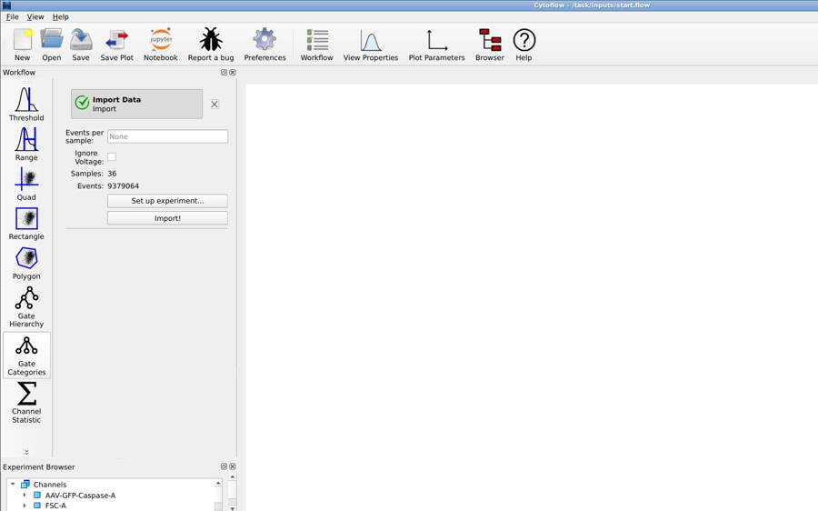
cat /usr/local/bin/cu; export DISPLAY=:1; which xdotool wmctrl xwininfo xrandr; xdotool search --name Cytoflow | head; xdotool getactivewindow getwindowgeometry 2>&1
#!/bin/bash
# Computer-use helper: the agent's only way to act on the screen.
# cu screenshot [path] -> PNG of the screen (default /tmp/screen.png); prints path
# cu click X Y [left|right|double]
# cu move X Y | cu drag X1 Y1 X2 Y2 | cu scroll X Y up|down [N]
# cu type "text" (keystrokes) | cu paste "text" (clipboard) | cu key KEYS (e.g. ctrl+s, Return)
# cu cursor -> current mouse position
export DISPLAY=${DISPLAY:-:1}
cmd=$1; shift
case "$cmd" in
screenshot) out=${1:-/tmp/screen.png}; scrot -o "$out" && echo "$out" ;;
click) xdotool mousemove "$1" "$2"; case "${3:-left}" in
left) xdotool click 1;; right) xdotool click 3;; double) xdotool click --repeat 2 1;; esac ;;
move) xdotool mousemove "$1" "$2" ;;
drag) xdotool mousemove "$1" "$2" mousedown 1 mousemove --sync "$3" "$4" mouseup 1 ;;
scroll) xdotool mousemove "$1" "$2"; b=$([ "$3" = up ] && echo 4 || echo 5); xdotool click --repeat "${4:-3}" $b ;;
type) xdotool type --delay 50 -- "$1" ;;
# paste: put text on the clipboard (detached owner process so it survives this command) then ctrl+v
# paste: own the clipboard (no -loops: Qt asks for TARGETS first, then the text), press ctrl+v,
# give Qt a moment to fetch it, then release. Robust both locally and on Modal.
paste) printf '%s' "$1" | xclip -quiet -selection clipboard -i >/dev/null 2>&1 & cp=$!
sleep 0.3; xdotool key ctrl+v; sleep 1; kill $cp 2>/dev/null; true ;;
key) xdotool key -- "$1" ;;
cursor) xdotool getmouselocation ;;
*) sed -n '2,9p' "$0"; exit 1 ;;
esac
/usr/bin/xdotool
/usr/bin/xwininfo
14680068
14680072
14680070
Window 14680070
Position: 2,40 (screen: 0)
Geometry: 2082x1171cu click 700 9 double; sleep 2; cu screenshot /tmp/screen.png; DISPLAY=:1 xdotool getactivewindow getwindowgeometry
{
"file_path": "/tmp/screen.png"
}/tmp/screen.png Window 14680070 Position: 0,38 (screen: 0) Geometry: 1440x881
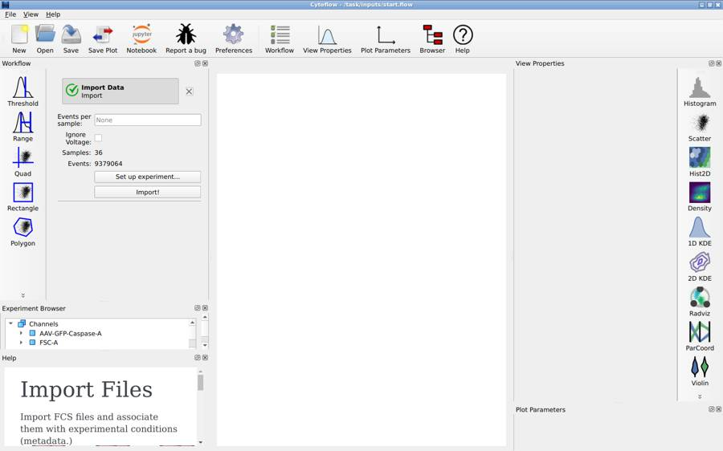
cu click 408 713; sleep 1; cu click 408 614; sleep 1; cu screenshot /tmp/screen.png
{
"file_path": "/tmp/screen.png"
}/tmp/screen.png
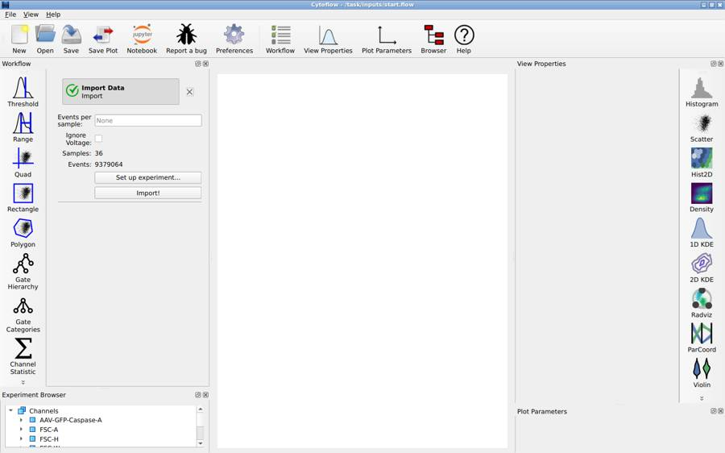
cu click 408 784; sleep 1; cu click 20 28; sleep 1; cu screenshot /tmp/screen.png
{
"file_path": "/tmp/screen.png"
}/tmp/screen.png
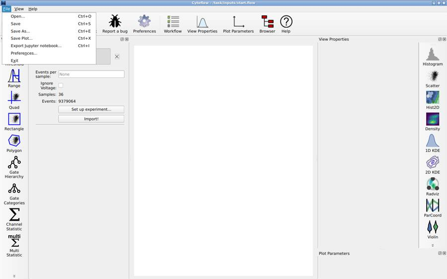
mkdir -p /task/outputs/work; cu click 65 100; sleep 2; cu screenshot /tmp/screen.png
{
"file_path": "/tmp/screen.png"
}/tmp/screen.png
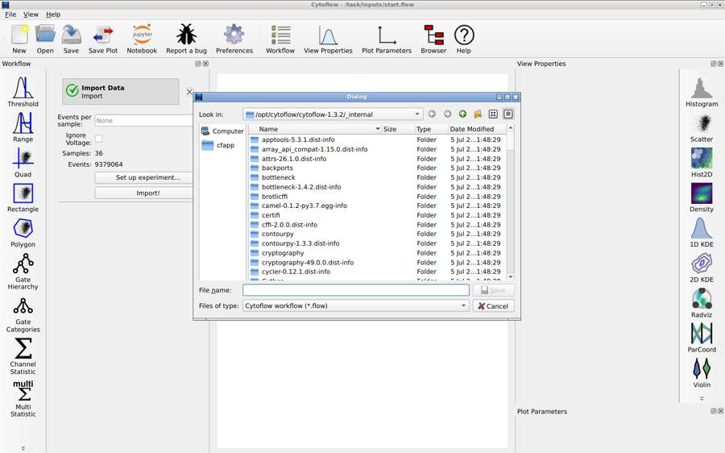
cu click 706 576; cu paste "/task/outputs/workflow.flow"; sleep 1; cu key Return; sleep 2; cu screenshot /tmp/screen.png; ls -la /task/outputs
{
"file_path": "/tmp/screen.png"
}/tmp/screen.png total 32 drwxrwsrwx 3 agent task 4096 Nov 10 19:15 . drwxr-xr-x 4 root root 4096 Nov 5 00:07 .. drwxr-sr-x 2 root task 4096 Nov 10 19:15 work -rw-rw-r-- 1 cfapp task 19815 Nov 10 19:15 workflow.flow
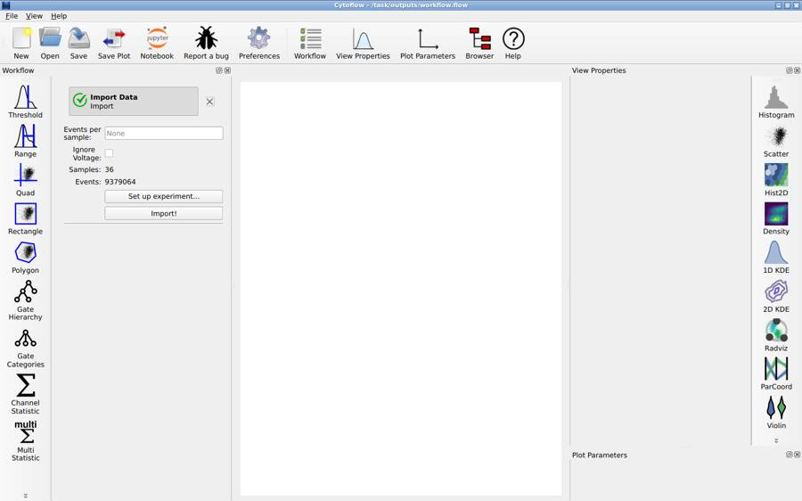
cu click 45 890; sleep 1; cu screenshot /tmp/screen.png
{
"file_path": "/tmp/screen.png"
}/tmp/screen.png
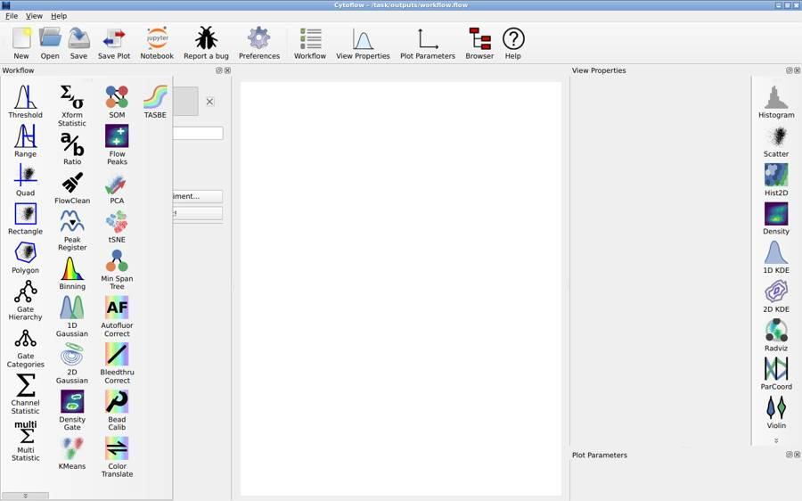
cu click 129 490; sleep 2; cu screenshot /tmp/screen.png
{
"file_path": "/tmp/screen.png"
}/tmp/screen.png
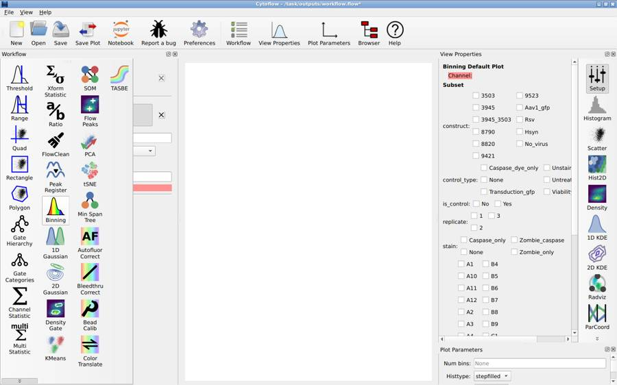
cu click 720 500; sleep 1; cu screenshot /tmp/screen.png
{
"file_path": "/tmp/screen.png"
}/tmp/screen.png

cu click 240 182; sleep 1; cu click 1393 180; sleep 2; cu screenshot /tmp/screen.png
{
"file_path": "/tmp/screen.png"
}/tmp/screen.png
cu click 1192 181; sleep 1; cu screenshot /tmp/screen.png
{
"file_path": "/tmp/screen.png"
}/tmp/screen.png
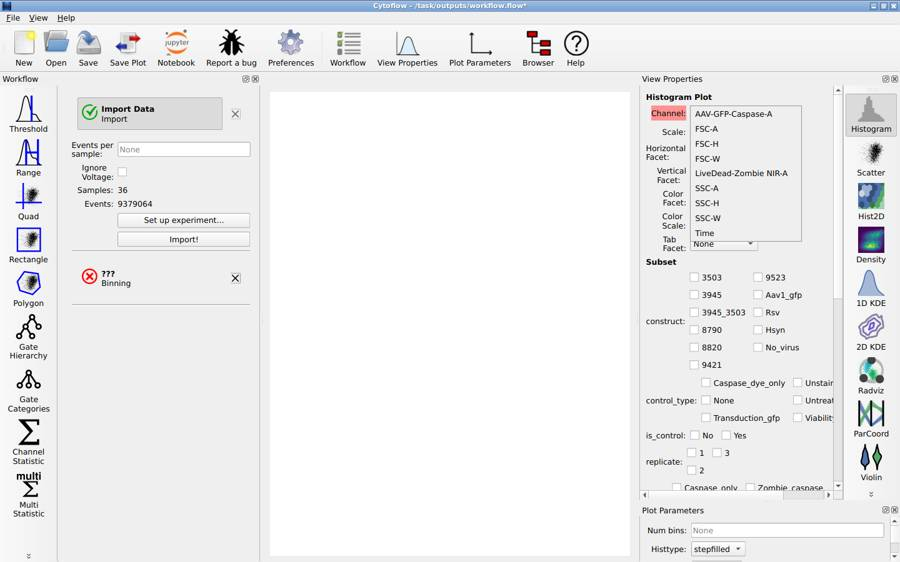
cat > /tmp/ws.sh <<'E'
#!/bin/bash
# wait until screen is stable (two identical screenshots 2s apart), max $1 seconds (default 90)
max=${1:-90}; t=0; prev=""
export DISPLAY=:1
while [ $t -lt $max ]; do
scrot -o /tmp/screen.png; cur=$(md5sum < /tmp/screen.png)
if [ "$cur" = "$prev" ]; then echo "stable after ${t}s"; exit 0; fi
prev=$cur; sleep 2; t=$((t+2))
done
echo "timeout"
E
chmod +x /tmp/ws.sh; cu click 1127 373; /tmp/ws.sh 60{
"file_path": "/tmp/screen.png"
}stable after 2s

cd /tmp; python3 -c "
from PIL import Image; import numpy as np
im=np.array(Image.open('/tmp/screen.png').convert('L'))
c=im[770:892,885:1010]; print((c<80).sum())
np.save('/tmp/gear.npy', c<80)
"
cat > /tmp/busy.py <<'E'
from PIL import Image; import numpy as np, sys
im=np.array(Image.open('/tmp/screen.png').convert('L'))
g=np.load('/tmp/gear.npy'); c=im[770:892,885:1010]<80
sys.exit(0 if (c&g).sum()>0.9*g.sum() else 1)
E
cat > /tmp/ws.sh <<'E'
#!/bin/bash
# wait until not busy (gear gone) and screen stable; max $1 seconds (default 120)
max=${1:-120}; t=0; prev=""
export DISPLAY=:1
sleep 1
while [ $t -lt $max ]; do
scrot -o /tmp/screen.png; cur=$(md5sum < /tmp/screen.png)
if ! python3 /tmp/busy.py && [ "$cur" = "$prev" ]; then echo "idle after ${t}s"; exit 0; fi
prev=$cur; sleep 2; t=$((t+2))
done
echo "timeout"
E
/tmp/ws.sh 120{
"file_path": "/tmp/screen.png"
}3795 Command did not complete within its 120s timeout and was moved to the background (ID: bhgkhzv9j). Output is being written to: /tmp/claude-0/-task/e4359a2e-c49a-49a5-9e85-96b2f2625899/tasks/bhgkhzv9j.output. You will be notified when it completes. If it is still running after 10m in the background, it will be stopped and you will be notified. It is running now: do not start a second copy while it runs. If it is no longer needed, stop it with TaskStop. To check interim output, use Read on that file path. Session cwd remains /task; directory changes made by the backgrounded command do not apply to subsequent commands.
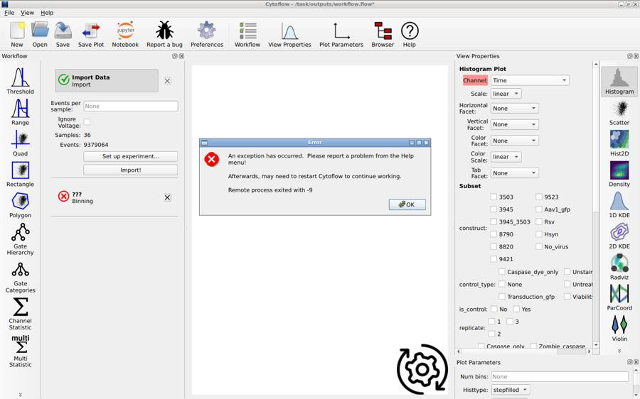
free -m; nproc; ps aux --sort=-rss | head -15; cat /sys/fs/cgroup/memory.max 2>/dev/null; cat /sys/fs/cgroup/memory.current 2>/dev/null
Exit code 1
total used free shared buff/cache available
Mem: 7949 988 6745 15 451 6961
Swap: 0 0 0
4
USER PID %CPU %MEM VSZ RSS TTY STAT START TIME COMMAND
cfapp 844 1.2 4.9 3580224 400732 ? Sl 19:13 0:04 /opt/cytoflow/cytoflow-1.3.2/cytoflow
root 1019 1.4 2.9 5688460 238912 ? Sl 19:13 0:04 claude --verbose --output-format=stream-json --effort high --model claude-fable-5-2 --permission-mode=bypassPermissions --print
root 816 0.1 0.4 232940 39968 ? S 19:13 0:00 Xvfb :1 -screen 0 1440x900x24 -nolisten tcp
cfapp 930 0.0 0.4 5240964 38096 ? Sl 19:13 0:00 /opt/cytoflow/cytoflow-1.3.2/_internal/PyQt5/Qt5/libexec/QtWebEngineProcess --type=zygote --application-name=cytoflow --webengine-schemes=qrc:sLV --lang=en
root 830 0.0 0.2 58956 23184 ? S 19:13 0:00 /usr/bin/python3 /usr/bin/websockify --web=/usr/share/novnc 6080 localhost:5900
cfapp 859 0.0 0.2 84344 22088 ? S 19:13 0:00 /opt/cytoflow/cytoflow-1.3.2/cytoflow -B -S -I -c from multiprocessing.resource_tracker import main;main(9)
agent 837 0.0 0.1 143128 11856 ? Sl 19:13 0:00 openbox
root 829 0.0 0.1 42244 9544 ? S 19:13 0:00 x11vnc -display :1 -forever -shared -nopw -quiet -rfbport 5900
cfapp 915 0.0 0.0 209224 7508 ? S 19:13 0:00 /opt/cytoflow/cytoflow-1.3.2/_internal/PyQt5/Qt5/libexec/QtWebEngineProcess --type=zygote --application-name=cytoflow --webengine-schemes=qrc:sLV --lang=en
cfapp 913 0.0 0.0 209224 7500 ? S 19:13 0:00 /opt/cytoflow/cytoflow-1.3.2/_internal/PyQt5/Qt5/libexec/QtWebEngineProcess --type=zygote --application-name=cytoflow --webengine-schemes=qrc:sLV --lang=en
cfapp 892 0.0 0.0 209224 7484 ? S 19:13 0:00 /opt/cytoflow/cytoflow-1.3.2/_internal/PyQt5/Qt5/libexec/QtWebEngineProcess --type=zygote --no-zygote-sandbox --application-name=cytoflow --webengine-schemes=qrc:sLV --lang=en
root 1606 0.0 0.0 8296 4416 ? R 19:18 0:00 ps aux --sort=-rss
root 1603 0.0 0.0 4896 3672 ? Ss 19:18 0:00 /bin/bash -c source /root/.claude/shell-snapshots/snapshot-bash-1794338021458-n4ah07.sh 2>/dev/null || true && shopt -u extglob 2>/dev/null || true && { \builtin unalias -- 'which'; \builtin unset -f -- 'which'; } >/dev/null 2>&1 || true && { \builtin unalias -- 'unsetenv'; \builtin unset -f -- 'unsetenv'; } >/dev/null 2>&1 || true && eval 'free -m; nproc; ps aux --sort=-rss | head -15; cat /sys/fs/cgroup/memory.max 2>/dev/null; cat /sys/fs/cgroup/memory.current 2>/dev/null' < /dev/null && pwd -P >| /tmp/claude-1e6a-cwd
root 1291 0.0 0.0 4764 3612 ? S 19:16 0:00 /bin/bash /tmp/ws.sh 120dmesg 2>/dev/null | tail -5; ps -ef | grep -v grep | grep -E "cytoflow|ws.sh" | cut -c1-200; pkill -f ws.sh; ls /opt/cytoflow /usr/local/bin; cat /proc/844/cmdline | tr '\0' ' '; echo; cat /proc/844/environ | tr '\0' '\n' | grep -vi -E "key|token|secret" | head -40; ps -o ppid= -p 844
Exit code 144 [ 194.063417] [ 1017] 0 1017 1193 86 84 2 0 49152 0 0 su [ 194.063463] [ 1018] 0 1018 1191 69 67 2 0 45056 0 0 bash [ 194.063510] [ 1019] 0 1019 1422115 42275 42273 2 0 1261568 0 0 claude [ 194.063557] oom-kill:constraint=CONSTRAINT_NONE,nodemask=(null),cpuset=/,mems_allowed=0,global_oom,task_memcg=/,task=cytoflow,pid=861,uid=1002 [ 194.063651] Out of memory: Killed process 861 (cytoflow) total-vm:8902168kB, anon-rss:7287024kB, file-rss:8kB, shmem-rss:28kB, UID:1002 pgtables:14920kB oom_score_adj:0 root 836 835 0 19:13 ? 00:00:00 runuser -u cfapp -- env DISPLAY=:1 HOME=/home/cfapp XDG_RUNTIME_DIR=/tmp/runtime-cfapp LANG=C.UTF-8 LC_ALL=C.UTF-8 bash -c umask 002; cd /task; exec sta cfapp 838 836 0 19:13 ? 00:00:00 /bin/bash /usr/local/bin/start-cytoflow cfapp 844 838 1 19:13 ? 00:00:04 /opt/cytoflow/cytoflow-1.3.2/cytoflow cfapp 859 844 0 19:13 ? 00:00:00 /opt/cytoflow/cytoflow-1.3.2/cytoflow -B -S -I -c from multiprocessing.resource_tracker import main;main(9) cfapp 892 844 0 19:13 ? 00:00:00 /opt/cytoflow/cytoflow-1.3.2/_internal/PyQt5/Qt5/libexec/QtWebEngineProcess --type=zygote --no-zygote-sandbox --application-name=cytoflow --webengine-sc cfapp 913 844 0 19:13 ? 00:00:00 /opt/cytoflow/cytoflow-1.3.2/_internal/PyQt5/Qt5/libexec/QtWebEngineProcess --type=zygote --application-name=cytoflow --webengine-schemes=qrc:sLV --lang cfapp 915 913 0 19:13 ? 00:00:00 /opt/cytoflow/cytoflow-1.3.2/_internal/PyQt5/Qt5/libexec/QtWebEngineProcess --type=zygote --application-name=cytoflow --webengine-schemes=qrc:sLV --lang cfapp 930 915 0 19:13 ? 00:00:00 /opt/cytoflow/cytoflow-1.3.2/_internal/PyQt5/Qt5/libexec/QtWebEngineProcess --type=zygote --application-name=cytoflow --webengine-schemes=qrc:sLV --lang
cat /usr/local/bin/start-cytoflow; ls /usr/local/bin; cat /proc/836/cmdline | tr '\0' ' '
#!/bin/bash
# Launch Cytoflow full-screen-ish; restart it if the agent closes it.
BIN=$(find /opt/cytoflow -maxdepth 3 -type f -name 'cytoflow' -perm -u+x | head -1)
[ -z "$BIN" ] && { echo "cytoflow binary not found under /opt/cytoflow"; exit 1; }
while true; do
"$BIN" >/tmp/cytoflow.log 2>&1
sleep 1
done
cu
start-cytoflow
runuser -u cfapp -- env DISPLAY=:1 HOME=/home/cfapp XDG_RUNTIME_DIR=/tmp/runtime-cfapp LANG=C.UTF-8 LC_ALL=C.UTF-8 bash -c umask 002; cd /task; exec start-cytoflowcu click 915 461; sleep 1; cu screenshot /tmp/screen.png
{
"file_path": "/tmp/screen.png"
}/tmp/screen.png
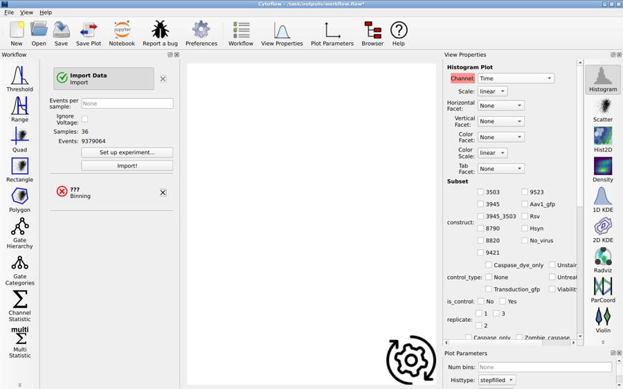
cu click 20 28; sleep 1; cu click 46 195; sleep 2; cu screenshot /tmp/screen.png
{
"file_path": "/tmp/screen.png"
}/tmp/screen.png

export DISPLAY=:1; until xdotool search --name "Cytoflow" >/dev/null 2>&1; do sleep 1; done; sleep 4; cu screenshot /tmp/screen.png; xdotool getactivewindow getwindowgeometry
{
"file_path": "/tmp/screen.png"
}/tmp/screen.png Window 14680070 Position: 2,40 (screen: 0) Geometry: 2082x1171

cat > /tmp/mem.sh <<'E'
#!/bin/bash
ps -eo rss,comm --sort=-rss | grep cytoflow | head -2 | awk '{printf "%s %d MB; ", $2, $1/1024}'; free -m | awk 'NR==2{print "avail " $7 " MB"}'
E
chmod +x /tmp/mem.sh
cu click 700 9 double; sleep 2; cu key ctrl+o; sleep 2; cu screenshot /tmp/screen.png{
"file_path": "/tmp/screen.png"
}/tmp/screen.png

cu click 706 576; cu paste "/task/outputs/workflow.flow"; sleep 1; cu key Return; sleep 3; cu screenshot /tmp/screen.png
{
"file_path": "/tmp/screen.png"
}/tmp/screen.png

cu click 738 427; for i in 1 2 3 4 5 6 7 8 9 10 11 12; do sleep 5; /tmp/mem.sh; done
cytoflow 2190 MB; cytoflow 521 MB; avail 4788 MB cytoflow 2191 MB; cytoflow 523 MB; avail 4817 MB cytoflow 2191 MB; cytoflow 523 MB; avail 4855 MB cytoflow 2191 MB; cytoflow 523 MB; avail 4878 MB cytoflow 2191 MB; cytoflow 523 MB; avail 4886 MB cytoflow 2191 MB; cytoflow 523 MB; avail 4887 MB cytoflow 2191 MB; cytoflow 523 MB; avail 4887 MB cytoflow 2191 MB; cytoflow 523 MB; avail 4887 MB cytoflow 2191 MB; cytoflow 523 MB; avail 4887 MB cytoflow 2191 MB; cytoflow 523 MB; avail 4887 MB cytoflow 2191 MB; cytoflow 523 MB; avail 4889 MB cytoflow 2191 MB; cytoflow 523 MB; avail 4889 MB
cu click 408 713; sleep 1; cu click 408 784; sleep 1; cu click 240 182; sleep 1; cu click 1393 180; sleep 2; cu scroll 1180 600 down 10; sleep 1; cu screenshot /tmp/screen.png
{
"file_path": "/tmp/screen.png"
}/tmp/screen.png
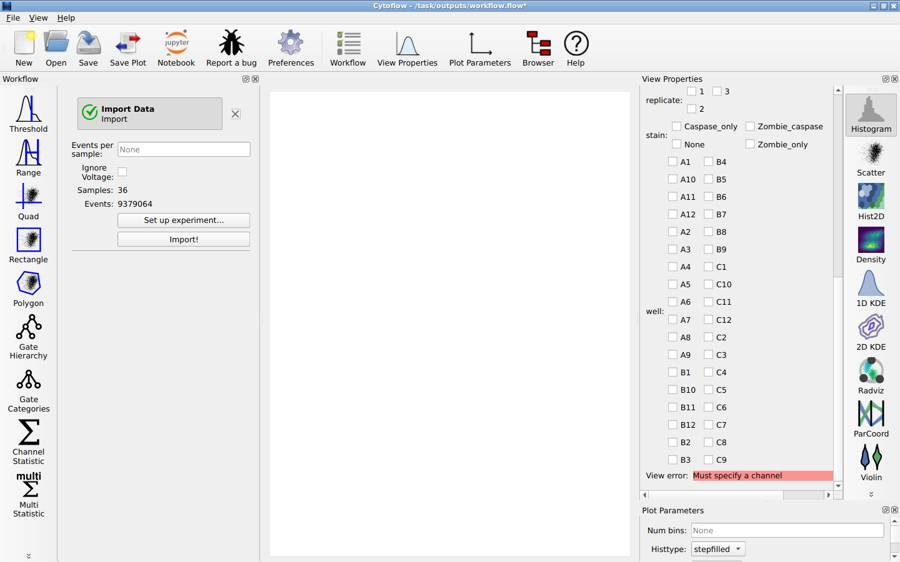
cu click 1134 455; sleep 1; cu scroll 1180 400 up 15; sleep 1; cu click 1192 181; sleep 1; cu click 1127 373; /tmp/ws.sh 60; /tmp/mem.sh
{
"file_path": "/tmp/screen.png"
}idle after 8s cytoflow 2192 MB; cytoflow 528 MB; avail 4812 MB
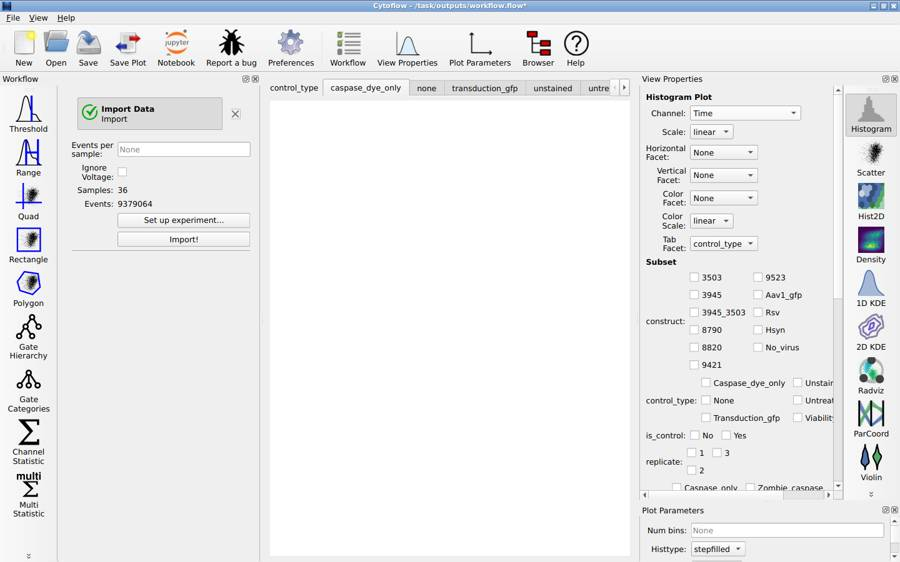
cu click 884 141; /tmp/ws.sh 60; /tmp/mem.sh
{
"file_path": "/tmp/screen.png"
}idle after 6s cytoflow 2194 MB; cytoflow 528 MB; avail 4806 MB
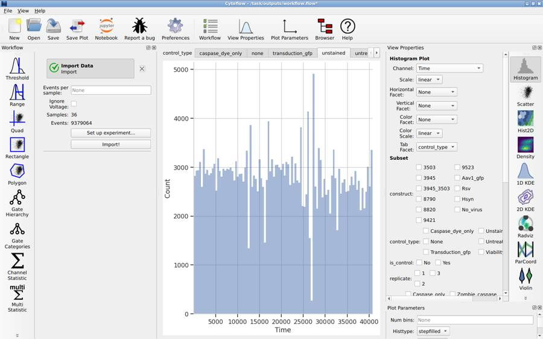
cu click 45 890; sleep 1; cu click 129 490; sleep 2; cu click 720 600; sleep 1; cu screenshot /tmp/screen.png
{
"file_path": "/tmp/screen.png"
}/tmp/screen.png
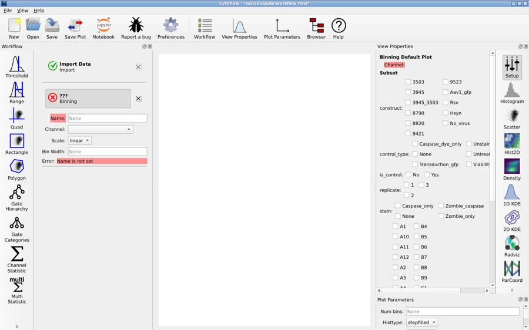
cu click 1076 617; sleep 1; cu click 292 322; cu type "TimeBin"; cu key Tab; sleep 1; cu click 272 352; sleep 1; cu screenshot /tmp/screen.png
{
"file_path": "/tmp/screen.png"
}/tmp/screen.png
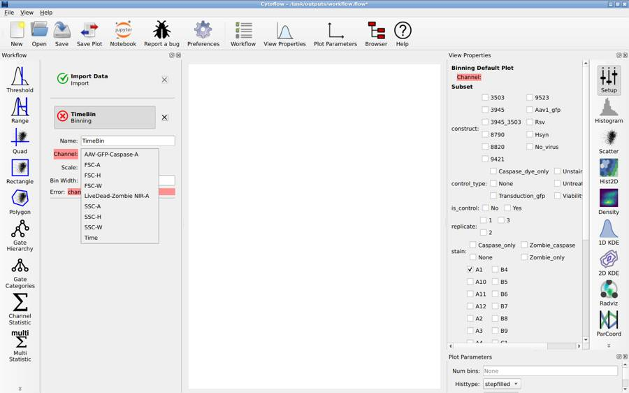
cu click 208 544; sleep 1; cu click 292 413; cu type "2000"; cu key Tab; /tmp/ws.sh 90; /tmp/mem.sh
{
"file_path": "/tmp/screen.png"
}idle after 10s cytoflow 2197 MB; cytoflow 534 MB; avail 4838 MB
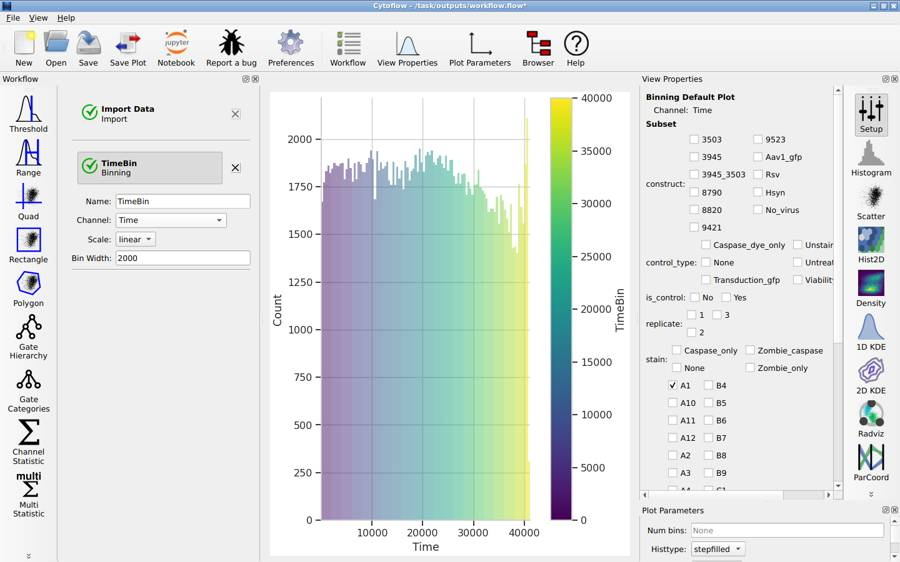
cu click 45 705; sleep 2; cu screenshot /tmp/screen.png
{
"file_path": "/tmp/screen.png"
}/tmp/screen.png
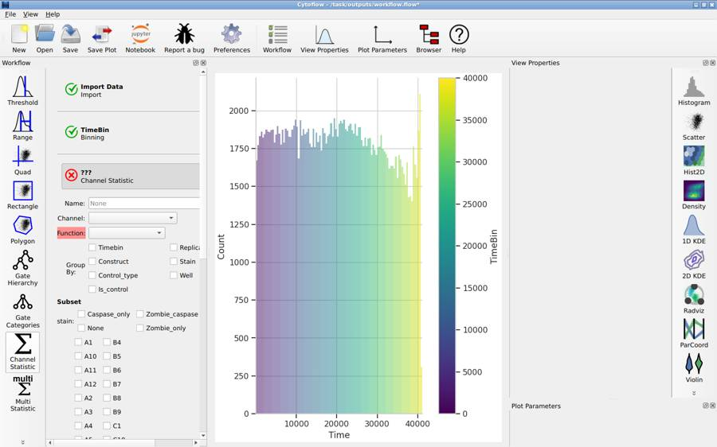
cu drag 420 510 500 510; sleep 1; cu click 290 409; cu type "TimeCount"; cu key Tab; sleep 1; cu click 265 439; sleep 1; cu screenshot /tmp/screen.png
{
"file_path": "/tmp/screen.png"
}/tmp/screen.png
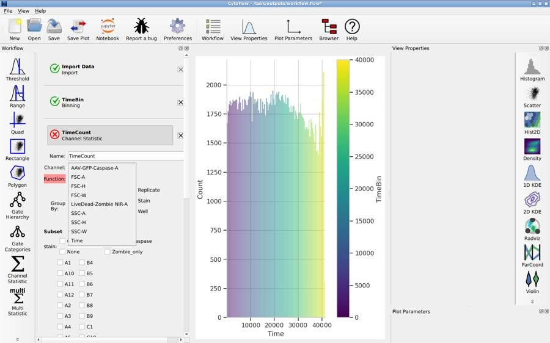
cu click 205 464; sleep 1; cu click 253 469; sleep 1; cu screenshot /tmp/screen.png
{
"file_path": "/tmp/screen.png"
}/tmp/screen.png
cu click 205 470; sleep 1; cu click 185 498; sleep 1; cu click 349 554; /tmp/ws.sh 60; /tmp/mem.sh
{
"file_path": "/tmp/screen.png"
}idle after 2s cytoflow 2197 MB; cytoflow 537 MB; avail 4829 MB
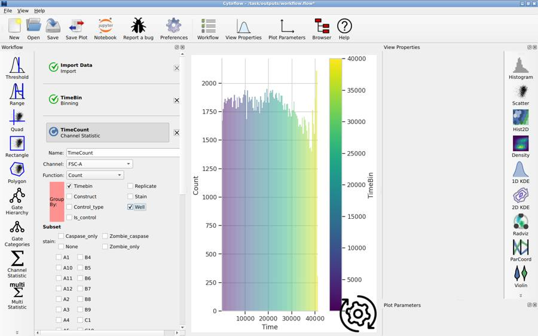
cat > /tmp/busy.py <<'E'
from PIL import Image; import numpy as np, sys
im=np.array(Image.open('/tmp/screen.png').convert('L'))
c=im[785:892,905:1010]<70
sys.exit(0 if c.sum()>1500 else 1)
E
python3 /tmp/busy.py; echo busy=$?; /tmp/ws.sh 100; /tmp/mem.sh{
"file_path": "/tmp/screen.png"
}busy=0 idle after 2s cytoflow 2292 MB; cytoflow 537 MB; avail 4692 MB
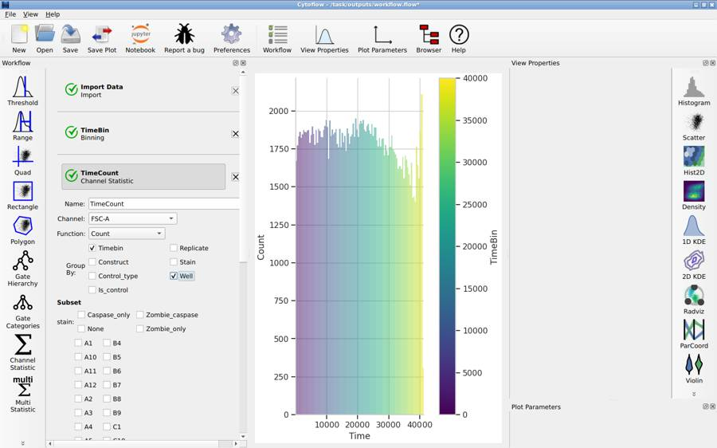
cu click 1393 790; sleep 1; cu screenshot /tmp/screen.png
{
"file_path": "/tmp/screen.png"
}/tmp/screen.png
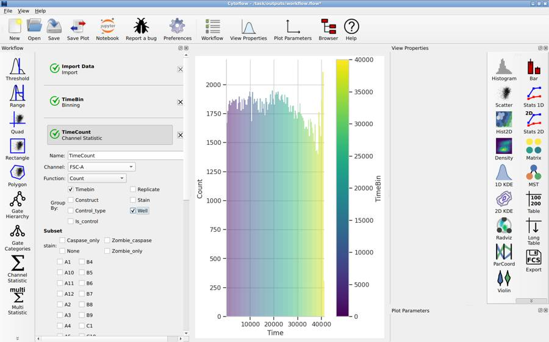
cu click 1399 610; sleep 2; cu click 760 500; sleep 1; cu screenshot /tmp/screen.png
{
"file_path": "/tmp/screen.png"
}/tmp/screen.png
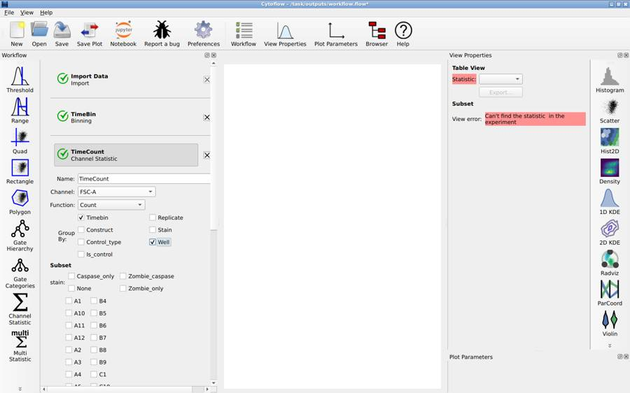
cu click 1144 181; sleep 1; cu screenshot /tmp/screen.png
{
"file_path": "/tmp/screen.png"
}/tmp/screen.png
cu click 1137 206; /tmp/ws.sh 60
{
"file_path": "/tmp/screen.png"
}idle after 2s
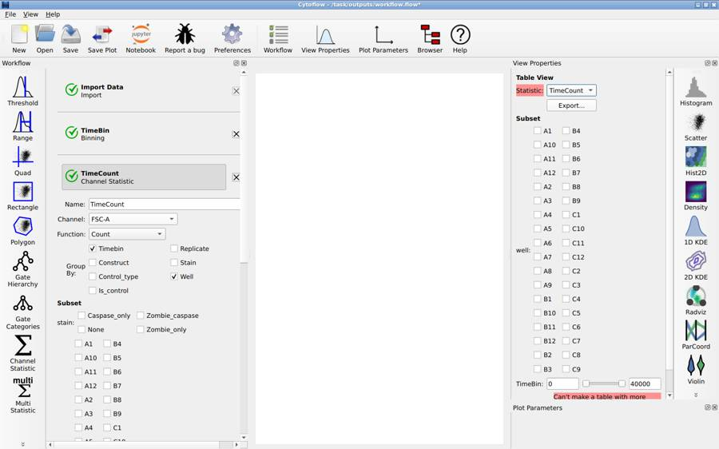
cu click 1144 211; sleep 2; cu screenshot /tmp/screen.png
{
"file_path": "/tmp/screen.png"
}/tmp/screen.png
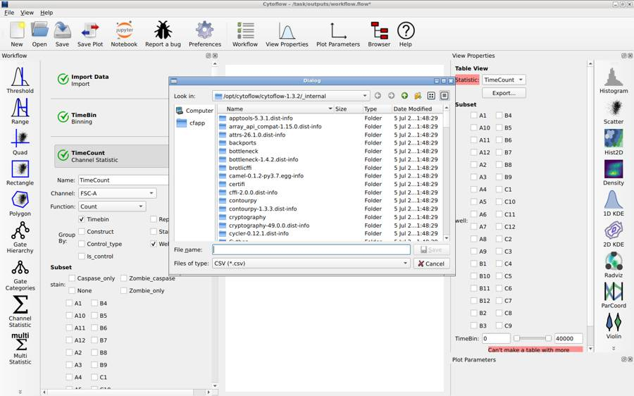
chmod 2777 /task/outputs/work; cu click 706 567; cu paste "/task/outputs/work/timecount.csv"; sleep 1; cu key Return; sleep 3; cu screenshot /tmp/screen.png; ls -la /task/outputs/work; head -5 /task/outputs/work/timecount.csv; wc -l /task/outputs/work/timecount.csv
/tmp/screen.png total 24 drwxrwsrwx 2 root task 4096 Nov 10 19:24 . drwxrwsrwx 3 agent task 4096 Nov 10 19:15 .. -rw-rw-r-- 1 cfapp task 12570 Nov 10 19:24 timecount.csv TimeBin,well,FSC-A 0,A1,8958.0 0,A10,17655.0 0,A11,11090.0 0,A12,17404.0 757 /task/outputs/work/timecount.csv
cd /task/outputs/work; python3 - <<'E'
import pandas as pd, re
d=pd.read_csv('timecount.csv')
p=d.pivot(index='well',columns='TimeBin',values='FSC-A')
key=lambda w:(w[0],int(w[1:]))
p=p.loc[sorted(p.index,key=key)]
pd.set_option('display.width',300); pd.set_option('display.max_columns',40)
p.columns=[int(c//1000) for c in p.columns]
print((p/1000).round(1).to_string())
print(p.sum(axis=1).astype(int).to_string())
print(int(p.sum().sum()))
E0 2 4 6 8 10 12 14 16 18 20 22 24 26 28 30 32 34 36 38 40 well A1 9.0 9.3 9.2 9.2 9.4 9.2 9.1 9.1 9.1 9.4 9.5 9.4 9.4 9.0 8.7 8.8 8.3 8.3 7.8 7.8 4.3 A2 13.5 11.2 11.0 11.1 10.7 11.0 10.8 10.7 11.1 11.3 11.0 11.8 11.6 11.2 10.5 10.5 10.2 9.6 9.7 9.2 4.0 A3 10.7 11.0 11.0 11.2 11.3 11.3 11.2 11.2 11.3 11.3 11.4 11.4 11.1 11.0 10.4 10.5 10.7 9.9 10.4 10.0 4.1 A4 8.4 8.2 8.1 8.2 8.3 8.1 8.1 8.3 8.4 8.7 8.5 8.0 8.0 7.7 7.7 7.2 7.7 6.7 6.7 7.4 2.0 A5 7.9 8.2 8.5 8.7 8.6 8.5 8.7 8.5 8.5 8.7 8.7 9.0 8.6 8.3 8.1 8.3 8.0 7.7 8.0 6.9 3.4 A6 11.7 12.0 11.6 11.7 11.7 11.7 11.5 11.8 12.0 12.3 12.1 12.4 11.7 11.2 10.8 10.7 10.2 10.2 9.8 10.5 3.1 A7 14.3 17.8 14.1 14.0 14.3 14.0 13.8 13.7 14.2 15.0 14.5 14.9 14.5 14.0 13.2 12.9 12.5 13.3 12.7 11.0 4.1 A8 11.4 12.0 11.8 11.9 12.0 12.1 11.7 12.0 12.1 12.5 12.9 12.4 12.3 12.1 12.0 11.1 10.5 10.5 9.8 9.1 4.9 A9 12.4 12.7 12.4 12.5 12.4 12.4 12.0 12.1 12.7 12.7 13.1 12.6 12.1 12.1 11.3 10.8 11.0 10.0 10.4 11.0 3.2 A10 17.7 17.7 17.2 17.2 17.0 17.9 16.9 17.3 18.0 17.6 18.0 17.1 16.6 16.4 16.4 15.4 15.8 14.4 14.2 14.1 3.2 A11 11.1 11.4 11.3 11.4 11.4 11.5 11.5 11.5 11.7 11.9 11.8 11.8 11.7 11.2 10.6 10.3 10.5 10.7 9.9 9.9 5.2 A12 17.4 17.4 16.8 17.2 17.2 17.2 16.8 16.9 17.0 17.4 17.4 17.2 15.8 15.7 15.9 14.7 15.1 14.5 14.6 15.0 3.7 B1 12.9 13.5 13.0 13.0 13.2 13.0 12.7 13.0 13.3 13.8 14.0 13.4 12.8 12.9 11.4 11.8 12.0 11.0 11.7 10.7 1.9 B2 15.7 16.5 16.1 16.4 16.7 15.7 15.7 16.2 15.4 16.8 16.8 17.0 16.6 15.6 13.0 15.3 15.1 14.4 14.5 13.1 6.7 B3 14.1 13.7 14.0 14.3 14.0 14.1 14.0 14.3 14.6 14.8 14.4 14.6 14.6 12.3 13.0 12.5 13.5 12.0 13.2 11.1 2.3 B4 10.8 11.1 11.0 10.9 10.8 10.9 10.9 10.5 11.0 11.4 11.6 11.4 10.8 11.7 10.5 10.5 10.0 10.1 9.9 9.2 4.8 B5 11.4 11.8 11.4 11.3 11.4 11.4 11.3 11.3 11.8 11.7 11.9 11.6 11.0 10.8 10.9 10.2 10.7 9.8 10.0 10.9 2.7 B6 18.0 18.5 18.5 18.6 18.7 18.7 18.4 18.5 18.7 19.1 19.1 18.9 18.4 18.4 17.3 17.1 16.7 16.4 15.5 17.0 8.4 B7 8.9 9.4 9.3 9.6 9.6 9.5 9.4 9.2 9.4 9.5 9.6 9.5 9.5 9.5 8.9 9.0 8.5 8.2 7.9 8.0 4.3 B8 23.7 28.8 19.8 20.2 20.4 20.1 19.8 20.0 20.4 20.9 20.5 20.7 20.0 19.7 19.1 19.6 18.2 18.1 17.2 18.4 6.7 B9 11.6 11.7 11.6 11.3 11.5 11.1 11.3 11.4 11.8 12.1 11.8 11.7 11.1 11.2 10.3 9.6 9.5 9.1 10.6 7.9 1.2 B10 9.2 9.4 9.4 9.6 9.6 9.4 9.2 9.4 9.3 9.6 9.6 9.3 9.5 8.8 8.3 9.0 8.6 8.8 8.2 8.2 4.9 B11 14.6 14.5 14.1 14.1 14.6 14.4 14.2 14.3 14.4 14.6 14.5 14.2 13.8 13.6 12.7 13.0 12.8 11.5 12.2 8.0 1.4 B12 14.4 14.6 14.4 14.6 14.7 14.4 14.5 14.5 14.6 14.9 15.2 14.9 14.7 14.1 13.6 12.9 12.6 12.9 11.8 12.5 6.1 C1 0.2 0.1 1.1 2.2 3.9 3.9 14.5 16.8 17.3 16.3 18.7 20.6 11.1 17.2 18.7 15.7 33.3 22.2 13.4 2.4 1.2 C2 0.3 0.1 2.3 6.6 14.3 12.5 11.1 14.7 15.6 15.8 19.2 27.5 21.7 19.7 24.0 21.1 18.0 17.8 18.0 18.7 6.6 C3 17.8 20.0 20.4 20.8 21.4 21.5 21.6 21.3 21.7 21.7 22.2 22.0 21.8 20.3 19.7 20.3 19.3 19.6 18.3 19.1 7.9 C4 9.1 10.1 10.7 11.0 11.7 11.8 12.0 12.0 11.9 12.0 12.5 12.4 12.0 11.7 11.3 11.0 10.6 10.9 9.8 11.0 4.8 C5 11.7 9.7 9.8 9.9 10.3 10.4 10.5 10.8 11.1 11.4 11.3 11.2 10.7 10.9 10.2 10.0 10.2 8.9 10.5 6.5 0.7 C6 9.6 10.0 9.6 9.8 10.2 10.0 9.9 10.0 10.4 10.7 10.2 10.0 10.1 9.7 9.3 9.0 9.0 7.9 8.3 5.2 0.8 C7 16.5 17.0 16.4 16.5 15.5 15.5 16.0 15.6 15.5 16.4 16.7 15.4 15.8 13.1 15.2 15.0 14.3 15.5 13.7 15.9 6.5 C8 11.8 12.0 11.6 11.6 11.7 11.4 11.3 11.8 11.8 11.4 11.6 10.1 10.9 10.6 10.0 10.8 10.1 10.2 10.4 3.8 0.0 C9 11.5 11.4 11.7 11.5 11.0 11.3 11.1 11.1 10.5 11.7 11.7 10.7 11.1 7.9 12.4 10.0 10.1 11.0 9.4 10.7 4.8 C10 14.0 14.4 14.3 14.3 13.7 14.4 13.6 13.7 13.5 14.4 14.7 14.1 12.6 13.2 13.1 13.1 12.2 12.9 12.5 12.5 5.5 C11 19.3 19.0 18.4 18.8 19.3 18.3 18.5 17.9 18.8 18.8 17.9 17.8 16.6 19.3 13.7 15.6 19.8 16.4 15.8 16.0 8.1 C12 15.6 16.1 15.7 15.9 15.9 16.3 15.9 15.2 15.6 15.9 16.1 15.9 15.4 15.5 14.3 14.2 13.7 13.0 12.4 13.1 5.8 well A1 183353 A2 221770 A3 222545 A4 160440 A5 169911 A6 230857 A7 282723 A8 236938 A9 241833 A10 335810 A11 228556 A12 330844 B1 254845 B2 319449 B3 275473 B4 219859 B5 225148 B6 369018 B7 186946 B8 412353 B9 219409 B10 187472 B11 271438 B12 286933 C1 250794 C2 305451 C3 418796 C4 230134 C5 206789 C6 189779 C7 317865 C8 214991 C9 222410 C10 276619 C11 364071 C12 307442 9379064
cu click 290 268; sleep 2; cu screenshot /tmp/screen.png
{
"file_path": "/tmp/screen.png"
}/tmp/screen.png
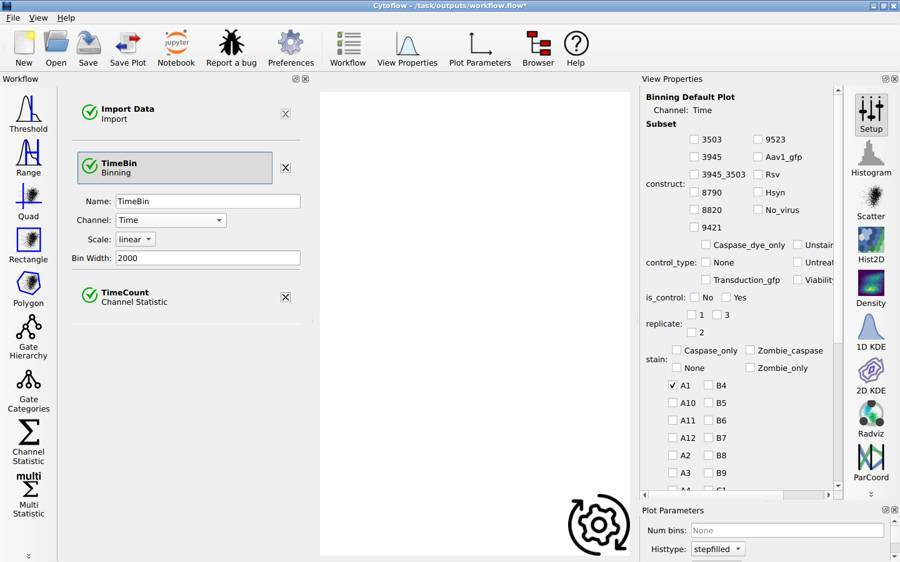
/tmp/ws.sh 60; cu click 330 413; cu key ctrl+a; cu type "500"; cu key Tab; /tmp/ws.sh 90; /tmp/mem.sh
{
"file_path": "/tmp/screen.png"
}idle after 2s idle after 20s cytoflow 2305 MB; cytoflow 541 MB; avail 4641 MB
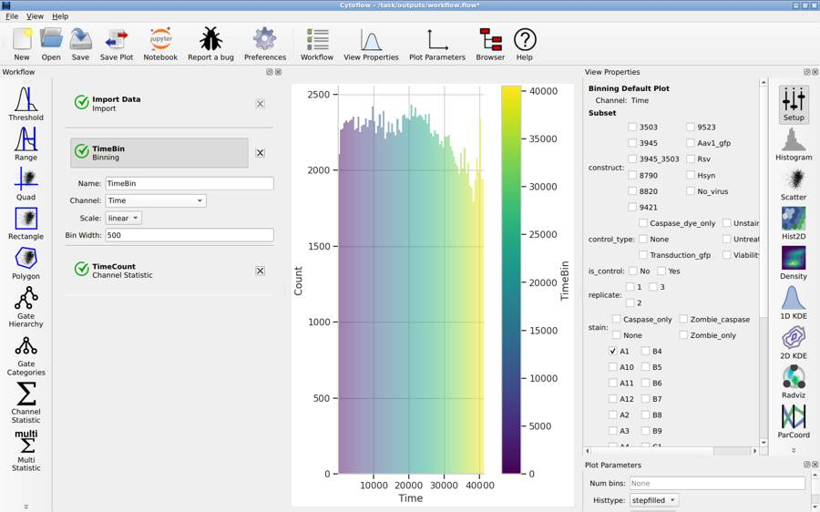
cat > /tmp/export.sh <<'E' #!/bin/bash # export current table view to $1 (must not exist) rm -f "$1" cu click 1144 211; sleep 2; cu click 706 567; cu paste "$1"; sleep 0.5; cu key Return; sleep 2 ls -la "$1" E chmod +x /tmp/export.sh cu click 290 475; /tmp/ws.sh 60; cu screenshot /tmp/screen.png
{
"file_path": "/tmp/screen.png"
}idle after 2s /tmp/screen.png
/tmp/export.sh /task/outputs/work/timecount_500ms.csv; wc -l /task/outputs/work/timecount_500ms.csv; cu screenshot /tmp/screen.png
-rw-rw-r-- 1 cfapp task 46436 Nov 10 19:25 /task/outputs/work/timecount_500ms.csv 2915 /task/outputs/work/timecount_500ms.csv /tmp/screen.png
cu click 253 469; sleep 1; cu click 208 733; /tmp/ws.sh 60; /tmp/export.sh /task/outputs/work/tb_median_FSC-A.csv for spec in "440 BL1-A" "535 RL3-A" "559 SSC-A"; do set -- $spec; cu click 265 439; sleep 1; cu click 250 $1; /tmp/ws.sh 60; /tmp/export.sh /task/outputs/work/tb_median_$2.csv; done; head -3 /task/outputs/work/tb_median_*.csv; cu screenshot /tmp/screen.png
idle after 12s -rw-rw-r-- 1 cfapp task 51493 Nov 10 19:26 /task/outputs/work/tb_median_FSC-A.csv idle after 2s -rw-rw-r-- 1 cfapp task 51493 Nov 10 19:26 /task/outputs/work/tb_median_BL1-A.csv idle after 12s -rw-rw-r-- 1 cfapp task 52047 Nov 10 19:26 /task/outputs/work/tb_median_RL3-A.csv idle after 2s -rw-rw-r-- 1 cfapp task 52047 Nov 10 19:26 /task/outputs/work/tb_median_SSC-A.csv ==> /task/outputs/work/tb_median_BL1-A.csv <== TimeBin,well,FSC-A 0,A1,99515.0 0,A10,101078.0 ==> /task/outputs/work/tb_median_FSC-A.csv <== TimeBin,well,FSC-A 0,A1,99515.0 0,A10,101078.0 ==> /task/outputs/work/tb_median_RL3-A.csv <== TimeBin,well,SSC-A 0,A1,115158.0 0,A10,118555.0 ==> /task/outputs/work/tb_median_SSC-A.csv <== TimeBin,well,SSC-A 0,A1,115158.0 0,A10,118555.0 /tmp/screen.png
sed -i 's/^sleep 1$/sleep 4/' /tmp/ws.sh cat > /tmp/combo.sh <<'E' #!/bin/bash # combo.sh X Y INDEX : open combobox at X,Y and select INDEX-th item (0-based) via keyboard cu click $1 $2; sleep 0.7; cu key Home; i=0; while [ $i -lt $3 ]; do cu key Down; i=$((i+1)); done; cu key Return; sleep 0.5 E chmod +x /tmp/combo.sh /tmp/combo.sh 265 439 0; /tmp/ws.sh 60; /tmp/export.sh /task/outputs/work/tb_median_BL1-A.csv; head -2 /task/outputs/work/tb_median_BL1-A.csv /tmp/combo.sh 265 439 4; /tmp/ws.sh 60; /tmp/export.sh /task/outputs/work/tb_median_RL3-A.csv; head -2 /task/outputs/work/tb_median_RL3-A.csv
idle after 10s -rw-rw-r-- 1 cfapp task 43599 Nov 10 19:27 /task/outputs/work/tb_median_BL1-A.csv TimeBin,well,AAV-GFP-Caspase-A 0,A1,626.0 idle after 10s -rw-rw-r-- 1 cfapp task 47933 Nov 10 19:27 /task/outputs/work/tb_median_RL3-A.csv TimeBin,well,LiveDead-Zombie NIR-A 0,A1,20985.0
cd /task/outputs/work; python3 - <<'E'
import pandas as pd, numpy as np
key=lambda w:(w[0],int(w[1:]))
def piv(f):
d=pd.read_csv(f); d.columns=['TimeBin','well','v']
p=d.pivot(index='well',columns='TimeBin',values='v'); p=p.loc[sorted(p.index,key=key)]; return p
c=piv('timecount_500ms.csv').fillna(0)
print('bins',list(c.columns)[:3],list(c.columns)[-3:])
np.set_printoptions(linewidth=400)
for w in c.index:
r=c.loc[w].values
full=r[:80]
med=np.median(full)
print(f"{w:4s} tot={int(r.sum()):7d} med/bin={med:6.0f} min={full.min():6.0f}@{c.columns[full.argmin()]/1000:4.1f}s max={full.max():6.0f}@{c.columns[full.argmax()]/1000:4.1f}s cv={full.std()/full.mean():.2f} lastbins={r[76:].astype(int)} n<0.5med={int((full<0.5*med).sum())} n>1.5med={int((full>1.5*med).sum())}")
for f in ['FSC-A','SSC-A','BL1-A','RL3-A']:
p=piv(f'tb_median_{f}.csv')
print(f)
for w in p.index:
r=p.loc[w].values[:80]
m=np.nanmedian(r)
print(f" {w:4s} med={m:9.0f} min={np.nanmin(r):9.0f} max={np.nanmax(r):9.0f} first4s={np.nanmedian(r[:8]):9.0f} last4s={np.nanmedian(r[-8:]):9.0f} relrange={(np.nanmax(r)-np.nanmin(r))/abs(m):.2f}")
Ebins [0, 500, 1000] [39000, 39500, 40000] A1 tot= 181411 med/bin= 2272 min= 1795@38.0s max= 2433@20.5s cv=0.06 lastbins=[1795 1936 2081 1988 2342] n<0.5med=0 n>1.5med=0 A2 tot= 220064 med/bin= 2727 min= 2135@39.0s max= 3585@ 0.0s cv=0.09 lastbins=[2378 2496 2135 2198 2280] n<0.5med=0 n>1.5med=0 A3 tot= 220496 med/bin= 2754 min= 2337@26.5s max= 3134@27.0s cv=0.05 lastbins=[2577 2459 2440 2478 2057] n<0.5med=0 n>1.5med=0 A4 tot= 159574 med/bin= 2013 min= 1261@39.5s max= 2334@24.0s cv=0.09 lastbins=[1882 2223 2014 1261 1113] n<0.5med=0 n>1.5med=0 A5 tot= 168446 med/bin= 2122 min= 1467@27.5s max= 2522@27.0s cv=0.07 lastbins=[1832 1718 1649 1662 1907] n<0.5med=0 n>1.5med=0 A6 tot= 229714 med/bin= 2916 min= 1971@39.5s max= 3259@38.5s cv=0.08 lastbins=[2875 3259 2418 1971 1932] n<0.5med=0 n>1.5med=0 A7 tot= 281770 med/bin= 3520 min= 2614@38.0s max= 6551@ 3.5s cv=0.13 lastbins=[2614 2623 2780 2961 3175] n<0.5med=0 n>1.5med=1 A8 tot= 234526 med/bin= 2964 min= 2007@37.5s max= 3270@20.0s cv=0.09 lastbins=[2637 2057 2231 2206 2480] n<0.5med=0 n>1.5med=0 A9 tot= 240427 med/bin= 3061 min= 2048@35.5s max= 3470@28.0s cv=0.09 lastbins=[2850 3174 2799 2198 1763] n<0.5med=0 n>1.5med=0 A10 tot= 335314 med/bin= 4248 min= 2653@39.5s max= 4976@10.0s cv=0.09 lastbins=[3986 4237 3180 2653 2665] n<0.5med=0 n>1.5med=0 A11 tot= 225896 med/bin= 2852 min= 1883@32.0s max= 3575@10.5s cv=0.09 lastbins=[2403 2542 2398 2557 2587] n<0.5med=0 n>1.5med=0 A12 tot= 329500 med/bin= 4212 min= 2753@39.5s max= 4924@38.5s cv=0.08 lastbins=[4009 4924 3339 2753 2351] n<0.5med=0 n>1.5med=0 B1 tot= 254117 med/bin= 3244 min= 1754@39.5s max= 3667@38.0s cv=0.09 lastbins=[3667 2793 2524 1754 1125] n<0.5med=0 n>1.5med=0 B2 tot= 316333 med/bin= 4046 min= 364@30.0s max= 5744@31.0s cv=0.16 lastbins=[3120 3176 3153 3607 3576] n<0.5med=2 n>1.5med=0 B3 tot= 274696 med/bin= 3462 min= 2050@26.0s max= 4018@19.5s cv=0.10 lastbins=[3187 3076 2686 2139 1552] n<0.5med=0 n>1.5med=0 B4 tot= 217769 med/bin= 2715 min= 1974@25.5s max= 3320@25.0s cv=0.08 lastbins=[2313 2200 2731 1985 2668] n<0.5med=0 n>1.5med=0 B5 tot= 224096 med/bin= 2826 min= 2119@27.0s max= 3254@38.5s cv=0.07 lastbins=[2588 3254 2751 2275 1656] n<0.5med=0 n>1.5med=0 B6 tot= 365542 med/bin= 4586 min= 3669@37.0s max= 4895@20.5s cv=0.06 lastbins=[3937 3925 4513 4627 4918] n<0.5med=0 n>1.5med=0 B7 tot= 184604 med/bin= 2346 min= 1774@37.5s max= 2487@26.0s cv=0.07 lastbins=[2092 1855 2017 2028 1915] n<0.5med=0 n>1.5med=0 B8 tot= 411066 med/bin= 5004 min= 4157@37.5s max= 11501@ 3.5s cv=0.16 lastbins=[4546 4499 4825 4580 5427] n<0.5med=0 n>1.5med=1 B9 tot= 218940 med/bin= 2828 min= 1206@39.5s max= 3186@19.0s cv=0.11 lastbins=[2659 2248 1822 1206 695] n<0.5med=1 n>1.5med=0 B10 tot= 185396 med/bin= 2324 min= 1554@29.5s max= 2670@24.0s cv=0.08 lastbins=[1720 2124 2016 2325 2873] n<0.5med=0 n>1.5med=0 B11 tot= 270948 med/bin= 3523 min= 1182@39.5s max= 3776@11.0s cv=0.13 lastbins=[2728 2243 1878 1182 870] n<0.5med=1 n>1.5med=0 B12 tot= 284646 med/bin= 3600 min= 2756@38.0s max= 3844@21.5s cv=0.07 lastbins=[2756 3072 3331 3348 3846] n<0.5med=0 n>1.5med=0 C1 tot= 249747 med/bin= 2820 min= 0@ 4.0s max= 9914@32.0s cv=0.85 lastbins=[1313 967 98 16 123] n<0.5med=27 n>1.5med=27 C2 tot= 302724 med/bin= 4278 min= 5@ 3.0s max= 8065@22.0s cv=0.54 lastbins=[4666 4278 4851 4901 3836] n<0.5med=18 n>1.5med=4 C3 tot= 416224 med/bin= 5242 min= 3578@39.0s max= 5783@39.5s cv=0.08 lastbins=[4598 5119 3578 5783 5339] n<0.5med=0 n>1.5med=0 C4 tot= 227995 med/bin= 2862 min= 2130@ 0.0s max= 3205@21.5s cv=0.08 lastbins=[2539 2745 2764 2961 2691] n<0.5med=0 n>1.5med=0 C5 tot= 206637 med/bin= 2600 min= 885@39.5s max= 3209@ 0.0s cv=0.12 lastbins=[2280 1756 1567 885 556] n<0.5med=1 n>1.5med=0 C6 tot= 189550 med/bin= 2444 min= 715@39.5s max= 2734@18.5s cv=0.13 lastbins=[1648 1600 1252 715 547] n<0.5med=1 n>1.5med=0 C7 tot= 315097 med/bin= 4012 min= 12@26.5s max= 5920@27.0s cv=0.23 lastbins=[3501 4189 3635 4603 3699] n<0.5med=3 n>1.5med=0 C8 tot= 214975 med/bin= 2809 min= 247@39.5s max= 4701@23.5s cv=0.22 lastbins=[1930 953 636 247 10] n<0.5med=4 n>1.5med=1 C9 tot= 220677 med/bin= 2755 min= 773@30.5s max= 4607@29.0s cv=0.18 lastbins=[2546 2557 2681 2882 3068] n<0.5med=1 n>1.5med=1 C10 tot= 274379 med/bin= 3488 min= 546@26.5s max= 4875@26.0s cv=0.17 lastbins=[3161 2979 2884 3505 3284] n<0.5med=2 n>1.5med=0 C11 tot= 360477 med/bin= 4600 min= 138@30.5s max= 6876@31.5s cv=0.21 lastbins=[4402 3640 3313 4628 4493] n<0.5med=4 n>1.5med=0 C12 tot= 304861 med/bin= 3895 min= 2752@26.5s max= 4642@27.0s cv=0.10 lastbins=[3162 3228 3012 3680 3213] n<0.5med=0 n>1.5med=0 FSC-A A1 med= 106601 min= 90480 max= 116948 first4s= 93038 last4s= 97068 relrange=0.25 A2 med= 108054 min= 90907 max= 118020 first4s= 97009 last4s= 105250 relrange=0.25 A3 med= 108056 min= 92945 max= 121176 first4s= 95848 last4s= 105409 relrange=0.26 A4 med= 116633 min= 101851 max= 127288 first4s= 107554 last4s= 105262 relrange=0.22 A5 med= 107066 min= 92322 max= 121254 first4s= 95802 last4s= 102791 relrange=0.27 A6 med= 110773 min= 96774 max= 121540 first4s= 102080 last4s= 106132 relrange=0.22 A7 med= 108100 min= 92187 max= 121838 first4s= 95711 last4s= 100420 relrange=0.27 A8 med= 115052 min= 96546 max= 125070 first4s= 100191 last4s= 112284 relrange=0.25 A9 med= 112387 min= 98585 max= 125660 first4s= 103010 last4s= 106793 relrange=0.24 A10 med= 109712 min= 95198 max= 118329 first4s= 99030 last4s= 106801 relrange=0.21 A11 med= 101938 min= 86246 max= 116005 first4s= 91572 last4s= 95758 relrange=0.29 A12 med= 103508 min= 87106 max= 115652 first4s= 92080 last4s= 97534 relrange=0.28 B1 med= 107583 … [12,932 more characters not shown]
cd /task/outputs/work; python3 - <<'E'
import pandas as pd, numpy as np
key=lambda w:(w[0],int(w[1:]))
def piv(f):
d=pd.read_csv(f); d.columns=['TimeBin','well','v']
p=d.pivot(index='well',columns='TimeBin',values='v'); return p
c=piv('timecount_500ms.csv').fillna(0); F=piv('tb_median_FSC-A.csv'); S=piv('tb_median_SSC-A.csv'); B=piv('tb_median_BL1-A.csv'); R=piv('tb_median_RL3-A.csv')
np.set_printoptions(linewidth=250)
for w in ['C1','C2','C8','C7','C9','C10','C11','B2','B9','B11','C5','C6','A1']:
print('==',w)
print(' cnt ', ' '.join(f"{int(x):5d}" for x in c.loc[w].values))
print(' FSCk', ' '.join(f"{x/1000:5.0f}" if x==x else ' nan' for x in F.loc[w].values))
print(' SSCk', ' '.join(f"{x/1000:5.0f}" if x==x else ' nan' for x in S.loc[w].values))
print(' BL1 ', ' '.join(f"{x:5.0f}" if x==x else ' nan' for x in B.loc[w].values))
print(' RL3h', ' '.join(f"{x/100:5.0f}" if x==x else ' nan' for x in R.loc[w].values))
E<persisted-output> Output too large (31.3KB). Full output saved to: /root/.claude/projects/-task/e4359a2e-c49a-49a5-9e85-96b2f2625899/tool-results/bvmikyzpa.txt Preview (first 2KB): == C1 cnt 27 47 36 55 39 29 21 5 0 0 206 865 238 46 1616 264 20 1228 1481 1191 597 302 1788 1251 3489 3847 2903 4266 1232 4734 1846 8998 3217 3096 3817 7143 4268 3783 4717 3536 532 2452 8182 7525 6506 6294 5976 1839 1687 2069 2747 4646 5984 4949 2893 3325 1608 4847 6708 5564 3312 1625 2525 8241 9914 8962 7456 6944 6219 5475 5285 5266 4377 3931 2994 2127 1313 967 98 16 123 FSCk 73 83 89 115 81 69 56 39 nan nan 77 84 99 140 90 85 112 76 87 88 88 88 97 97 94 100 97 108 84 105 105 117 93 120 124 119 129 108 107 108 117 137 143 126 119 114 103 75 59 55 74 116 128 114 90 86 107 121 123 123 92 62 86 130 129 125 120 113 110 104 104 103 100 100 86 73 55 47 32 28 80 SSCk 72 77 115 148 77 63 67 35 nan nan 117 114 83 68 123 122 146 115 124 133 163 125 135 176 157 152 140 165 153 179 174 187 154 179 200 190 223 160 161 173 163 242 248 214 195 180 154 113 74 65 91 178 198 177 125 124 182 197 204 184 113 65 94 183 184 177 170 153 147 130 122 123 115 114 90 74 51 41 25 25 102 BL1 141 151 166 237 144 154 100 55 nan nan 172 226 144 6 368 400 396 406 493 529 567 534 548 656 649 643 580 643 620 704 635 725 597 680 719 698 755 588 591 610 552 738 792 700 647 611 561 430 284 236 352 614 655 607 469 462 566 640 664 614 416 236 352 605 598 585 562 518 499 461 454 450 429 420 318 270 180 146 96 66 203 ... </persisted-output>
sed -n '6,45p' /root/.claude/projects/-task/e4359a2e-c49a-49a5-9e85-96b2f2625899/tool-results/bvmikyzpa.txt | cut -c1-520
RL3h 146 103 134 227 125 109 69 39 nan nan 57 116 45 2 138 110 197 100 140 163 121 83 162 248 238 235 206 225 208 275 229 278 246 257 306 298 346 226 231 247 190 325 376 317 292 267 226 170 123 104 143 263 298 268 174 185 225 303 312 272 163 96 137 278 274 259 242 219 202 179 177 168 155 161 125 109 77 68 39 38 45 == C2 cnt 56 111 87 53 48 30 5 15 7 92 185 1988 1256 1357 1298 2704 1663 4085 4256 4279 6101 2240 934 3203 3882 2897 1008 3295 3678 3646 3780 3560 4209 4581 3685 3103 3472 4542 4040 3785 3970 3159 4126 7936 8065 7227 6312 5866 5626 5573 5418 5132 4969 4912 4817 4960 4987 5496 7139 6375 5635 5531 5235 4655 4431 4511 4602 4433 4287 4395 4753 4396 4536 4703 4347 4461 4666 4278 4851 4901 3836 FSCk 100 102 76 93 62 50 41 10 74 156 77 94 80 97 93 94 120 107 119 132 118 119 127 112 128 122 105 92 92 98 98 92 120 103 95 82 97 106 97 90 104 103 108 142 130 123 116 113 110 111 111 111 111 111 115 116 118 122 130 117 103 110 114 115 114 115 113 113 111 109 115 109 113 113 112 109 111 108 109 111 108 SSCk 107 106 69 86 53 36 38 1043 123 449 113 154 137 126 127 142 158 162 198 208 194 186 161 204 212 186 172 125 131 146 139 131 204 157 136 115 139 158 142 134 145 159 159 238 212 197 183 170 163 164 158 160 155 159 166 170 170 178 183 148 118 133 142 147 143 146 146 148 137 134 149 136 140 141 141 130 134 129 132 138 129 BL1 252 224 147 203 130 86 121 -37 198 15 136 415 456 518 586 647 712 753 922 921 885 826 550 856 898 806 721 614 633 672 657 622 832 705 662 550 660 710 675 624 677 691 699 918 831 786 744 720 693 698 695 684 678 676 705 715 702 732 746 636 521 576 623 634 630 622 621 620 609 592 634 592 604 616 611 583 602 589 588 599 572 RL3h 108 92 76 114 42 44 33 7 56 0 26 149 103 114 127 126 148 160 209 197 239 216 38 222 236 179 145 142 141 157 162 154 223 183 161 128 166 178 158 152 171 174 177 272 247 222 204 188 185 191 182 177 179 177 184 185 186 195 209 169 125 138 152 156 153 147 158 155 150 140 159 138 150 149 150 141 141 142 140 145 134 == C8 cnt 2785 2648 3333 3038 2978 3017 2910 3061 2733 2952 2846 3087 2961 2870 2790 2996 2845 2961 2819 3050 2927 2773 2890 2842 2835 3024 2848 2640 3003 2930 2770 3085 2692 3095 2732 3247 2835 2722 2993 2877 3140 2931 2741 2799 2432 1248 1680 4701 3581 1817 2542 2979 2819 2505 2897 2363 2408 2405 2836 2348 3190 2328 2581 2722 2541 2713 2180 2709 2482 2335 2642 2736 2756 3183 2557 1932 1930 953 636 247 10 FSCk 94 88 92 83 80 82 83 90 86 88 83 90 89 91 90 88 90 92 90 88 95 91 95 94 94 92 98 97 106 100 96 102 105 102 106 105 107 108 110 111 106 106 101 88 87 77 125 119 104 104 98 101 106 108 100 101 101 97 105 96 103 94 89 97 92 96 96 90 90 80 81 90 93 98 99 84 72 58 48 38 29 SSCk 95 87 94 83 80 81 80 93 85 89 85 95 92 96 94 91 93 91 90 92 103 92 101 98 99 97 101 107 122 107 100 113 116 116 120 116 116 127 123 120 119 119 113 89 90 75 166 160 126 119 104 111 125 128 111 109 109 106 118 100 115 97 93 102 98 101 102 96 93 81 80 90 99 104 103 83 69 53 44 34 24 BL1 695 635 677 620 544 537 554 651 560 638 585 679 641 649 652 637 679 671 657 632 688 655 688 683 673 650 704 730 779 706 674 732 747 734 754 735 758 741 774 751 722 755 674 580 538 484 826 866 730 702 622 689 730 722 664 652 657 626 694 626 686 616 569 648 639 638 599 562 604 517 505 584 608 643 658 498 376 290 224 147 88 RL3h 156 149 157 145 125 132 138 147 142 148 146 145 144 157 143 143 147 149 138 150 159 136 145 154 151 161 157 170 190 178 148 187 175 181 194 180 198 193 201 189 179 182 180 148 143 128 273 249 209 183 164 172 198 208 177 175 182 158 188 147 172 172 146 158 153 165 154 149 165 141 128 149 156 163 159 114 115 94 75 71 33 == C7 cnt 3778 4203 4179 4334 4280 4227 4246 4222 3792 4459 4044 4064 4143 3695 4506 4176 2815 4945 3625 4093 4005 3612 4146 3743 4495 4091 3894 3488 4334 2988 4425 3803 3764 4150 3651 3928 1462 5878 5007 4019 4393 4028 3876 4404 4546 2605 5160 3092 3870 4166 3173 4626 2192 12 5920 4997 4127 4960 564 5549 3045 4138 4322 3454 3638 3296 3727 3642 3819 3812 3923 3942 3544 3608 3348 3243 3501 4189 3635 4603 3699 FSCk 97 93 91 89 83 86 85 87 85 93 89 91 … [10,279 more characters not shown]
sed -n '45,75p' /root/.claude/projects/-task/e4359a2e-c49a-49a5-9e85-96b2f2625899/tool-results/bvmikyzpa.txt | cut -c1-520 | grep -v -E "SSCk|RL3h"
FSCk 92 94 95 92 90 92 86 90 91 94 97 94 97 100 94 98 98 97 103 103 98 100 100 104 103 102 106 104 108 108 105 115 110 106 112 110 112 113 115 113 116 114 114 114 116 118 117 115 117 118 112 113 117 109 106 116 115 100 83 83 90 132 124 119 108 101 103 112 105 98 99 108 107 106 110 100 94 94 94 92 98 BL1 636 658 636 632 584 602 549 569 621 645 693 640 646 713 646 679 716 682 734 742 705 698 736 782 720 742 752 726 786 764 774 849 739 774 774 778 779 838 827 813 823 818 832 816 822 796 806 805 800 840 758 745 776 706 678 803 768 634 459 456 426 919 841 802 736 648 658 752 665 611 560 709 701 648 694 613 566 555 528 545 596 == B9 cnt 2727 2902 3009 2919 2968 2940 2913 2920 2928 2885 2906 2850 2848 2871 2844 2729 2819 3003 2778 2868 2750 2807 2787 2793 2820 2773 2865 2846 2757 2828 2908 2887 2906 2938 2938 3055 2873 2959 3186 3042 2993 3036 2799 2938 3001 2928 2919 2886 2827 2844 2681 2766 2865 2844 2711 2805 2707 2690 2520 2417 2378 2377 2407 2431 2487 2412 2357 2270 2340 2243 2221 2315 2398 2334 2679 3139 2659 2248 1822 1206 695 FSCk 106 105 98 99 100 99 98 97 99 101 103 98 98 98 99 96 102 100 105 99 102 102 103 107 104 106 107 107 109 111 109 112 110 112 117 118 113 112 119 115 119 118 115 116 116 112 116 113 117 116 114 117 111 116 114 114 112 110 112 108 109 108 108 103 106 108 101 104 105 96 91 94 93 95 103 102 106 100 87 76 60 BL1 706 700 618 643 651 637 665 627 676 673 692 631 646 649 668 618 675 667 706 648 685 667 668 738 704 728 705 736 713 728 720 728 718 724 758 783 741 698 771 736 747 750 715 716 733 670 735 714 710 705 690 698 695 692 671 664 648 664 678 643 662 657 649 612 617 654 603 662 624 564 510 537 530 542 629 629 622 614 468 383 297 == B11 cnt 3569 3627 3739 3703 3671 3644 3650 3563 3606 3394 3604 3464 3463 3651 3551 3436 3709 3729 3552 3626 3413 3709 3776 3453 3519 3545 3548 3550 3489 3491 3632 3655 3604 3598 3610 3627 3725 3638 3692 3585 3624 3658 3628 3556 3586 3567 3527 3487 3440 3371 3568 3422 3373 3420 3409 3397 3201 3070 3353 3119 3213 3489 3476 2815 3665 3067 3028 3078 2787 3020 2995 2675 2694 2798 3264 3397 2728 2243 1878 1182 870 FSCk 103 102 97 96 94 96 98 100 102 101 101 103 101 98 102 103 101 104 98 103 105 104 107 105 106 102 110 111 110 108 109 114 111 111 115 115 112 114 113 117 118 113 116 116 113 113 112 114 114 113 113 111 112 113 110 110 112 111 112 108 108 105 114 109 108 103 103 109 100 100 98 106 109 106 108 112 105 101 88 71 56 BL1 774 757 677 685 671 708 728 730 760 738 762 765 777 707 758 786 759 759 717 768 757 745 798 758 773 752 824 790 807 797 808 817 810 818 845 819 805 799 809 826 810 771 814 816 763 790 785 793 763 764 755 748 771 767 757 705 762 756 753 716 734 700 794 699 748 701 694 741 647 642 657 683 694 656 698 741 678 640 488 347 221 == C5 cnt 3209 3113 2803 2586 2560 2444 2327 2407 2436 2405 2424 2516 2399 2461 2508 2562 2523 2580 2602 2629 2605 2644 2536 2636 2578 2673 2637 2593 2675 2597 2726 2765 2799 2737 2806 2802 2946 2771 2774 2869 2879 2742 2751 2879 2873 2827 2829 2692 2723 2591 2685 2748 2671 2788 2814 2632 2569 2580 2480 2551 2430 2567 2561 2492 2703 2636 2574 2305 2123 2323 2315 2127 2486 2686 2815 2483 2280 1756 1567 885 556 FSCk 100 93 90 89 86 87 92 91 94 100 96 103 99 104 100 101 100 104 109 106 105 108 107 108 110 109 111 112 113 113 114 114 114 117 119 118 118 122 120 119 119 119 121 118 117 116 119 117 117 115 117 121 117 116 114 119 114 113 115 114 109 114 112 108 111 111 115 110 110 101 100 101 100 105 107 109 110 100 88 76 52 BL1 673 625 584 535 530 544 626 603 663 665 666 740 690 750 725 704 710 727 749 730 735 733 750 738 759 761 777 739 755 740 770 736 759 774 775 780 768 801 775 774 772 764 799 745 737 726 739 726 719 708 714 762 736 736 693 746 695 696 727 706 681 724 712 668 706 712 732 693 691 652 617 598 621 679 703 690 714 634 460 371 224 == C6 cnt 2193 2438 2506 2473 2551 2489 2467 2483 2372 2436 2414 2360 2371 2419 2495 2533 2623 2500 2554 2541 2445 2498 2535 2537 2544 2443 2406 2481 2528 2437 2435 2583 2643 2574 2584 2566 2612 2734 2642 2722 2584 2547 2518 2571 2471 2417 2551 2545 2560 2534 2548 2499 2400 2423 2487 2418 2409 2287 2259 2369 2279 2175 2273 2234 2262 2311 2304 2143 1923 2005 2093 1908 1904 2122 2336 1952 1648 1600 1252 715 547 FSCk 97 95 88 92 88 88 93 89 95 96 100 … [1,902 more characters not shown]
cu click 45 460; sleep 2; cu screenshot /tmp/screen.png
{
"file_path": "/tmp/screen.png"
}/tmp/screen.png
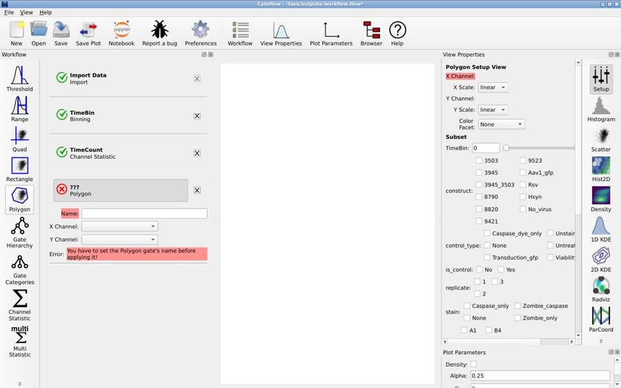
cu click 1276 569; sleep 0.5; cu click 1106 653; sleep 0.5; cu click 1098 845; sleep 0.5; cu click 335 495; cu type "Cells"; cu key Tab; sleep 0.5; /tmp/combo.sh 277 525 1; /tmp/combo.sh 277 555 5; /tmp/ws.sh 90; /tmp/mem.sh
{
"file_path": "/tmp/screen.png"
}idle after 2s cytoflow 2331 MB; cytoflow 544 MB; avail 4663 MB
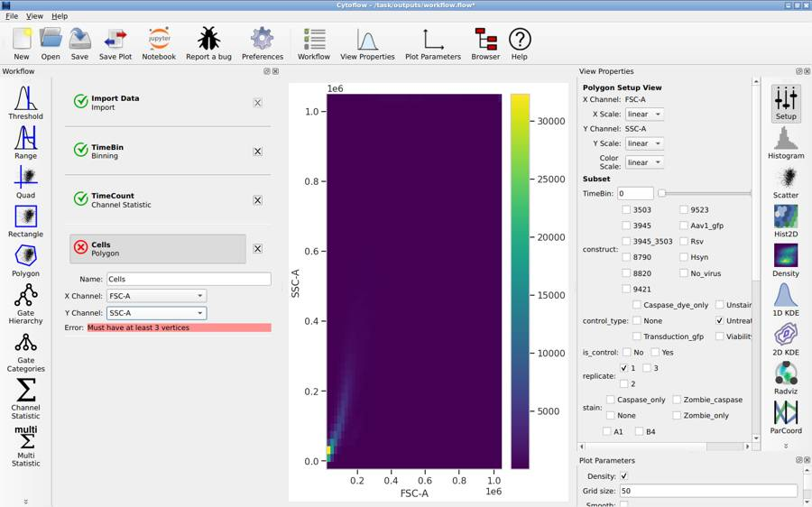
/tmp/combo.sh 1143 202 1; /tmp/combo.sh 1143 254 1; /tmp/combo.sh 1143 288 1; cu click 1255 871; cu key ctrl+a; cu type "120"; cu key Tab; /tmp/ws.sh 90; /tmp/mem.sh
{
"file_path": "/tmp/screen.png"
}idle after 10s cytoflow 2326 MB; cytoflow 544 MB; avail 4655 MB
cu scroll 1050 880 down 5; sleep 1; cu screenshot /tmp/screen.png
{
"file_path": "/tmp/screen.png"
}/tmp/screen.png
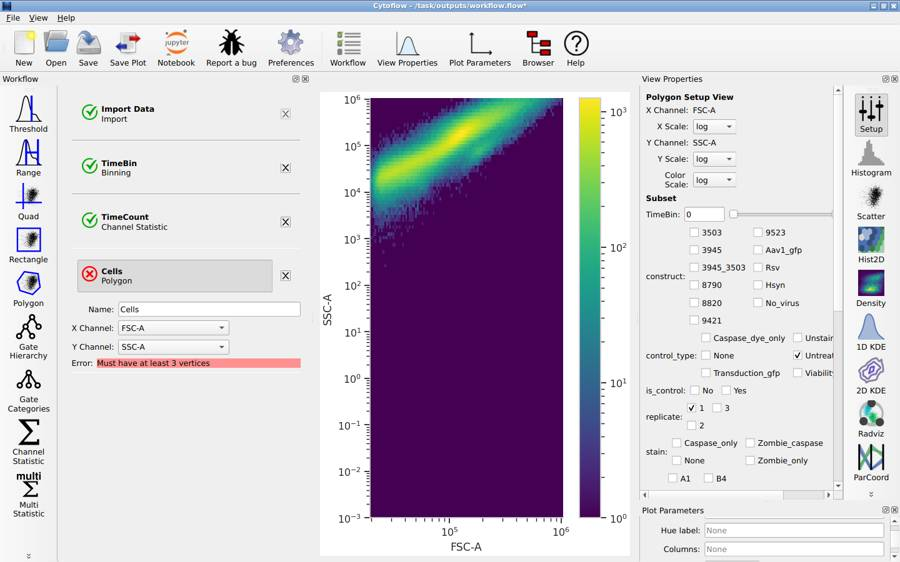
cu drag 1232 804 1232 520; sleep 1; cu screenshot /tmp/screen.png
{
"file_path": "/tmp/screen.png"
}/tmp/screen.png
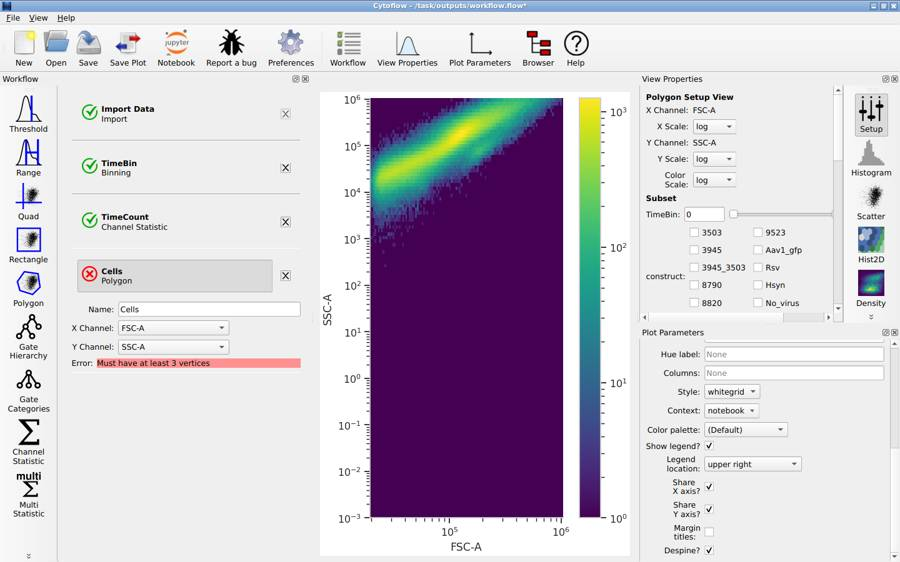
cu scroll 1045 600 up 10; sleep 1; cu screenshot /tmp/s1.png; cu scroll 1045 600 down 3; sleep 1; cu screenshot /tmp/s2.png; python3 -c "
from PIL import Image
a=Image.open('/tmp/s1.png').crop((1020,525,1440,900)); b=Image.open('/tmp/s2.png').crop((1020,525,1440,900))
im=Image.new('RGB',(840,375)); im.paste(a,(0,0)); im.paste(b,(420,0)); im.save('/tmp/pp.png')"{
"file_path": "/tmp/pp.png"
}/tmp/s1.png /tmp/s2.png
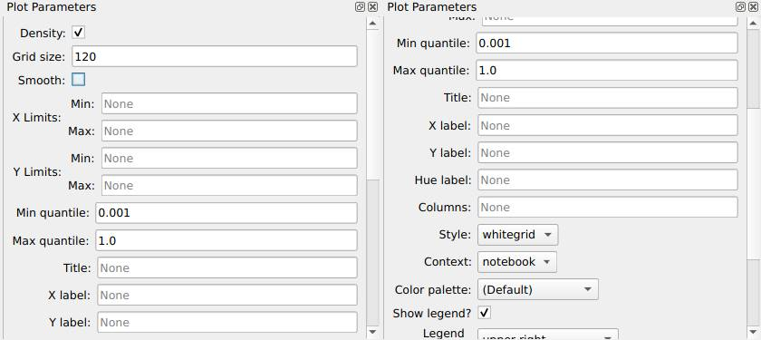
cu scroll 1045 600 up 10; sleep 0.5
setf(){ cu click 1270 $1; cu key ctrl+a; cu type "$2"; cu key Tab; sleep 0.3; }
setf 639 20000; setf 669 1100000; setf 699 1000; setf 729 1100000; /tmp/ws.sh 90{
"file_path": "/tmp/screen.png"
}idle after 10s
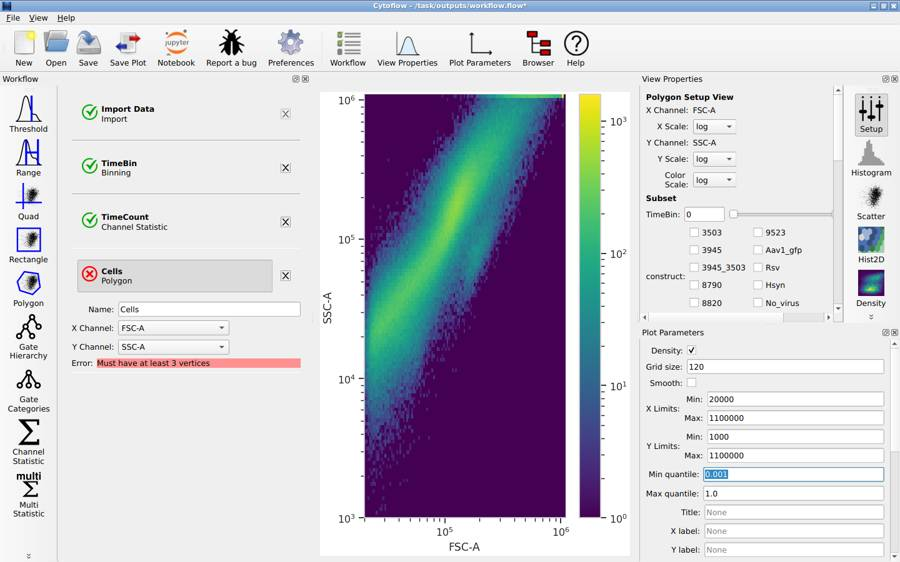
/tmp/combo.sh 1143 202 0; /tmp/combo.sh 1143 254 0
setf(){ cu click 1270 $1; cu key ctrl+a; cu type "$2"; cu key Tab; sleep 0.3; }
setf 639 0; setf 669 400000; setf 699 0; setf 729 700000; /tmp/ws.sh 90{
"file_path": "/tmp/screen.png"
}timeout
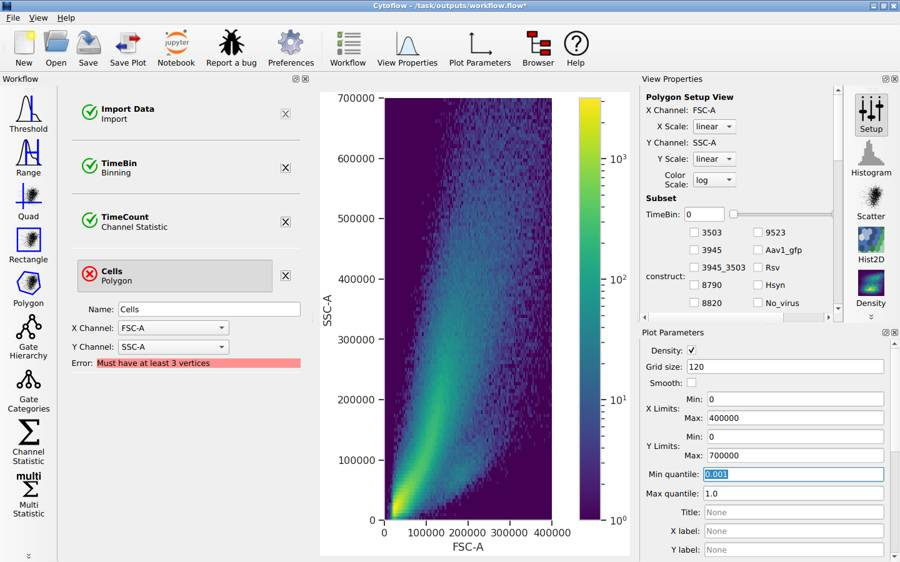
cat > /tmp/busy.py <<'E'
from PIL import Image; import numpy as np, sys
im=np.array(Image.open('/tmp/screen.png').convert('RGB')).astype(int)
c=im[785:892,905:1010]
dark=(c.max(axis=2)<60)
sys.exit(0 if dark.sum()>1500 else 1)
E
/tmp/combo.sh 1143 202 1; /tmp/combo.sh 1143 254 1; /tmp/combo.sh 1143 288 0
setf(){ cu click 1270 $1; cu key ctrl+a; cu type "$2"; cu key Tab; sleep 0.3; }
setf 639 20000; setf 669 1100000; setf 699 3000; setf 729 1100000; /tmp/ws.sh 90{
"file_path": "/tmp/screen.png"
}idle after 16s
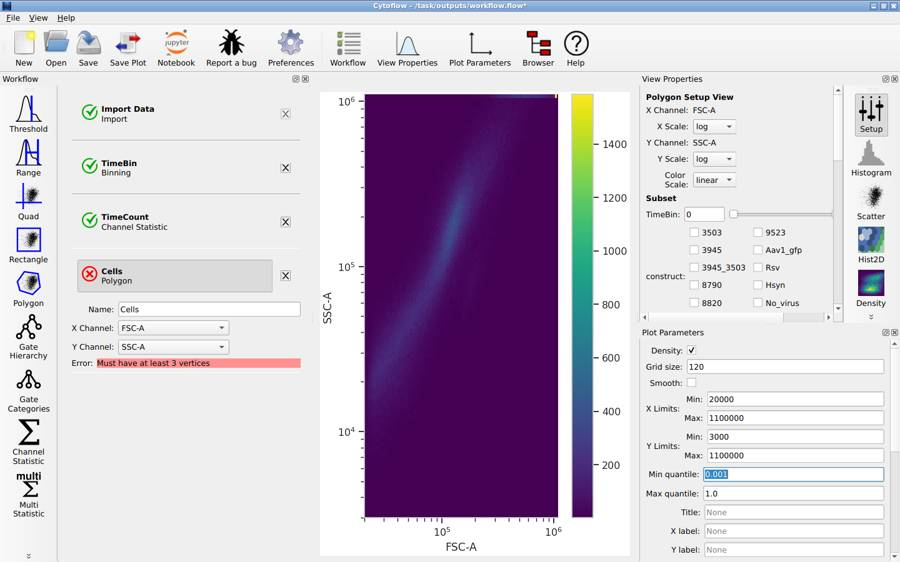
/tmp/combo.sh 1143 288 1; cu click 290 355; sleep 2; cu click 1393 250; sleep 2; cu screenshot /tmp/screen.png
{
"file_path": "/tmp/screen.png"
}/tmp/screen.png
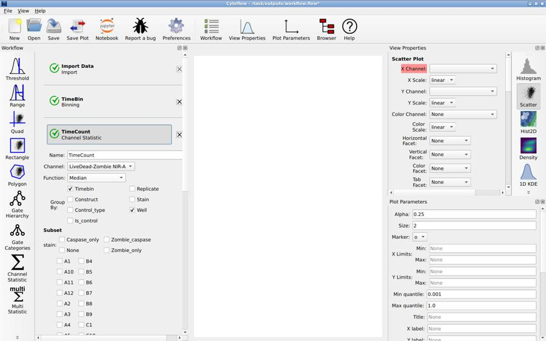
cu click 1393 180; sleep 1; cu drag 1232 520 1232 650; sleep 1; cu screenshot /tmp/screen.png
{
"file_path": "/tmp/screen.png"
}/tmp/screen.png
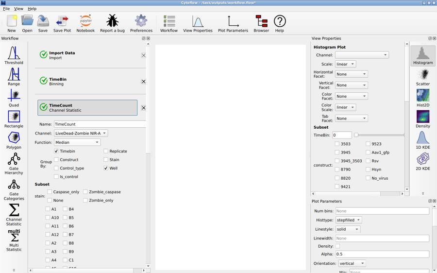
cu scroll 1045 560 down 4; sleep 1; cu screenshot /tmp/screen.png
{
"file_path": "/tmp/screen.png"
}/tmp/screen.png
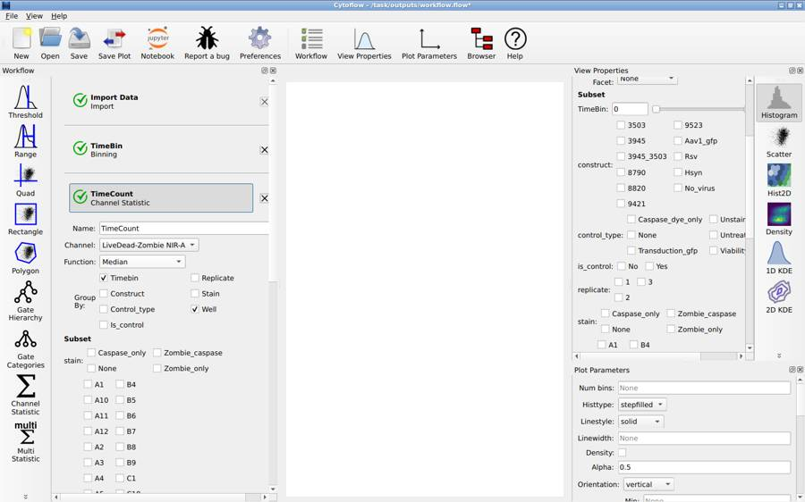
cu click 1276 421; sleep 0.5; cu scroll 1045 400 up 10; sleep 0.5; /tmp/combo.sh 1138 211 1; cu click 1158 317; sleep 1; cu screenshot /tmp/screen.png
{
"file_path": "/tmp/screen.png"
}/tmp/screen.png
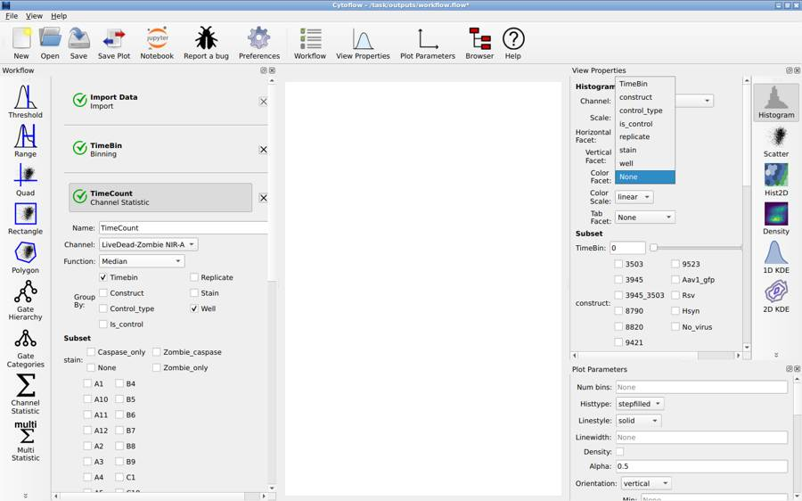
cu click 1125 293; sleep 0.5; /tmp/combo.sh 1192 181 1; /tmp/ws.sh 90
{
"file_path": "/tmp/screen.png"
}idle after 2s
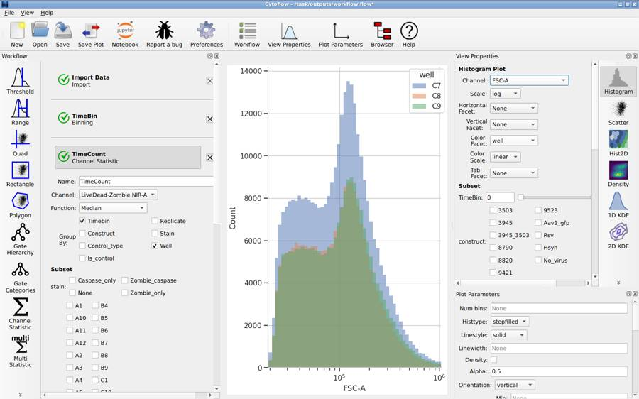
cu scroll 1045 560 down 4; sleep 0.7; cu click 1276 421; sleep 0.3; cu click 1212 280; sleep 0.3; cu click 1110 309; /tmp/ws.sh 90
{
"file_path": "/tmp/screen.png"
}idle after 14s
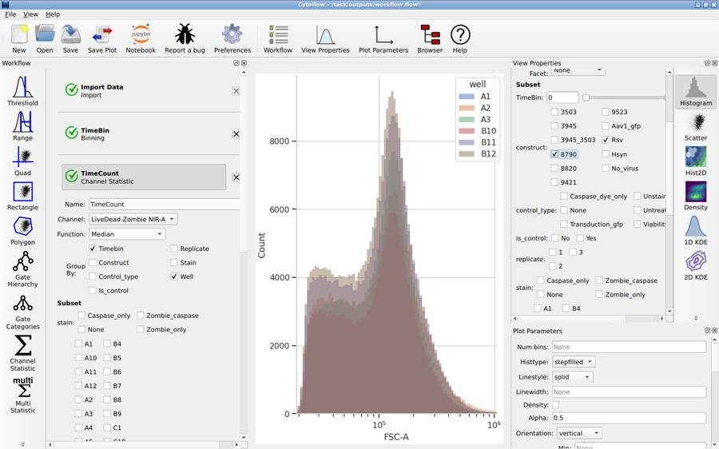
cu click 290 441; /tmp/ws.sh 90
{
"file_path": "/tmp/screen.png"
}idle after 2s
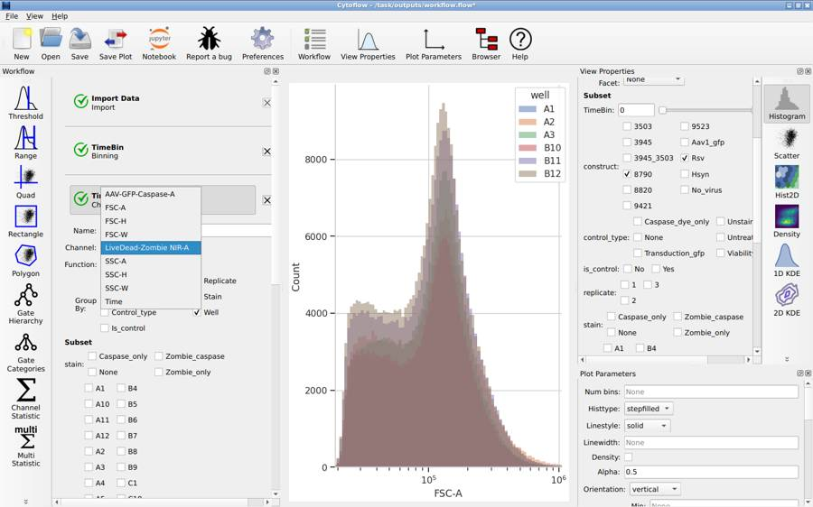
cu key Escape; sleep 0.5; cu scroll 120 620 down 15; sleep 1; cu screenshot /tmp/screen.png
{
"file_path": "/tmp/screen.png"
}/tmp/screen.png
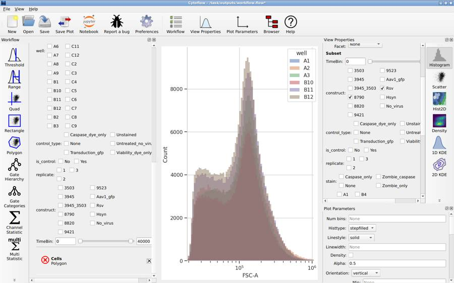
cu click 250 828; /tmp/ws.sh 90
{
"file_path": "/tmp/screen.png"
}idle after 2s
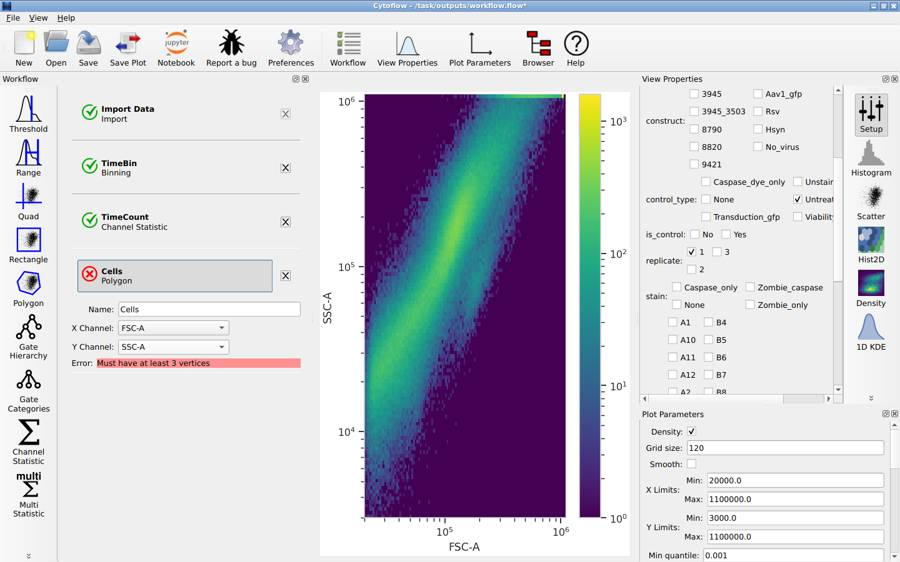
for p in "682 646" "682 220" "767 167" "893 167" "893 380" "800 587"; do cu click $p; sleep 0.8; done; cu click 744 646 double; /tmp/ws.sh 120; /tmp/mem.sh
{
"file_path": "/tmp/screen.png"
}idle after 2s cytoflow 2326 MB; cytoflow 546 MB; avail 4669 MB
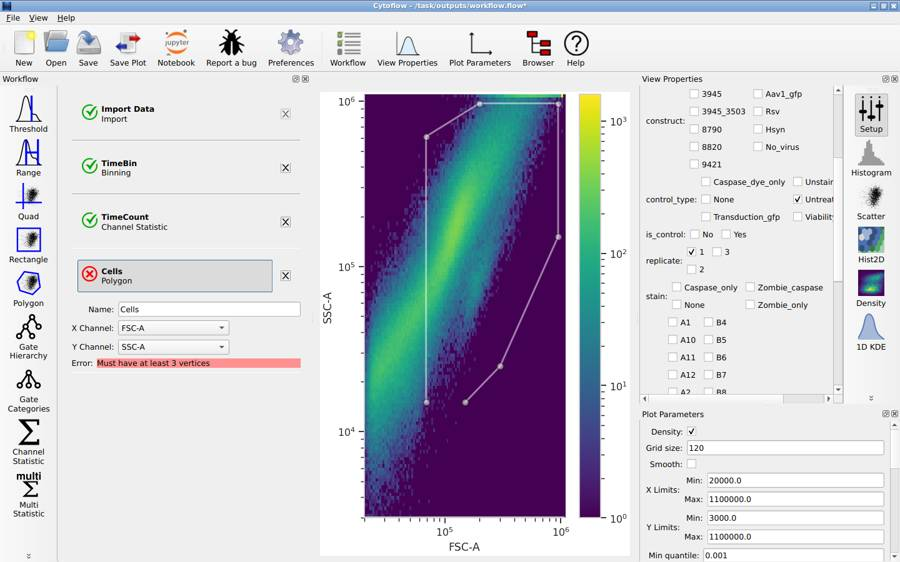
cu click 682 646; /tmp/ws.sh 120; /tmp/mem.sh
{
"file_path": "/tmp/screen.png"
}idle after 6s cytoflow 2346 MB; cytoflow 547 MB; avail 4605 MB
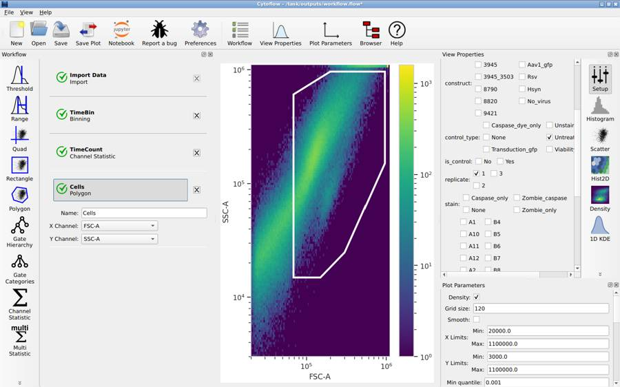
cu key ctrl+s; sleep 2; ls -la /task/outputs/workflow.flow; python3 - <<'E'
import re
t=open('/task/outputs/workflow.flow').read()
i=t.find('!polygon')
print(t[i-200:i+1500])
E-rw-rw-r-- 1 cfapp task 418360 Nov 10 19:36 /task/outputs/workflow.flow
- 19
- 20
- 24
- 33
- 34
- 35
- 25
- 26
- 27
- 28
- 29
- 30
- 31
- 32
current_view: &id009 !polygon-view;3
current_plot: null
huefacet: ''
huescale: log
op: &id007 !polygon;1
name: Cells
vertices:
- !!python/tuple
- 68907.27934310376
- 14891.340602496795
- !!python/tuple
- 68907.27934310376
- 605816.4662332467
- !!python/tuple
- 199950.82577936538
- 961667.8790077703
- !!python/tuple
- 962999.3782047533
- 961667.8790077703
- !!python/tuple
- 962999.3782047533
- 150090.7686038315
- !!python/tuple
- 303020.9839848463
- 24733.90791802822
- !!python/tuple
- 150243.40564467543
- 14891.340602496795
- !!python/tuple
- 150243.40564467543
- 14891.340602496795
xchannel: FSC-A
xscale: log
ychannel: SSC-A
yscale: log
plot_params: !polygon-params;1
alpha: 0.25
col_wrap: null
density: true
despine: true
gridsize: 120
huelabel: ''
legend: true
marker: o
max_quantile: 1.0
min_quantile: 0.001
s: 2
sharex: true
sharey: true
smoothed: false
smoothed_sigma: 1.0
sns_context: notebook
sns_style: whitegrid
title: ''
xlabel: ''
xlim: !!python/tuple
- 20000.0
- 1100000.0
ylabel: ''
ylim: !!python/tuple
- 3000.0
- 1100000.0
subset_list:
- !range-subset;1
high: 41000.0
low: 0.0
name: Tcu click 45 460; sleep 2; cu screenshot /tmp/screen.png
{
"file_path": "/tmp/screen.png"
}/tmp/screen.png
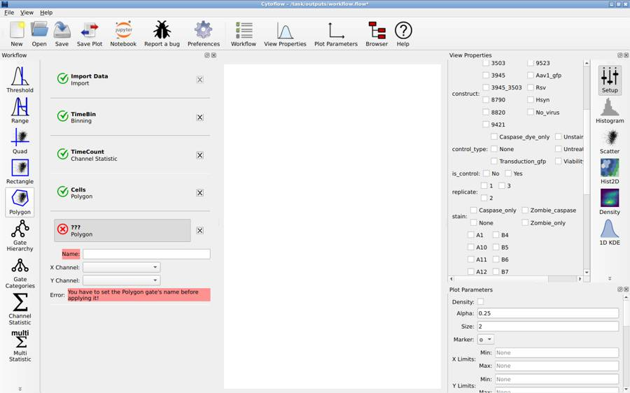
cu scroll 1045 400 up 10; sleep 0.7; cu screenshot /tmp/screen.png
{
"file_path": "/tmp/screen.png"
}/tmp/screen.png
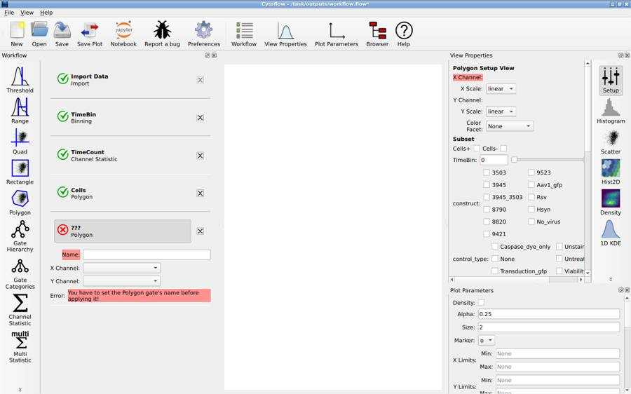
cu click 1088 339; sleep 0.4; cu click 1276 591; sleep 0.4; cu click 1098 691; sleep 0.4; /tmp/combo.sh 1143 202 1; /tmp/combo.sh 1143 254 1; cu click 335 581; cu type "Single_Cells"; cu key Tab; sleep 0.5; /tmp/combo.sh 277 612 6; /tmp/combo.sh 277 642 5; /tmp/ws.sh 120; /tmp/mem.sh
{
"file_path": "/tmp/screen.png"
}idle after 2s cytoflow 2346 MB; cytoflow 550 MB; avail 4663 MB
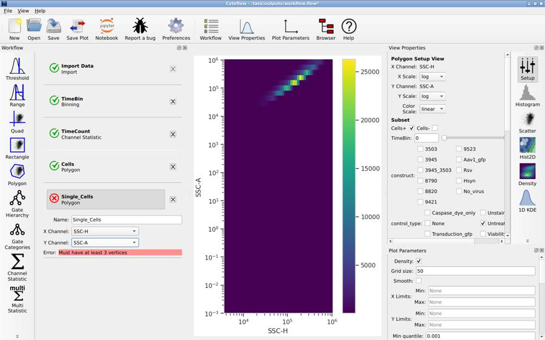
/tmp/combo.sh 1143 288 1; cu click 1255 717; cu key ctrl+a; cu type "150"; cu key Tab
setf(){ cu click 1270 $1; cu key ctrl+a; cu type "$2"; cu key Tab; sleep 0.3; }
setf 769 5000; setf 799 1100000; setf 829 10000; setf 859 1100000; /tmp/ws.sh 120{
"file_path": "/tmp/screen.png"
}idle after 14s
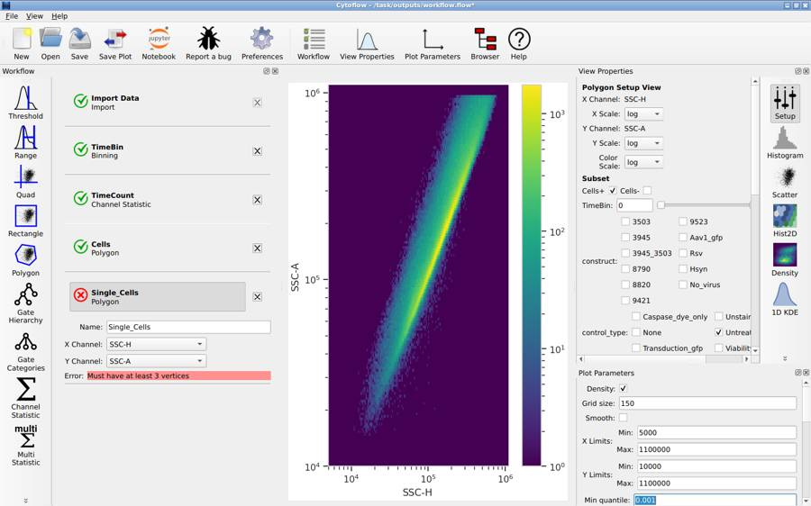
python3 -c "
from PIL import Image
im=Image.open('/tmp/screen.png').crop((640,150,910,840)); im=im.resize((im.width*2,im.height*2),Image.LANCZOS); im.save('/tmp/crop.png')"(Bash completed with no output)
{
"file_path": "/tmp/crop.png"
}for p in "625 790" "659 700" "719 565" "749 495" "784 395" "829 275" "862 165" "899 165" "899 300" "720 800" "660 826"; do cu click $p; sleep 0.8; done; cu click 625 790; /tmp/ws.sh 120; /tmp/mem.sh
{
"file_path": "/tmp/screen.png"
}idle after 6s cytoflow 2318 MB; cytoflow 550 MB; avail 4632 MB
cu key ctrl+s; sleep 2; cu click 1393 460; sleep 2; cu scroll 1045 400 up 10; sleep 0.5; cu screenshot /tmp/screen.png
{
"file_path": "/tmp/screen.png"
}/tmp/screen.png
cu click 1088 465; sleep 0.3; cu click 1132 487; sleep 0.3; cu scroll 1045 400 down 5; sleep 0.7; cu screenshot /tmp/screen.png
{
"file_path": "/tmp/screen.png"
}/tmp/screen.png
cu click 1162 482; sleep 0.3; cu scroll 1045 400 up 10; sleep 0.7; /tmp/combo.sh 1143 211 2; /tmp/combo.sh 1143 271 2; /tmp/combo.sh 1143 377 1; cu click 1162 304; sleep 1; cu screenshot /tmp/screen.png
{
"file_path": "/tmp/screen.png"
}/tmp/screen.png
cu click 1129 281; sleep 0.5; cu scroll 1045 760 down 5; sleep 0.7; cu screenshot /tmp/screen.png
{
"file_path": "/tmp/screen.png"
}/tmp/screen.png
cu click 1270 736; cu type "3"; cu key Tab; sleep 0.3; /tmp/combo.sh 1197 181 0; /tmp/combo.sh 1197 241 4; /tmp/ws.sh 150; /tmp/mem.sh
{
"file_path": "/tmp/screen.png"
}idle after 4s cytoflow 2318 MB; cytoflow 551 MB; avail 4661 MB
/tmp/combo.sh 1162 304 9; /tmp/combo.sh 1162 414 8; /tmp/ws.sh 150; /tmp/mem.sh
{
"file_path": "/tmp/screen.png"
}idle after 6s cytoflow 2318 MB; cytoflow 551 MB; avail 4603 MB
for i in $(seq 1 30); do cu click 998 141; done; sleep 1; cu screenshot /tmp/screen.png; python3 -c "
from PIL import Image
im=Image.open('/tmp/screen.png').crop((505,125,1015,160)); im=im.resize((im.width*2,im.height*2)); im.save('/tmp/crop.png')"{
"file_path": "/tmp/crop.png"
}/tmp/screen.png
cu click 850 141; /tmp/ws.sh 60; cp /tmp/screen.png /tmp/c10.png
{
"file_path": "/tmp/c10.png"
}idle after 2s
cu click 1270 736; cu key ctrl+a; cu key Delete; cu key Tab; /tmp/ws.sh 60; cp /tmp/screen.png /tmp/c10.png
{
"file_path": "/tmp/c10.png"
}idle after 2s
cu scroll 1045 760 up 10; sleep 0.5
setf(){ cu click 1270 $1; cu key ctrl+a; cu type "$2"; cu key Tab; sleep 0.3; }
setf 747 -- -300; cu screenshot /tmp/screen.png{
"file_path": "/tmp/screen.png"
}/tmp/screen.png
setf(){ cu click 1270 $1; cu key ctrl+a; cu type "$2"; cu key Tab; sleep 0.3; }
setf 747 "-300"; setf 777 1100000; setf 807 "-300"; setf 837 1100000; /tmp/ws.sh 60; cp /tmp/screen.png /tmp/c10.png{
"file_path": "/tmp/c10.png"
}idle after 12s
cu click 900 141; /tmp/ws.sh 60; cp /tmp/screen.png /tmp/c11.png; cu click 949 141; /tmp/ws.sh 60; cp /tmp/screen.png /tmp/c12.png; python3 -c "
from PIL import Image
ims=[Image.open(f'/tmp/c{w}.png').crop((505,125,1010,895)) for w in (10,11,12)]
out=Image.new('RGB',(505*3,770))
for i,im in enumerate(ims): out.paste(im,(505*i,0))
out.save('/tmp/ctrl.png')"{
"file_path": "/tmp/ctrl.png"
}idle after 2s idle after 4s
cu click 721 141; /tmp/ws.sh 60; cp /tmp/screen.png /tmp/c7.png; cu click 762 141; /tmp/ws.sh 60; cp /tmp/screen.png /tmp/c8.png; cu click 804 141; /tmp/ws.sh 60; cp /tmp/screen.png /tmp/c9.png; python3 -c "
from PIL import Image
ims=[Image.open(f'/tmp/c{w}.png').crop((505,125,1010,895)) for w in (7,8,9)]
out=Image.new('RGB',(505*3,770))
for i,im in enumerate(ims): out.paste(im,(505*i,0))
out.save('/tmp/ctrl2.png')"{
"file_path": "/tmp/ctrl2.png"
}idle after 4s idle after 4s idle after 2s
cu click 1393 250; sleep 2; cu scroll 1045 400 up 10; sleep 0.5; cu screenshot /tmp/screen.png
{
"file_path": "/tmp/screen.png"
}/tmp/screen.png
cu click 1088 441; sleep 0.3; cu click 1132 463; sleep 0.3; /tmp/combo.sh 1138 211 1; /tmp/combo.sh 1158 317 8; cu click 1150 725; sleep 0.7; cu screenshot /tmp/s1.png; cu key Escape; cu click 1113 811; cu scroll 1045 400 down 5; sleep 0.7; cu screenshot /tmp/screen.png
{
"file_path": "/tmp/screen.png"
}/tmp/s1.png /tmp/screen.png
cu click 1129 374; sleep 0.3; cu click 1276 374; sleep 0.3; cu click 1276 430; sleep 0.3; cu scroll 1045 400 up 10; sleep 0.5; /tmp/combo.sh 1150 725 1; /tmp/combo.sh 1192 181 0; /tmp/ws.sh 60
{
"file_path": "/tmp/screen.png"
}idle after 2s
cu scroll 1045 760 down 3; sleep 0.7; cu screenshot /tmp/screen.png; python3 -c "
from PIL import Image
Image.open('/tmp/screen.png').crop((1020,655,1440,900)).save('/tmp/crop.png')"{
"file_path": "/tmp/crop.png"
}/tmp/screen.png
setf(){ cu click 1270 $1; cu key ctrl+a; cu type "$2"; cu key Tab; sleep 0.3; }
setf 712 30; setf 742 100000; /tmp/ws.sh 60{
"file_path": "/tmp/screen.png"
}idle after 4s
cu scroll 1045 400 down 5; sleep 0.7; cu click 1276 374; sleep 0.3; cu click 1276 430; sleep 0.3; cu click 1276 402; /tmp/ws.sh 60
{
"file_path": "/tmp/screen.png"
}idle after 8s
cu click 1276 374; sleep 0.3; cu click 1276 430; sleep 0.3
setf(){ cu click 1270 $1; cu key ctrl+a; cu type "$2"; cu key Tab; sleep 0.3; }
setf 712 3; setf 742 1000000; cu scroll 1045 400 up 10; sleep 0.5; /tmp/combo.sh 1192 181 4; /tmp/ws.sh 60{
"file_path": "/tmp/screen.png"
}idle after 8s
/tmp/combo.sh 1138 211 0
setf(){ cu click 1270 $1; cu key ctrl+a; cu type "$2"; cu key Tab; sleep 0.3; }
setf 712 "-200"; setf 742 3000; /tmp/ws.sh 60{
"file_path": "/tmp/screen.png"
}idle after 4s
/tmp/combo.sh 1138 211 2
setf(){ cu click 1270 $1; cu key ctrl+a; cu type "$2"; cu key Tab; sleep 0.3; }
setf 712 "-300"; setf 742 1000000; /tmp/ws.sh 60{
"file_path": "/tmp/screen.png"
}idle after 6s
cu scroll 1045 400 down 5; sleep 0.7; cu click 1129 374; sleep 0.3; cu click 1276 374; /tmp/ws.sh 60; python3 -c "
from PIL import Image
im=Image.open('/tmp/screen.png').crop((510,145,1010,895)); im=im.resize((1000,1500)); im.save('/tmp/crop.png')"{
"file_path": "/tmp/crop.png"
}idle after 6s
cu click 45 390; sleep 2; cu scroll 1045 400 up 10; sleep 0.5; cu screenshot /tmp/screen.png
{
"file_path": "/tmp/screen.png"
}/tmp/screen.png
cu drag 1066 637 1000 637; sleep 0.7; cu screenshot /tmp/screen.png
{
"file_path": "/tmp/screen.png"
}/tmp/screen.png
cu click 1088 339; sleep 0.3; cu click 1132 361; sleep 0.3; cu click 1276 613; sleep 0.3; cu click 1098 691; sleep 0.3; /tmp/combo.sh 1143 202 2; /tmp/combo.sh 1143 254 2
cu click 327 668; cu type "Live"; cu key Tab; sleep 0.4; /tmp/combo.sh 277 698 0; /tmp/combo.sh 277 788 4; sleep 1
setw(){ cu click 327 $1; cu key ctrl+a; cu type "$2"; cu key Tab; sleep 0.4; }
setw 728 "-100000"; setw 758 1100000; setw 819 "-100000"; setw 849 700; /tmp/ws.sh 120; /tmp/mem.sh{
"file_path": "/tmp/screen.png"
}Command did not complete within its 120s timeout and was moved to the background (ID: bn1jn07i0). Output is being written to: /tmp/claude-0/-task/e4359a2e-c49a-49a5-9e85-96b2f2625899/tasks/bn1jn07i0.output. You will be notified when it completes. If it is still running after 10m in the background, it will be stopped and you will be notified. It is running now: do not start a second copy while it runs. If it is no longer needed, stop it with TaskStop. No output had been read from it when it was moved. A program that buffers its output, or a pipe into one such as tail, can keep the output file empty until the command finishes. To check interim output, use Read on that file path.

thinking
Cytoflow's worker ran out of memory again while plotting the Live rectangle in logicle with a huge negative bound, though both scatter gates were already saved. I'm restarting Cytoflow and reloading now.
pkill -f ws.sh; dmesg | grep -i "killed process" | tail -3; cu click 915 461; sleep 1; cu click 20 28; sleep 1; cu click 46 195; sleep 3; export DISPLAY=:1; until xdotool search --name "Cytoflow" >/dev/null 2>&1; do sleep 1; done; sleep 5; cu click 700 9 double; sleep 2; cu key ctrl+o; sleep 2; cu click 706 576; cu paste "/task/outputs/workflow.flow"; sleep 1; cu key Return; sleep 3; cu screenshot /tmp/screen.png
Exit code 144
{
"file_path": "/tmp/screen.png"
}dmesg | grep -i "killed process" | tail -2 | cut -c1-200; cu click 915 461; sleep 1; cu click 20 28; sleep 1; cu click 46 195; sleep 3; export DISPLAY=:1; until xdotool search --name "Cytoflow" >/dev/null 2>&1; do sleep 1; done; sleep 5; cu click 700 9 double; sleep 2; cu key ctrl+o; sleep 2; cu click 706 576; cu paste "/task/outputs/workflow.flow"; sleep 1; cu key Return; sleep 3; cu screenshot /tmp/screen.png
{
"file_path": "/tmp/screen.png"
}[ 194.063651] Out of memory: Killed process 861 (cytoflow) total-vm:8902168kB, anon-rss:7287024kB, file-rss:8kB, shmem-rss:28kB, UID:1002 pgtables:14920kB oom_score_adj:0 [ 2065.237543] Out of memory: Killed process 1671 (cytoflow) total-vm:9039008kB, anon-rss:7229780kB, file-rss:16kB, shmem-rss:28kB, UID:1002 pgtables:14860kB oom_score_adj:0 /tmp/screen.png
cu click 738 427; for i in 1 2 3 4 5 6 7 8; do sleep 5; /tmp/mem.sh; done; cu click 408 713; sleep 1; cu click 408 784; sleep 1; cu drag 420 510 500 510; sleep 1; cu drag 1232 804 1232 650; sleep 1; cu screenshot /tmp/screen.png
{
"file_path": "/tmp/screen.png"
}cytoflow 2192 MB; cytoflow 525 MB; avail 4714 MB cytoflow 2194 MB; cytoflow 527 MB; avail 4749 MB cytoflow 2194 MB; cytoflow 527 MB; avail 4785 MB cytoflow 5256 MB; cytoflow 527 MB; avail 1761 MB cytoflow 2239 MB; cytoflow 527 MB; avail 4766 MB cytoflow 2240 MB; cytoflow 528 MB; avail 4787 MB cytoflow 2240 MB; cytoflow 528 MB; avail 4807 MB cytoflow 2240 MB; cytoflow 528 MB; avail 4809 MB /tmp/screen.png

cu click 290 528; sleep 2; cu click 45 390; sleep 2; cu screenshot /tmp/screen.png
{
"file_path": "/tmp/screen.png"
}/tmp/screen.png
/tmp/ws.sh 60; cu click 1088 339; sleep 0.3; cu click 1132 361; sleep 0.3; cu click 1276 585; sleep 0.3; cu click 1098 691; sleep 0.5; cu screenshot /tmp/screen.png
{
"file_path": "/tmp/screen.png"
}idle after 2s /tmp/screen.png
cu click 327 668; cu type "Live"; cu key Tab; sleep 0.4; /tmp/combo.sh 277 698 0; /tmp/combo.sh 277 788 4; sleep 2; /tmp/mem.sh
setw(){ cu click 327 $1; cu key ctrl+a; cu type "$2"; cu key Tab; sleep 1; /tmp/mem.sh; }
setw 728 "-100000"; setw 758 1100000; setw 819 "-100000"; setw 849 700; for i in 1 2 3 4 5 6; do sleep 3; /tmp/mem.sh; done; /tmp/ws.sh 60{
"file_path": "/tmp/screen.png"
}cytoflow 363 MB; cytoflow 21 MB; avail 4751 MB cytoflow 382 MB; cytoflow 21 MB; avail 6948 MB cytoflow 382 MB; cytoflow 21 MB; avail 6948 MB cytoflow 382 MB; cytoflow 21 MB; avail 6947 MB cytoflow 382 MB; cytoflow 21 MB; avail 6946 MB cytoflow 382 MB; cytoflow 21 MB; avail 6943 MB cytoflow 382 MB; cytoflow 21 MB; avail 6943 MB cytoflow 382 MB; cytoflow 21 MB; avail 6943 MB cytoflow 382 MB; cytoflow 21 MB; avail 6943 MB cytoflow 382 MB; cytoflow 21 MB; avail 6943 MB cytoflow 382 MB; cytoflow 21 MB; avail 6943 MB timeout
thinking
The third worker crashed again while the 2D-range density plot was drawing, so I'm restarting and switching Live and Caspase_pos to 1-D range gates.
date; cu click 915 461; sleep 1; cu click 20 28; sleep 1; cu click 46 195; sleep 3; export DISPLAY=:1; until xdotool search --name "Cytoflow" >/dev/null 2>&1; do sleep 1; done; sleep 5; cu click 700 9 double; sleep 2; cu key ctrl+o; sleep 2; cu click 706 576; cu paste "/task/outputs/workflow.flow"; sleep 1; cu key Return; sleep 3; cu click 738 427; for i in 1 2 3 4 5 6 7; do sleep 5; /tmp/mem.sh; done; cu click 408 713; sleep 1; cu click 408 784; sleep 1; cu drag 420 510 500 510; sleep 1; cu drag 1232 804 1232 650; sleep 1; cu screenshot /tmp/screen.png
{
"file_path": "/tmp/screen.png"
}Tue Nov 10 19:53:59 UTC 2026 cytoflow 2192 MB; cytoflow 526 MB; avail 4729 MB cytoflow 2193 MB; cytoflow 527 MB; avail 4746 MB cytoflow 2216 MB; cytoflow 527 MB; avail 4764 MB cytoflow 2252 MB; cytoflow 527 MB; avail 4693 MB cytoflow 2239 MB; cytoflow 528 MB; avail 4763 MB cytoflow 2239 MB; cytoflow 528 MB; avail 4792 MB cytoflow 2239 MB; cytoflow 528 MB; avail 4793 MB /tmp/screen.png
cu click 290 528; sleep 1; /tmp/ws.sh 60; cu click 45 250; sleep 2; /tmp/ws.sh 30; /tmp/mem.sh
{
"file_path": "/tmp/screen.png"
}idle after 4s idle after 2s cytoflow 2240 MB; cytoflow 535 MB; avail 4694 MB
cu click 1088 287; sleep 0.3; cu click 1132 309; sleep 0.3; cu click 1276 589; sleep 0.3
cu click 327 668; cu type "Live"; cu key Tab; sleep 0.4; /tmp/combo.sh 265 698 4; sleep 3; /tmp/mem.sh
setw(){ cu click 327 $1; cu key ctrl+a; cu type "$2"; cu key Tab; sleep 2; /tmp/mem.sh; }
setw 728 "-100000"; setw 758 700; for i in 1 2 3 4; do sleep 3; /tmp/mem.sh; done; /tmp/ws.sh 60{
"file_path": "/tmp/screen.png"
}cytoflow 2240 MB; cytoflow 535 MB; avail 4753 MB cytoflow 2240 MB; cytoflow 535 MB; avail 4762 MB cytoflow 2240 MB; cytoflow 535 MB; avail 4770 MB cytoflow 2240 MB; cytoflow 536 MB; avail 4777 MB cytoflow 2241 MB; cytoflow 536 MB; avail 4751 MB cytoflow 2241 MB; cytoflow 536 MB; avail 4763 MB cytoflow 2241 MB; cytoflow 536 MB; avail 4771 MB idle after 2s
cu key ctrl+s; sleep 2; cu click 1393 250; sleep 2; cu screenshot /tmp/screen.png
{
"file_path": "/tmp/screen.png"
}/tmp/screen.png
cu click 1088 441; sleep 0.3; cu click 1083 463; sleep 0.3; cu click 1132 485; sleep 0.3; /tmp/combo.sh 1138 211 1; /tmp/combo.sh 1158 317 9; /tmp/combo.sh 1150 725 1; cu click 1113 811; sleep 0.3; cu scroll 1045 400 down 5; sleep 0.7; cu screenshot /tmp/screen.png
{
"file_path": "/tmp/screen.png"
}/tmp/screen.png
cu click 1129 396; sleep 0.3; cu click 1276 396; sleep 0.3; cu click 1276 424; sleep 0.3; cu click 1276 452; sleep 0.3; cu scroll 1045 760 down 3; sleep 0.7
setf(){ cu click 1270 $1; cu key ctrl+a; cu type "$2"; cu key Tab; sleep 0.3; }
setf 712 30; setf 742 100000; cu scroll 1045 400 up 10; sleep 0.5; /tmp/combo.sh 1192 181 0; /tmp/ws.sh 60; /tmp/mem.sh; python3 -c "
from PIL import Image
im=Image.open('/tmp/screen.png').crop((510,145,1010,895)); im=im.resize((1000,1500)); im.save('/tmp/crop.png')"{
"file_path": "/tmp/crop.png"
}idle after 2s cytoflow 2244 MB; cytoflow 539 MB; avail 4722 MB
thinking
BL1-A in the live-gated stained wells splits cleanly into two groups (about 100 and 900), while the Zombie-only well's live cells stay near 90. I'm checking that this valley holds across the other sample wells before I move the caspase boundary.
cu scroll 1045 400 down 5; sleep 0.7; cu click 1129 396; sleep 0.3; cu click 1276 396; sleep 0.3; cu click 1276 424; sleep 0.3; cu click 1276 452; sleep 0.3; cu click 1111 480; sleep 0.3; cu scroll 1045 400 up 10; sleep 0.5; /tmp/combo.sh 1158 317 3; /tmp/ws.sh 90; /tmp/mem.sh; python3 -c "
from PIL import Image
im=Image.open('/tmp/screen.png').crop((510,145,1010,895)); im=im.resize((1000,1500)); im.save('/tmp/crop.png')"{
"file_path": "/tmp/crop.png"
}idle after 8s cytoflow 2244 MB; cytoflow 539 MB; avail 4716 MB
date; cu scroll 1045 400 down 5; sleep 0.7; cu click 1111 480; sleep 0.3; cu click 1162 480; sleep 0.3; cu click 1083 150; sleep 0.3; cu click 1141 150; sleep 0.3; cu scroll 1045 400 up 10; sleep 0.5; /tmp/combo.sh 1158 317 9; /tmp/ws.sh 90; /tmp/mem.sh; python3 -c "
from PIL import Image
im=Image.open('/tmp/screen.png').crop((510,145,1010,895)); im=im.resize((1000,1500)); im.save('/tmp/crop.png')"{
"file_path": "/tmp/crop.png"
}Tue Nov 10 19:59:37 UTC 2026 idle after 4s cytoflow 2250 MB; cytoflow 539 MB; avail 4742 MB
thinking
Zombie-bright cells read about 230 without CellEvent and about 950 with it, while live cells valley near 250–300, so I'm setting the caspase boundary at 400 and adding the Caspase_pos range gate next.
cu click 45 250; sleep 2; /tmp/ws.sh 30; /tmp/mem.sh
{
"file_path": "/tmp/screen.png"
}idle after 2s cytoflow 2250 MB; cytoflow 539 MB; avail 4719 MB
cu click 1088 287; sleep 0.3; cu click 1083 309; sleep 0.3; cu click 1132 330; sleep 0.3; cu click 1129 554; sleep 0.3; /tmp/combo.sh 1130 202 1
cu click 327 754; cu type "Caspase_pos"; cu key Tab; sleep 0.4; /tmp/combo.sh 265 785 0; sleep 3; /tmp/mem.sh
setw(){ cu click 327 $1; cu key ctrl+a; cu type "$2"; cu key Tab; sleep 2; /tmp/mem.sh; }
setw 815 400; setw 845 2000000; /tmp/ws.sh 60; /tmp/mem.sh{
"file_path": "/tmp/screen.png"
}cytoflow 2252 MB; cytoflow 539 MB; avail 4743 MB cytoflow 2252 MB; cytoflow 539 MB; avail 4749 MB cytoflow 2251 MB; cytoflow 539 MB; avail 4757 MB idle after 4s cytoflow 2252 MB; cytoflow 539 MB; avail 4724 MB
cu key ctrl+s; sleep 2; cu click 45 460; sleep 2; /tmp/ws.sh 30; cu screenshot /tmp/screen.png
{
"file_path": "/tmp/screen.png"
}idle after 2s /tmp/screen.png
cu click 1088 361; sleep 0.3; cu click 1132 404; sleep 0.3; /tmp/combo.sh 1143 202 2; /tmp/combo.sh 1143 254 2; cu click 1098 691; sleep 0.5; cu scroll 1045 400 down 3; sleep 0.7; cu screenshot /tmp/screen.png
{
"file_path": "/tmp/screen.png"
}/tmp/screen.png
cu click 1276 469; sleep 0.3; cu click 1106 553; sleep 0.3
setf(){ cu click 1270 $1; cu key ctrl+a; cu type "$2"; cu key Tab; sleep 0.3; }
setf 717 100; setf 769 "-300"; setf 799 2000000; setf 829 "-300"; setf 859 2000000
cu scroll 290 600 down 10; sleep 1; cu screenshot /tmp/screen.png{
"file_path": "/tmp/screen.png"
}/tmp/screen.png
cu click 327 771; cu type "Late_apoptosis"; cu key Tab; sleep 0.4; /tmp/combo.sh 277 801 0; sleep 1; /tmp/combo.sh 277 831 4; for i in 1 2 3 4; do sleep 2; /tmp/mem.sh; done; /tmp/ws.sh 60; /tmp/mem.sh
{
"file_path": "/tmp/screen.png"
}cytoflow 2252 MB; cytoflow 542 MB; avail 4765 MB cytoflow 2252 MB; cytoflow 542 MB; avail 4764 MB cytoflow 2252 MB; cytoflow 542 MB; avail 4764 MB cytoflow 2252 MB; cytoflow 542 MB; avail 4764 MB idle after 2s cytoflow 2252 MB; cytoflow 542 MB; avail 4722 MB
/tmp/combo.sh 277 816 0; sleep 1; /tmp/combo.sh 277 846 4; for i in 1 2 3; do sleep 2; /tmp/mem.sh; done; /tmp/ws.sh 60; /tmp/mem.sh
{
"file_path": "/tmp/screen.png"
}cytoflow 2252 MB; cytoflow 542 MB; avail 4746 MB cytoflow 2252 MB; cytoflow 542 MB; avail 4736 MB cytoflow 2252 MB; cytoflow 542 MB; avail 4742 MB idle after 2s cytoflow 2252 MB; cytoflow 542 MB; avail 4694 MB
for p in "654 736" "654 157" "896 157" "896 736"; do cu click $p; sleep 0.8; done; cu click 654 736; /tmp/ws.sh 90; /tmp/mem.sh; cu key ctrl+s; sleep 2; python3 - <<'E'
t=open('/task/outputs/workflow.flow').read()
i=t.find('name: Late_apoptosis'); print(t[i:i+700])
E{
"file_path": "/tmp/screen.png"
}idle after 14s
cytoflow 2254 MB; cytoflow 542 MB; avail 4687 MB
name: Late_apoptosis
vertices:
- !!python/tuple
- 342.3064178347108
- 607.6926410215527
- !!python/tuple
- 342.3064178347108
- 1024367.515032546
- !!python/tuple
- 1030338.145114675
- 1024367.515032546
- !!python/tuple
- 1030338.145114675
- 607.6926410215527
xchannel: AAV-GFP-Caspase-A
xscale: logicle
ychannel: LiveDead-Zombie NIR-A
yscale: logicle
plot_params: !polygon-params;1
alpha: 0.25
col_wrap: null
density: true
despine: true
gridsize: 100
huelabel: ''
legend: true
marker: o
max_quantile: 1.0
min_quantile:for p in "659 727" "659 155" "897 155" "897 727"; do cu click $p; sleep 0.8; done; cu click 659 727; /tmp/ws.sh 90; /tmp/mem.sh; cu key ctrl+s; sleep 2; python3 - <<'E'
t=open('/task/outputs/workflow.flow').read()
i=t.find('name: Late_apoptosis'); print(t[i:i+420])
E{
"file_path": "/tmp/screen.png"
}idle after 2s
cytoflow 2254 MB; cytoflow 545 MB; avail 4700 MB
name: Late_apoptosis
vertices:
- !!python/tuple
- 342.3064178347108
- 607.6926410215527
- !!python/tuple
- 342.3064178347108
- 1024367.515032546
- !!python/tuple
- 1030338.145114675
- 1024367.515032546
- !!python/tuple
- 1030338.145114675
- 607.6926410215527
xchannel: AAV-GFP-Caspase-A
xscale: logicle
ychancu click 659 155; sleep 1.5; cu click 897 155; sleep 1.5; cu click 897 727; sleep 1.5; cu screenshot /tmp/screen.png
{
"file_path": "/tmp/screen.png"
}/tmp/screen.png
/tmp/ws.sh 60; cu click 659 156; sleep 1.5; cu click 896 156; sleep 1.5; cu click 896 727; sleep 1.5; cu screenshot /tmp/screen.png
{
"file_path": "/tmp/screen.png"
}idle after 2s /tmp/screen.png
cu click 659 727; sleep 1.5; cu click 659 156; /tmp/ws.sh 90; cu key ctrl+s; sleep 2; python3 - <<'E'
t=open('/task/outputs/workflow.flow').read()
i=t.find('name: Late_apoptosis'); print(t[i:i+420])
E{
"file_path": "/tmp/screen.png"
}idle after 14s
name: Late_apoptosis
vertices:
- !!python/tuple
- 415.57821186020783
- 1038908.9399192075
- !!python/tuple
- 1030339.4641959979
- 1038908.9399192075
- !!python/tuple
- 1030339.4641959979
- 710.7560563935109
- !!python/tuple
- 415.57821186020783
- 710.7560563935109
xchannel: AAV-GFP-Caspase-A
xscale: logicledate; cu click 45 705; sleep 2; /tmp/ws.sh 30; cu scroll 290 600 down 15; sleep 1; cu screenshot /tmp/screen.png
{
"file_path": "/tmp/screen.png"
}Tue Nov 10 20:05:15 UTC 2026 idle after 2s /tmp/screen.png
cu click 327 581; cu type "GateCounts"; cu key Tab; sleep 0.5; cu click 253 642; sleep 1; cu screenshot /tmp/screen.png
{
"file_path": "/tmp/screen.png"
}/tmp/screen.png
cu click 205 577; sleep 0.7; for p in "185 671" "185 699" "185 727" "185 755" "185 783" "349 811"; do cu click $p; sleep 0.5; done; /tmp/ws.sh 90; /tmp/mem.sh
{
"file_path": "/tmp/screen.png"
}idle after 8s cytoflow 2261 MB; cytoflow 546 MB; avail 4556 MB
cu key ctrl+s; sleep 1; cu click 1393 637; sleep 1; cu screenshot /tmp/screen.png
{
"file_path": "/tmp/screen.png"
}/tmp/screen.png
cu click 1405 400; sleep 2; cu screenshot /tmp/screen.png
{
"file_path": "/tmp/screen.png"
}/tmp/screen.png
cu click 1146 181; sleep 1; cu screenshot /tmp/screen.png; python3 -c "
from PIL import Image
Image.open('/tmp/screen.png').crop((1020,120,1440,330)).save('/tmp/crop.png')"{
"file_path": "/tmp/crop.png"
}/tmp/screen.png
cu click 1125 207; /tmp/ws.sh 60; cu screenshot /tmp/screen.png
{
"file_path": "/tmp/screen.png"
}idle after 2s /tmp/screen.png
cu click 1146 211; sleep 2; cu screenshot /tmp/screen.png
{
"file_path": "/tmp/screen.png"
}/tmp/screen.png
cu click 706 567; cu paste "/task/outputs/work/gatecounts.csv"; sleep 0.5; cu key Return; sleep 3; ls -la /task/outputs/work/; head -5 /task/outputs/work/gatecounts.csv; wc -l /task/outputs/work/gatecounts.csv cat > /tmp/export.sh <<'E' #!/bin/bash rm -f "$1" cu click 1146 211; sleep 2; cu click 706 567; cu paste "$1"; sleep 0.5; cu key Return; sleep 2 ls -la "$1" E
total 284 drwxrwsrwx 2 root task 4096 Nov 10 20:06 . drwxrwsrwx 3 agent task 4096 Nov 10 19:15 .. -rw-rw-r-- 1 cfapp task 14496 Nov 10 20:06 gatecounts.csv -rw-rw-r-- 1 cfapp task 43599 Nov 10 19:27 tb_median_BL1-A.csv -rw-rw-r-- 1 cfapp task 51493 Nov 10 19:26 tb_median_FSC-A.csv -rw-rw-r-- 1 cfapp task 47933 Nov 10 19:27 tb_median_RL3-A.csv -rw-rw-r-- 1 cfapp task 52047 Nov 10 19:26 tb_median_SSC-A.csv -rw-rw-r-- 1 cfapp task 12570 Nov 10 19:24 timecount.csv -rw-rw-r-- 1 cfapp task 46436 Nov 10 19:25 timecount_500ms.csv Caspase_pos,Cells,Late_apoptosis,Live,Single_Cells,well,Time 0,0,0,0,0,A1,2668.0 0,0,0,0,0,A10,5494.0 0,0,0,0,0,A11,3487.0 0,0,0,0,0,A12,5946.0 718 /task/outputs/work/gatecounts.csv
cd /task/outputs/work; cat > /tmp/tab.py <<'E'
import pandas as pd, numpy as np, re, glob
key=lambda w:(w[0],int(w[1:]))
g=pd.read_csv('/task/outputs/work/gatecounts.csv'); g=g.rename(columns={g.columns[-1]:'n'})
for c in ['Caspase_pos','Cells','Late_apoptosis','Live','Single_Cells']: g[c]=g[c].astype(str).isin(['1','True','1.0'])
wells=sorted(g.well.unique(),key=key)
rows=[]
for w in wells:
d=g[g.well==w]
tot=d.n.sum(); cells=d[d.Cells].n.sum(); sc=d[d.Cells&d.Single_Cells].n.sum()
live=d[d.Cells&d.Single_Cells&d.Live].n.sum(); cp=d[d.Cells&d.Single_Cells&d.Live&d.Caspase_pos].n.sum()
la=d[d.Cells&d.Single_Cells&d.Late_apoptosis].n.sum()
rows.append(dict(well=w,All=int(tot),Cells=int(cells),Single_Cells=int(sc),Live=int(live),Caspase_pos=int(cp),Late_apoptosis=int(la)))
t=pd.DataFrame(rows).set_index('well')
E
python3 - <<'E'
exec(open('/tmp/tab.py').read())
import re
tot={}
for fn in glob.glob('/task/inputs/raw/*.fcs'):
f=open(fn,'rb'); h=f.read(58).decode(); ts,te=int(h[10:18]),int(h[18:26]); f.seek(ts); x=f.read(te-ts+1).decode('latin1'); p=x[1:].split(x[0]); kv=dict(zip(p[0::2],p[1::2]))
tot[re.search(r'_([ABC]\d+)\.fcs',fn).group(1)]=int(kv['$TOT'])
t['TOT_hdr']=pd.Series(tot)
t['%Cells']=(100*t.Cells/t.All).round(1); t['%Sing']=(100*t.Single_Cells/t.Cells).round(1); t['%Live']=(100*t.Live/t.Single_Cells).round(1); t['%Casp']=(100*t.Caspase_pos/t.Live).round(1); t['%Late']=(100*t.Late_apoptosis/t.Single_Cells).round(1)
pd.set_option('display.width',250)
print(t.to_string()); print((t.All==t.TOT_hdr).all())
EAll Cells Single_Cells Live Caspase_pos Late_apoptosis TOT_hdr %Cells %Sing %Live %Casp %Late well A1 183353 115844 95228 1029 447 82135 183353 63.2 82.2 1.1 43.4 86.3 A2 221770 139179 108460 3928 1103 91292 221770 62.8 77.9 3.6 28.1 84.2 A3 222545 146000 119165 4343 2489 103280 222545 65.6 81.6 3.6 57.3 86.7 A4 160440 107046 88363 2436 893 76604 160440 66.7 82.5 2.8 36.7 86.7 A5 169911 108810 91098 4800 2372 77355 169911 64.0 83.7 5.3 49.4 84.9 A6 230857 152102 123528 7842 2278 104686 230857 65.9 81.2 6.3 29.0 84.7 A7 282723 177427 135588 7679 1948 113172 282723 62.8 76.4 5.7 25.4 83.5 A8 236938 152143 119741 11008 3861 97985 236938 64.2 78.7 9.2 35.1 81.8 A9 241833 158482 127931 6362 1853 108820 241833 65.5 80.7 5.0 29.1 85.1 A10 335810 213879 167427 5440 1388 144667 335810 63.7 78.3 3.2 25.5 86.4 A11 228556 139544 113630 6889 2703 96122 228556 61.1 81.4 6.1 39.2 84.6 A12 330844 204145 160277 7446 2670 137295 330844 61.7 78.5 4.6 35.9 85.7 B1 254845 157713 123583 9607 2970 100608 254845 61.9 78.4 7.8 30.9 81.4 B2 319449 195354 148097 17575 8600 118266 319449 61.2 75.8 11.9 48.9 79.9 B3 275473 174983 135564 13419 5439 111261 275473 63.5 77.5 9.9 40.5 82.1 B4 219859 135191 109575 3637 1353 92796 219859 61.5 81.1 3.3 37.2 84.7 B5 225148 137704 112790 6009 2343 94787 225148 61.2 81.9 5.3 39.0 84.0 B6 369018 227011 174396 11645 5955 148382 369018 61.5 76.8 6.7 51.1 85.1 B7 186946 118965 98835 2979 1226 86528 186946 63.6 83.1 3.0 41.2 87.5 B8 412353 259094 198108 8517 4803 172016 412353 62.8 76.5 4.3 56.4 86.8 B9 219409 138251 112338 3967 1687 96993 219409 63.0 81.3 3.5 42.5 86.3 B10 187472 116301 97521 2713 981 83779 187472 62.0 83.9 2.8 36.2 85.9 B11 271438 174066 141861 6539 3456 122931 271438 64.1 81.5 4.6 52.9 86.7 B12 286933 183015 149446 6646 3942 130432 286933 63.8 81.7 4.4 59.3 87.3 C1 250794 164458 124865 2044 636 103668 250794 65.6 75.9 1.6 31.1 83.0 C2 305451 201995 155992 5704 2632 134867 305451 66.1 77.2 3.7 46.1 86.5 C3 418796 265075 200251 12675 7606 170501 418796 63.3 75.5 6.3 60.0 85.1 C4 230134 148498 124025 1473 952 109996 230134 64.5 83.5 1.2 64.6 88.7 C5 206789 134751 113352 1979 1340 101124 206789 65.2 84.1 1.7 67.7 89.2 C6 189779 121280 104306 1155 840 94547 189779 63.9 86.0 1.1 72.7 90.6 C7 317865 191704 137676 20024 14381 108305 317865 60.3 71.8 14.5 71.8 78.7 C8 214991 124852 95820 5430 2141 80053 214991 58.1 76.7 5.7 39.4 83.5 C9 222410 132084 98279 10474 5271 79368 222410 59.4 74.4 10.7 50.3 80.8 C10 276619 172077 128841 128797 35751 18 276619 62.2 74.9 100.0 27.8 0.0 C11 364071 215468 150246 18966 765 34935 364071 59.2 69.7 12.6 4.0 23.3 C12 307442 188249 139480 139409 120045 63 307442 61.2 74.1 99.9 86.1 0.0 True
thinking
The per-well counts match the file totals across all 36 wells. Next I'll run two control checks in Cytoflow: GFP signal in the AAV1-GFP wells and per-well channel summaries for saturation and mislabeling.
cu click 1393 180; sleep 2; cu screenshot /tmp/screen.png
{
"file_path": "/tmp/screen.png"
}/tmp/screen.png
cu click 1088 463; sleep 0.3; cu click 1083 506; sleep 0.3; cu click 1132 528; sleep 0.3; /tmp/combo.sh 1138 211 1; /tmp/combo.sh 1158 317 11; /tmp/combo.sh 1150 725 1; cu click 1113 811; sleep 0.3; cu scroll 1045 760 down 3; sleep 0.5
setf(){ cu click 1270 $1; cu key ctrl+a; cu type "$2"; cu key Tab; sleep 0.3; }
setf 712 30; setf 742 1000000; cu scroll 1045 400 down 6; sleep 0.7; cu screenshot /tmp/screen.png{
"file_path": "/tmp/screen.png"
}/tmp/screen.png
cu click 1129 434; sleep 0.3; cu click 1276 405; sleep 0.3; cu scroll 1045 400 up 10; sleep 0.5; /tmp/combo.sh 1192 181 0; /tmp/ws.sh 60; /tmp/mem.sh; python3 -c "
from PIL import Image
im=Image.open('/tmp/screen.png').crop((510,145,1010,895)); im=im.resize((1000,1500)); im.save('/tmp/crop.png')"{
"file_path": "/tmp/crop.png"
}idle after 2s cytoflow 2261 MB; cytoflow 554 MB; avail 4680 MB
thinking
GFP is present in the transduced wells, since the BL1-dim population drops out (peak about 600 versus about 100 in untransduced wells). Next I'm pulling per-well channel means and medians to check for saturation or mislabeled wells.
cu click 45 705; sleep 2; /tmp/ws.sh 30; cu scroll 290 600 down 15; sleep 1; cu screenshot /tmp/screen.png
{
"file_path": "/tmp/screen.png"
}idle after 2s /tmp/screen.png
cu click 327 543; cu type "QC"; cu key Tab; sleep 0.5; /tmp/combo.sh 253 603 7; cu click 349 773; sleep 0.5; /tmp/combo.sh 265 573 0; /tmp/ws.sh 60; cu click 1393 637; sleep 1; cu click 1405 400; sleep 2; cu click 1146 181; sleep 1; cu screenshot /tmp/screen.png; python3 -c "
from PIL import Image
Image.open('/tmp/screen.png').crop((1020,120,1440,330)).save('/tmp/crop.png')"{
"file_path": "/tmp/crop.png"
}idle after 4s /tmp/screen.png
cu click 1100 231; /tmp/ws.sh 60; /tmp/export.sh /task/outputs/work/qc_mean_BL1-A.csv; head -3 /task/outputs/work/qc_mean_BL1-A.csv; cu screenshot /tmp/screen.png
{
"file_path": "/tmp/screen.png"
}idle after 2s -rw-rw-r-- 1 cfapp task 812 Nov 10 20:10 /task/outputs/work/qc_mean_BL1-A.csv well,AAV-GFP-Caspase-A A1,984.9602788064553 A10,1121.9920014293798 /tmp/screen.png
cd /task/outputs/work
exp(){ /tmp/ws.sh 40 >/dev/null; sleep 1; /tmp/export.sh /task/outputs/work/$1 >/dev/null; head -1 /task/outputs/work/$1; }
# means for other channels: RL3(4), FSC-A(1), SSC-A(5), FSC-H(2), SSC-H(6), FSC-W(3), SSC-W(7)
for spec in "4 RL3-A" "1 FSC-A" "5 SSC-A" "2 FSC-H" "6 SSC-H" "3 FSC-W" "7 SSC-W"; do set -- $spec; /tmp/combo.sh 265 573 $1; exp qc_mean_$2.csv; done
# Std.Dev (13) of SSC-W, then medians (11)
/tmp/combo.sh 253 603 11
for spec in "7 SSC-W" "3 FSC-W" "6 SSC-H" "2 FSC-H" "5 SSC-A" "1 FSC-A" "4 RL3-A" "0 BL1-A"; do set -- $spec; /tmp/combo.sh 265 573 $1; exp qc_median_$2.csv; done
ls /task/outputs/work | wc -l; /tmp/mem.shwell,LiveDead-Zombie NIR-A well,FSC-A well,SSC-A well,FSC-H well,SSC-H well,FSC-W well,SSC-W Command did not complete within its 120s timeout and was moved to the background (ID: b3qqmtsyi). Output is being written to: /tmp/claude-0/-task/e4359a2e-c49a-49a5-9e85-96b2f2625899/tasks/b3qqmtsyi.output. You will be notified when it completes. If it is still running after 10m in the background, it will be stopped and you will be notified. It is running now: do not start a second copy while it runs. If it is no longer needed, stop it with TaskStop. To check interim output, use Read on that file path. Session cwd remains /task/outputs/work; directory changes made by the backgrounded command do not apply to subsequent commands.
cd /task/outputs; python3 - <<'E'
exec(open('/tmp/tab.py').read())
lay=pd.read_csv('/task/inputs/plate_layout.csv')
pops=[('Cells','All_events','All'),('Single_Cells','Cells','Cells'),('Live','Single_Cells','Single_Cells'),('Caspase_pos','Live','Live'),('Late_apoptosis','Single_Cells','Single_Cells')]
rows=[]
for _,r in lay.iterrows():
for p,par,parcol in pops:
c=int(t.loc[r.well,p]); pc=int(t.loc[r.well,parcol])
rows.append(dict(file=r.file,well=r.well,population=p,count=c,parent_population=par,pct_of_parent=round(100*c/pc,4) if pc>0 else 0.0))
out=pd.DataFrame(rows,columns=['file','well','population','count','parent_population','pct_of_parent'])
out.to_csv('/task/outputs/counts.csv',index=False)
print(len(out)); print(out.head(10).to_string())
t.to_csv('/task/outputs/work/population_counts_wide.csv')
E180
file well population count parent_population pct_of_parent
0 Caspase_KO_RNAswap-rep2_caspase_Group_A1.fcs A1 Cells 115844 All_events 63.1809
1 Caspase_KO_RNAswap-rep2_caspase_Group_A1.fcs A1 Single_Cells 95228 Cells 82.2037
2 Caspase_KO_RNAswap-rep2_caspase_Group_A1.fcs A1 Live 1029 Single_Cells 1.0806
3 Caspase_KO_RNAswap-rep2_caspase_Group_A1.fcs A1 Caspase_pos 447 Live 43.4402
4 Caspase_KO_RNAswap-rep2_caspase_Group_A1.fcs A1 Late_apoptosis 82135 Single_Cells 86.2509
5 Caspase_KO_RNAswap-rep2_caspase_Group_A2.fcs A2 Cells 139179 All_events 62.7583
6 Caspase_KO_RNAswap-rep2_caspase_Group_A2.fcs A2 Single_Cells 108460 Cells 77.9284
7 Caspase_KO_RNAswap-rep2_caspase_Group_A2.fcs A2 Live 3928 Single_Cells 3.6216
8 Caspase_KO_RNAswap-rep2_caspase_Group_A2.fcs A2 Caspase_pos 1103 Live 28.0804
9 Caspase_KO_RNAswap-rep2_caspase_Group_A2.fcs A2 Late_apoptosis 91292 Single_Cells 84.1711until [ $(ls /task/outputs/work/qc_median_*.csv 2>/dev/null | wc -l) -ge 8 ]; do sleep 3; done; sleep 4; ls /task/outputs/work/; cd /task/outputs/work; python3 - <<'E'
import pandas as pd, glob
key=lambda w:(w[0],int(w[1:]))
d={}
for f in sorted(glob.glob('qc_*.csv')):
x=pd.read_csv(f); nm=f[3:-4]; d[nm+'|'+x.columns[1][:8]]=x.set_index('well').iloc[:,0]
t=pd.DataFrame(d); t=t.loc[sorted(t.index,key=key)]
pd.set_option('display.width',300); pd.set_option('display.max_columns',30)
print(t.round(0).astype(int).to_string())
Egatecounts.csv
population_counts_wide.csv
qc_mean_BL1-A.csv
qc_mean_FSC-A.csv
qc_mean_FSC-H.csv
qc_mean_FSC-W.csv
qc_mean_RL3-A.csv
qc_mean_SSC-A.csv
qc_mean_SSC-H.csv
qc_mean_SSC-W.csv
qc_median_BL1-A.csv
qc_median_FSC-A.csv
qc_median_FSC-H.csv
qc_median_FSC-W.csv
qc_median_RL3-A.csv
qc_median_SSC-A.csv
qc_median_SSC-H.csv
qc_median_SSC-W.csv
tb_median_BL1-A.csv
tb_median_FSC-A.csv
tb_median_RL3-A.csv
tb_median_SSC-A.csv
timecount.csv
timecount_500ms.csv
mean_BL1-A|AAV-GFP- mean_FSC-A|FSC-A mean_FSC-H|FSC-H mean_FSC-W|FSC-W mean_RL3-A|LiveDead mean_SSC-A|SSC-A mean_SSC-H|SSC-H mean_SSC-W|SSC-W median_BL1-A|AAV-GFP- median_FSC-A|FSC-A median_FSC-H|FSC-H median_FSC-W|FSC-W median_RL3-A|LiveDead median_SSC-A|SSC-A median_SSC-H|SSC-H median_SSC-W|SSC-W
well
A1 985 122112 88741 87 46473 197381 150590 87 647 105152 91476 84 22299 127926 112100 85
A2 1138 131175 91016 89 51648 205505 153443 89 646 106758 92521 84 22536 124150 107214 85
A3 1030 120560 88863 87 36553 187238 143244 87 692 107265 92993 84 16174 127374 111125 85
A4 1244 131691 93751 89 33006 217482 165328 90 741 115258 98687 85 14957 148132 128366 87
A5 1016 124248 90993 87 18420 207871 160013 87 686 106210 93899 83 8303 131591 116897 85
A6 1068 127647 92509 88 39904 196469 150423 88 707 109936 96222 84 18689 126526 111153 85
A7 1199 138218 93601 90 40132 214396 159820 90 691 107471 94660 83 16330 125482 109716 85
A8 1262 140215 95772 90 30259 226395 169784 90 766 113484 98465 85 11837 131510 114410 86
A9 1165 133792 94044 89 44586 219348 166096 89 748 111410 97270 84 21485 137900 120973 86
A10 1122 129336 90834 89 41180 205624 154340 89 714 107766 94693 83 19398 128989 113226 84
A11 1133 123763 89075 87 28572 201404 154351 87 705 100820 90028 82 11876 116964 104306 83
A12 1120 125956 89078 88 31115 201614 152158 88 695 102635 90856 82 13544 119594 105586 83
B1 1130 133982 92453 89 38829 210560 159082 89 655 106936 94133 83 14760 118505 103883 84
B2 1249 136266 92173 90 14518 209077 155498 89 719 104897 92631 83 4942 116399 101374 84
B3 1289 136871 93852 90 20829 215752 161471 90 780 109842 95847 84 8078 126485 110064 85
B4 1234 125301 89638 87
… [6,657 more characters not shown]cd /task/outputs/work; python3 - <<'E'
import pandas as pd, numpy as np
exec(open('/tmp/tab.py').read())
key=lambda w:(w[0],int(w[1:]))
def piv(f):
d=pd.read_csv(f); d.columns=['TimeBin','well','v']
return d.pivot(index='well',columns='TimeBin',values='v')
c=piv('timecount_500ms.csv').fillna(0); c2=piv('timecount.csv').fillna(0)
F=piv('tb_median_FSC-A.csv'); B=piv('tb_median_BL1-A.csv')
m={}
for w in c.index:
r=c.loc[w].values[:80]; med=np.median(r)
f=F.loc[w].values[:81]
m[w]=dict(med=med,cv=r.std()/r.mean(),nlow=int((r<0.5*med).sum()),nhigh=int((r>1.5*med).sum()),minr=r.min(),mint=c.columns[r.argmin()]/1000,
first5=int(r[:10].sum()),exp5=int(med*10),last=c.loc[w].values[76:81].astype(int).tolist(),after40=int(c2.loc[w,40000]),
fmin=np.nanmin(f),fmax=np.nanmax(f),ffirst=np.nanmedian(f[:70]),flast=f[78:81].tolist(),
cv_late=c.loc[w].values[44:80].std()/c.loc[w].values[44:80].mean(), n_late=int(c.loc[w].values[44:81].sum()),
nout_first=int(((c.loc[w].values[:43]<0.5*med)|(c.loc[w].values[:43]>1.5*med)).sum()))
M=pd.DataFrame(m).T.loc[sorted(m,key=key)]
pd.set_option('display.width',300)
print(M[['med','cv','nlow','nhigh','minr','mint','first5','exp5','last','after40','fmin','fmax','cv_late','n_late','nout_first']].to_string())
M.to_pickle('/tmp/M.pkl')
Emed cv nlow nhigh minr mint first5 exp5 last after40 fmin fmax cv_late n_late nout_first A1 2271.5 0.060769 0 0 1795.0 38.0 22882 22715 [1795, 1936, 2081, 1988, 2342] 4284 90480.0 116948.5 0.071071 79844 0 A2 2727.0 0.089 0 0 2135.0 39.0 30134 27270 [2378, 2496, 2135, 2198, 2280] 3986 90907.0 118020.0 0.08811 96581 0 A3 2754.0 0.052255 0 0 2337.0 26.5 27109 27540 [2577, 2459, 2440, 2478, 2057] 4106 92945.0 121176.0 0.062254 97522 0 A4 2013.0 0.088609 0 0 1261.0 39.5 20616 20130 [1882, 2223, 2014, 1261, 1113] 1979 94758.0 127288.5 0.103076 68266 0 A5 2122.5 0.074612 0 0 1467.0 27.5 20310 21225 [1832, 1718, 1649, 1662, 1907] 3372 92321.5 121254.0 0.099701 74808 0 A6 2916.5 0.082343 0 0 1971.0 39.5 29335 29165 [2875, 3259, 2418, 1971, 1932] 3075 96774.5 121540.0 0.104125 99521 0 A7 3519.5 0.134472 0 1 2614.0 38.0 39233 35195 [2614, 2623, 2780, 2961, 3175] 4128 92187.0 121837.5 0.121232 122125 1 A8 2964.5 0.094003 0 0 2007.0 37.5 29273 29645 [2637, 2057, 2231, 2206, 2480] 4892 96546.0 125069.5 0.121683 102192 0 A9 3061.0 0.087021 0 0 2048.0 35.5 31350 30610 [2850, 3174, 2799, 2198, 1763] 3169 90417.0 125659.5 0.104466 103091 0 A10 4248.0 0.08801 0 0 2653.0 39.5 43872 42480 [3986, 4237, 3180, 2653, 2665] 3161 82906.0 118329.0 0.095363 142940 0 A11 2852.5 0.085339 0 0 1883.0 32.0 28040 28525 [2403, 2542, 2398, 2557, 2587] 5247 86246.5 116005.0 0.10178 99354 0 A12 4212.5 0.082731 0 0 2753.0 39.5 43248 42125 [4009, 4924, 3339, 2753, 2351] 3695 81073.0 115652.0 0.095661 140863 0 B1 3244.0 0.091734 0 0 1754.0 39.5 32851 32440 [3667, 2793, 2524, 1754, 1125] 1853 65685.0 121641.0 0.11527 108862 0 B2 4046.5 0.164867 2 0 364.0 30.0 40184 40465 [3120, 3176, 3153, 3607, 3576] 6692 83146.0 131935.0 0.214206 138230 1 B3 3461.5 0.098197 0 0 2050.0 26.0 34817 34615 [3187, 3076, 2686, 2139, 1552] 2329 74612.0 125130.5 0.127631 118462 0 B4 2715.0 0.083462 0 0 1974.0 25.5 27335 27150 [2313, 2200, 2731, 1985, 2668] 4758 83388.5 117542.0 0.110365 96880 0 B5 2825.5 0.072933 0 0 2119.0 27.0 28917 28255 [2588, 3254, 2751, 2275, 1656] 2708 78324.0 115012.0 0.090365 97497 0 B6 4586.0 0.060037 0 0 3669.0 37.0 45746 45860 [3937, 3925, 4513, 4627, 4918] 8394 88029.0 114955.5 0.069465 160799 0 B7 2345.5 0.065131 0 0 1774.0 37.5 22991 23455 [2092, 1855, 2017, 2028, 1915] 4257 93697.5 114951.5 0.076676 80977 0 B8 5004.0 0.163943 0 1 4157.0 37.5 62387 50040 [4546, 4499, 4825, 4580, 5427] 6714 87939.0 111715.0 0.068257 176551 1 B9 2827.5 0.112098 1 0 1206.0 39.5 29111 28275 [2659, 2248, 1822, 1206, 695] 1164 60306.0 119451.0 0.14054 91829 0 B10 2324.5 0.08227 0 0 1554.0 29.5 23287 23245 [1720, 2124, 2016, 2325, 2873] 4949 87224.0 113010.0 0.10754 81556 0 B11 3523.0 0.125249 1 0 1182.0 39.5 36166 35230 [2728, 2243, 1878, 1182, 870] 1360 55752.0 117726.5 0.162404 112672 0 B12 3600.5 0.072984 0 0 2756.0 38.0 36084 36005 [2756, 3072, 3331, 3348, 3846] 6133 84734.0 115766.5 0.084467 123788 0 C1 2820.0 0.850933 27 27 0.0 4.0 259 28200 [1313, 967, 98, 16, 123] 1170 27792.5 142519.0 0.575007 154812 30 C2 4278.5 0.538076 18 4 5.0 3.0 504 42785 [4666, 4278, 4851, 4901, 3836] 6563 9936.0 155802.5 0.170904 190317 18 C3 5242.5 0.083573 0 0 3578.0 39.0 47813 52425 [4598, 5119, 3578, 5783, 5339] 7911 88095.0 122804.0 0.10062 185842 0 C4 2862.5 0.081527 0 0 2130.0 0.0 24571 28625 [2539, 2745, 2764, 2961, 2691] 4830 85168.0 118359.0 0.07369 103356 0 C5 2599.5 0.119604 1 0 885.0 39.5 26290 25995 [2280, 1756, 1567, 885, 556] 708 51952.0 121754.0 0.157033 89723 0 C6 2444.0 0.132273 1 0 715.0 39.5 24408 24440 [1648, 1600, 1252, 715, 547] 776 50891.0 114327.0 0.175789 79163 0 C7 4012.0 0.231945 3 0 12.0 26.5 41720 40120 [3501, 4189, 3635, 4603, 3699] 6467 66312.5 121512.5 0.304135 137687 1 C8 2809.0 0.220067 4 1 247.0 39.5 29455 28090 [1930, 953, 636, 247, 10] 26 29038.0 125412.5 0.324583 86924 0 C9 2755.0 0.179103 1 1 773.0 30.5 28802 27550 [2546, 2557, 2681, 2882, 3068] 4801 73308.0 120727.0 0.239481 96250 0 C10 3488.0 0.167336 2 0 546.0 26.5 35658 34880 [3161, 2979, 2884, 3505, 3284] 5524 72416.5 127137.5 0.220543 119519 1 C11 4599.5 0.208073 4 0 138.0 30.5 46905 45995 [4402, 3640, 3313, 4628, 4493] 8087 67628.0 125505.0 0.308086 155395 0 C12 3895.0 0.100819 0 0 2752.0 26.5 39515 38950 [3162, 3228, 3012, 3680, 3213] 5794 84009.5 120993.0 0.12674 130702 0
cd /task/outputs; python3 - <<'E'
import pandas as pd, numpy as np
exec(open('/tmp/tab.py').read())
M=pd.read_pickle('/tmp/M.pkl')
lay=pd.read_csv('/task/inputs/plate_layout.csv')
q=lambda f: pd.read_csv(f'/task/outputs/work/{f}').set_index('well').iloc[:,0]
bl1=q('qc_median_BL1-A.csv'); rl3=q('qc_median_RL3-A.csv')
rows=[]
for _,r in lay.iterrows():
w=r.well; m=M.loc[w]; n=int(t.loc[w,'All'])
nout=int(m.nlow+m.nhigh)
base=(f"{n} events; event rate median {m.med:.0f}/0.5 s, CV {m.cv:.2f} over 0-40 s, {nout}/80 0.5-s bins outside 0.5-1.5x median "
f"(min {m.minr:.0f} at {m.mint:.1f} s); FSC-A bin-median range {m.fmin/1000:.0f}k-{m.fmax/1000:.0f}k")
cat='ok'; ev=base
live=100*t.loc[w,'Live']/t.loc[w,'Single_Cells']; casp=100*t.loc[w,'Caspase_pos']/max(t.loc[w,'Live'],1); late=100*t.loc[w,'Late_apoptosis']/t.loc[w,'Single_Cells']
if w=='C1':
cat='clog_or_interrupted_flow'
ev=(f"Erratic flow for the whole run: event rate CV {m.cv:.2f} (other wells 0.05-0.23), {nout}/80 0.5-s bins outside 0.5-1.5x median "
f"(27 low, 27 high; range 0-9914 events/0.5 s); only {m.first5} events in first 5 s (expected ~{m.exp5}); rate collapses again at 39-40.5 s (98, 16, 123 events/0.5 s); "
f"scatter and fluorescence swing with the flow: FSC-A bin median {m.fmin/1000:.0f}k-{m.fmax/1000:.0f}k, BL1-A bin median 6-792, RL3-A bin median 245-37556. {n} events total.")
elif w=='C2':
cat='clog_or_interrupted_flow'
ev=(f"Flow blocked then unstable for the first ~21.5 s: only {m.first5} events in first 5 s (expected ~{m.exp5}), {int(m.nout_first)}/43 0.5-s bins in 0-21.5 s outside 0.5-1.5x median "
f"(whole run {nout}/80, rate CV {m.cv:.2f}; range 5-8065 events/0.5 s); FSC-A bin median {m.fmin/1000:.0f}k-{m.fmax/1000:.0f}k, SSC-A bin median up to 1043k, BL1-A bin median -37 to 922 during that period. "
f"Rate is steady only from ~22 s (CV {m.cv_late:.2f}, {int(m.n_late)} of {n} events).")
elif w=='C8':
cat='ran_dry'
ev=(f"Sample exhausted before end of acquisition: event rate falls from median {m.med:.0f} to 1930, 953, 636, 247, 10 events/0.5 s over 38.0-40.5 s and only {int(m.after40)} events after 40 s "
f"(other wells 700-8400); FSC-A bin median drops 99k -> 29k and BL1-A bin median 658 -> 88 over the same 3 s (air/low-signal events). Also a flow surge at 22.5-24.5 s "
f"(1248-4701 events/0.5 s, FSC-A bin median 77k -> 125k). {nout}/80 bins outside 0.5-1.5x median, rate CV {m.cv:.2f}; {n} events total. Affected tail is ~1.8% of events.")
else:
notes=[]
if w in ('C5','C6','B9','B11'):
notes.append(f"rate tails off in the last ~1.5 s (final 0.5-s bins {m['last'][2]}, {m['last'][3]}, {m['last'][4]}; {int(m.after40)} events after 40 s), <2% of events, mostly below the Cells gate")
if w in ('C7','C9','C10','C11','B2'):
notes.append(f"brief (<=0.5 s) flow interruptions with full recovery of rate and signal; <3% of events affected")
if w in ('A7','B8'):
notes.append("single start-up surge at 3.5 s")
if w in ('C4','C5','C6'):
notes.append(f"GFP control: BL1-dim live population absent (live cells peak ~600 vs ~100 in C7-C9), so BL1-A carries GFP and Caspase_pos ({casp:.0f}% of Live) is not caspase-specific here; BL1-A median {bl1[w]:.0f}, RL3-A median {rl3[w]:.0f}")
if w=='C10':
notes.append(f"control behaves as labeled (unstained): BL1-A median {bl1[w]:.0f}, RL3-A median {rl3[w]:.0f}; Live {live:.1f}% of Single_Cells, Late_apoptosis {int(t.loc[w,'Late_apoptosis'])} events; {casp:.0f}% of events exceed the BL1 boundary from autofluorescence of dead cells")
if w=='C11':
notes.append(f"control behaves as labeled (Zombie only): RL3-A median {rl3[w]:.0f} with a negative shoulder (Live {live:.1f}%), BL1-A median {bl1[w]:.0f}; Caspase_pos {casp:.1f}% of Live")
if w=='C12':
notes.append(f"control behaves as labeled (CellEvent only): BL1-A median {bl1[w]:.0f}, RL3-A median {rl3[w]:.0f}; Live {live:.1f}%, Caspase_pos {casp:.0f}% of Live")
if w in ('C7','C8','C9') and w!='C8':
notes.append(f"fully stained reference: Live {live:.1f}%, Caspase_pos {casp:.0f}% of Live, Late_apoptosis {late:.0f}% of Single_Cells")
if notes: ev=base+'; '+'; '.join(notes)
rows.append(dict(file=r.file,well=w,usable='yes' if cat=='ok' else 'no',reason_category=cat,evidence=ev))
f=pd.DataFrame(rows,columns=['file','well','usable','reason_category','evidence'])
f.to_csv('/task/outputs/flags.csv',index=False)
print(f.usable.value_counts().to_dict());
for _,r in f.iterrows(): print(r.well, r.usable, r.reason_category, '|', r.evidence[:230])
E{'yes': 33, 'no': 3}
A1 yes ok | 183353 events; event rate median 2272/0.5 s, CV 0.06 over 0-40 s, 0/80 0.5-s bins outside 0.5-1.5x median (min 1795 at 38.0 s); FSC-A bin-median range 90k-117k
A2 yes ok | 221770 events; event rate median 2727/0.5 s, CV 0.09 over 0-40 s, 0/80 0.5-s bins outside 0.5-1.5x median (min 2135 at 39.0 s); FSC-A bin-median range 91k-118k
A3 yes ok | 222545 events; event rate median 2754/0.5 s, CV 0.05 over 0-40 s, 0/80 0.5-s bins outside 0.5-1.5x median (min 2337 at 26.5 s); FSC-A bin-median range 93k-121k
A4 yes ok | 160440 events; event rate median 2013/0.5 s, CV 0.09 over 0-40 s, 0/80 0.5-s bins outside 0.5-1.5x median (min 1261 at 39.5 s); FSC-A bin-median range 95k-127k
A5 yes ok | 169911 events; event rate median 2122/0.5 s, CV 0.07 over 0-40 s, 0/80 0.5-s bins outside 0.5-1.5x median (min 1467 at 27.5 s); FSC-A bin-median range 92k-121k
A6 yes ok | 230857 events; event rate median 2916/0.5 s, CV 0.08 over 0-40 s, 0/80 0.5-s bins outside 0.5-1.5x median (min 1971 at 39.5 s); FSC-A bin-median range 97k-122k
A7 yes ok | 282723 events; event rate median 3520/0.5 s, CV 0.13 over 0-40 s, 1/80 0.5-s bins outside 0.5-1.5x median (min 2614 at 38.0 s); FSC-A bin-median range 92k-122k; single start-up surge at 3.5 s
A8 yes ok | 236938 events; event rate median 2964/0.5 s, CV 0.09 over 0-40 s, 0/80 0.5-s bins outside 0.5-1.5x median (min 2007 at 37.5 s); FSC-A bin-median range 97k-125k
A9 yes ok | 241833 events; event rate median 3061/0.5 s, CV 0.09 over 0-40 s, 0/80 0.5-s bins outside 0.5-1.5x median (min 2048 at 35.5 s); FSC-A bin-median range 90k-126k
A10 yes ok | 335810 events; event rate median 4248/0.5 s, CV 0.09 over 0-40 s, 0/80 0.5-s bins outside 0.5-1.5x median (min 2653 at 39.5 s); FSC-A bin-median range 83k-118k
A11 yes ok | 228556 events; event rate median 2852/0.5 s, CV 0.09 over 0-40 s, 0/80 0.5-s bins outside 0.5-1.5x median (min 1883 at 32.0 s); FSC-A bin-median range 86k-116k
A12 yes ok | 330844 events; event rate median 4212/0.5 s, CV 0.08 over 0-40 s, 0/80 0.5-s bins outside 0.5-1.5x median (min 2753 at 39.5 s); FSC-A bin-median range 81k-116k
B1 yes ok | 254845 events; event rate median 3244/0.5 s, CV 0.09 over 0-40 s, 0/80 0.5-s bins outside 0.5-1.5x median (min 1754 at 39.5 s); FSC-A bin-median range 66k-122k
B2 yes ok | 319449 events; event rate median 4046/0.5 s, CV 0.16 over 0-40 s, 2/80 0.5-s bins outside 0.5-1.5x median (min 364 at 30.0 s); FSC-A bin-median range 83k-132k; brief (<=0.5 s) flow interruptions with full recovery of rate and sign
B3 yes ok | 275473 events; event rate median 3462/0.5 s, CV 0.10 over 0-40 s, 0/80 0.5-s bins outside 0.5-1.5x median (min 2050 at 26.0 s); FSC-A bin-median range 75k-125k
B4 yes ok | 219859 events; event rate median 2715/0.5 s, CV 0.08 over 0-40 s, 0/80 0.5-s bins outside 0.5-1.5x median (min 1974 at 25.5 s); FSC-A bin-median range 83k-118k
B5 yes ok | 225148 events; event rate median 2826/0.5 s, CV 0.07 over 0-40 s, 0/80 0.5-s bins outside 0.5-1.5x median (min 2119 at 27.0 s); FSC-A bin-median range 78k-115k
B6 yes ok | 369018 events; event rate median 4586/0.5 s, CV 0.06 over 0-40 s, 0/80 0.5-s bins outside 0.5-1.5x median (min 3669 at 37.0 s); FSC-A bin-median range 88k-115k
B7 yes ok | 186946 events; event rate median 2346/0.5 s, CV 0.07 over 0-40 s, 0/80 0.5-s bins outside 0.5-1.5x median (min 1774 at 37.5 s); FSC-A bin-median range 94k-115k
B8 yes ok | 412353 events; event rate median 5004/0.5 s, CV 0.16 over 0-40 s, 1/80 0.5-s bins outside 0.5-1.5x median (min 4157 at 37.5 s); FSC-A bin-median range 88k-112k; single start-up surge at 3.5 s
B9 yes ok | 219409 events; event rate median 2828/0.5 s, CV 0.11 over 0-40 s, 1/80 0.5-s bins outside 0.5-1.5x median (min 1206 at 39.5 s); FSC-A bin-median range 60k-119k; rate tails off in the last ~1.5 s (final 0.5-s bins 1822, 1206, 695;
B10 yes ok | 187472 events; event rate median 2324/0.5 s, CV 0.08 over 0-40 s, 0/80 0.5-s bins outside 0.5-1.5x median (min 1554 at 29.5 s); FSC-A bin-median range 87k-113k
B11 yes ok | 271438 events; event rate median 3523/0.5 s, CV 0.13 over 0-40 s, 1/80 0.5-s bins outside 0.5-1.5x median (min 1182 at 39.5 s); FSC-A bin-median range 56k-118k; rate tails off in the last ~1.5 s (final 0.5-s bins 1878, 1182, 870;
B12 yes ok | 286933 events; event rate median 3600/0.5 s, CV 0.07 over 0-40 s, 0/80 0.5-s bins outside 0.5-1.5x median (min 2756 at 38.0 s); FSC-A bin-median range 85k-116k
C1 no clog_or_interrupted_flow | Erratic flow for the whole run: event rate CV 0.85 (other wells 0.05-0.23), 54/80 0.5-s bins outside 0.5-1.5x median (27 low, 27 high; range 0-9914 events/0.5 s); only 259 events in first 5 s (expected ~28200); rate collapses agai
C2 no clog_or_interrupted_flow | Flow blocked then unstable for the first ~21.5 s: only 504 events in first 5 s (expected ~42785), 18/43 0.5-s bins in 0-21.5 s outside 0.5-1.5x median (whole run 22/80, rate CV 0.54; range 5-8065 events/0.5 s); FSC-A bin median 10
C3 yes ok | 418796 events; event rate median 5242/0.5 s, CV 0.08 over 0-40 s, 0/80 0.5-s bins outside 0.5-1.5x median (min 3578 at 39.0 s); FSC-A bin-median range 88k-123k
C4 yes ok | 230134 events; event rate median 2862/0.5 s, CV 0.08 over 0-40 s, 0/80 0.5-s bins outside 0.5-1.5x median (min 2130 at 0.0 s); FSC-A bin-median range 85k-118k; GFP control: BL1-dim live population absent (live cells peak ~600 vs ~
C5 yes ok | 206789 events; event rate median 2600/0.5 s, CV 0.12 over 0-40 s, 1/80 0.5-s bins outside 0.5-1.5x median (min 885 at 39.5 s); FSC-A bin-median range 52k-122k; rate tails off in the last ~1.5 s (final 0.5-s bins 1567, 885, 556; 70
C6 yes ok | 189779 events; event rate median 2444/0.5 s, CV 0.13 over 0-40 s, 1/80 0.5-s bins outside 0.5-1.5x median (min 715 at 39.5 s); FSC-A bin-median range 51k-114k; rate tails off in the last ~1.5 s (final 0.5-s bins 1252, 715, 547; 77
C7 yes ok | 317865 events; event rate median 4012/0.5 s, CV 0.23 over 0-40 s, 3/80 0.5-s bins outside 0.5-1.5x median (min 12 at 26.5 s); F
… [1,324 more characters not shown]cu key ctrl+s; sleep 1; cu click 45 705; sleep 2; /tmp/ws.sh 30; cu scroll 420 300 down 25; sleep 1; cu screenshot /tmp/screen.png
{
"file_path": "/tmp/screen.png"
}idle after 2s /tmp/screen.png
cu scroll 450 300 up 8; sleep 1; cu screenshot /tmp/screen.png
{
"file_path": "/tmp/screen.png"
}/tmp/screen.png
cu click 349 271; sleep 0.4; cu click 213 318; sleep 0.4; cu scroll 450 300 up 3; sleep 1; cu screenshot /tmp/screen.png
{
"file_path": "/tmp/screen.png"
}/tmp/screen.png
cu click 327 228; cu type "Count_Late_apoptosis"; cu key Tab; sleep 0.5; /tmp/combo.sh 265 259 1; /tmp/combo.sh 253 289 0; sleep 1; cu scroll 450 300 down 25; sleep 1; cu screenshot /tmp/screen.png
{
"file_path": "/tmp/screen.png"
}/tmp/screen.png
/tmp/ws.sh 60; cu click 232 757; sleep 0.5; cu click 168 835; sleep 0.5; /tmp/ws.sh 60; /tmp/mem.sh; cu screenshot /tmp/screen.png
{
"file_path": "/tmp/screen.png"
}idle after 2s idle after 2s cytoflow 2259 MB; cytoflow 575 MB; avail 4645 MB /tmp/screen.png
cu click 232 779; sleep 0.7; cu click 168 857; sleep 0.7; /tmp/ws.sh 60; cu screenshot /tmp/screen.png; python3 -c "
from PIL import Image
Image.open('/tmp/screen.png').crop((95,430,500,900)).save('/tmp/crop.png')"{
"file_path": "/tmp/crop.png"
}idle after 12s /tmp/screen.png
cu click 1393 637; sleep 1; cu click 1405 400; sleep 2; cu click 1146 181; sleep 1; cu screenshot /tmp/screen.png; python3 -c "
from PIL import Image
Image.open('/tmp/screen.png').crop((1020,120,1440,330)).save('/tmp/crop.png')"{
"file_path": "/tmp/crop.png"
}/tmp/screen.png
cu click 1150 207; /tmp/ws.sh 60; sleep 1; /tmp/export.sh /task/outputs/work/count_Late_apoptosis.csv; cd /task/outputs/work; head -3 count_Late_apoptosis.csv; python3 - <<'E'
import pandas as pd
a=pd.read_csv('/task/outputs/work/count_Late_apoptosis.csv').set_index('well').iloc[:,0]
t=pd.read_csv('/task/outputs/work/population_counts_wide.csv').set_index('well')
print(len(a), (a.astype(int)==t.Late_apoptosis.reindex(a.index)).all())
Eidle after 2s -rw-rw-r-- 1 cfapp task 429 Nov 10 20:19 /task/outputs/work/count_Late_apoptosis.csv well,FSC-A A1,82135.0 A10,144667.0 36 True
cu key ctrl+s; sleep 3; ls -la /task/outputs/; python3 - <<'E'
import re
t=open('/task/outputs/workflow.flow').read()
print(len(t))
for m in re.finditer(r'operation: (&\w+ )?!([\w-]+);', t): print(m.group(2), end=' | ')
print()
for nm in ['Cells','Single_Cells','Live','Caspase_pos','Late_apoptosis','TimeBin','TimeCount','GateCounts','QC','Count_Late_apoptosis']:
print(nm, len(re.findall(r'\n\s+name: %s\n'%re.escape(nm), t)))
for nm in ['Live','Caspase_pos']:
i=t.find('name: %s\n'%nm); j=t.rfind('operation:',0,i); print(t[j:j+260].replace('\n',' ; '))
i=t.find('name: Single_Cells'); print(t[i:i+1300])
print('events:', re.findall(r'events: .*', t)[:2])
Etotal 2024
drwxrwsrwx 3 agent task 4096 Nov 10 20:17 .
drwxr-xr-x 4 root root 4096 Nov 5 00:07 ..
-rw-r--r-- 1 root task 14835 Nov 10 20:13 counts.csv
-rw-r--r-- 1 root task 11096 Nov 10 20:17 flags.csv
drwxrwsrwx 2 root task 4096 Nov 10 20:19 work
-rw-rw-r-- 1 cfapp task 2031299 Nov 10 20:20 workflow.flow
2031299
import | channel-statistic | range | channel-statistic | channel-statistic | channel-statistic |
Cells 14
Single_Cells 13
Live 12
Caspase_pos 10
Late_apoptosis 9
TimeBin 24
TimeCount 1
GateCounts 1
QC 1
Count_Late_apoptosis 1
operation: *id010 ; statistics: ; Conditions: !pandas-dataframe;1 ; columns: [] ; data: {} ; index: !pandas-multiindex;2 ; codes: ; - - 8 ; - 8 ; - 8 ; - 9 ; - 9 ; - 9 ; - 6 ; -
operation: &id014 !range;1 ; channel: LiveDead-Zombie NIR-A ; high: 700.0 ; low: -100000.0 ; name: Live ; statistics: ; Conditions: !pandas-dataframe;1 ; columns: [] ; data: {} ; index: !pandas-multiindex;2 ; codes: ; - - 8 ;
name: Single_Cells
vertices:
- !!python/tuple
- 10146.072752265152
- 13137.061610457027
- !!python/tuple
- 18133.037861771638
- 24605.63660487531
- !!python/tuple
- 50313.323988839365
- 62393.630456425286
- !!python/tuple
- 83808.72452596354
- 101896.0123623613
- !!python/tuple
- 149782.75950532738
- 203651.20072300345
- !!python/tuple
- 319190.79763685295
- 466805.7516392974
- !!python/tuple
- 560507.4178050149
- 1002748.4617312677
- !!python/tuple
- 1056036.0456260545
- 1002748.4617312677
- !!python/tuple
- 1056036.0456260545
- 392603.12473362545
- !!python/tuple
- 51206.442412221935
- 12311.32565274849
- !!python/tuple
- 18454.91979884728
- 10279.920844915325
xchannel: SSC-H
xscale: log
ychannel: SSC-A
yscale: log
plot_params: !polygon-params;1
alpha: 0.25
col_wrap: null
density: true
despine: true
gridsize: 150
huelabel: ''
legend: true
marker: o
max_quantile: 1.0
min_quantile: 0.001
s: 2.0
sharex: true
sharey: true
smooth
events: ['events: null']{
"file_path": "/task/outputs/notes.md",
"content": "# Gating notes \u2014 Caspase_KO_RNAswap-rep2 (36 wells, Cytoflow 1.3.2)\n\nOne gate set, raw data, no compensation, FlowClean not used. Counts come from a Cytoflow Channel Statistic (Count, by `well` and gate membership), exported from the Table view; the full ancestor chain was applied when summing. `All_events` equals `$TOT` in all 36 files. A second statistic with explicit subsets (Cells+, Single_Cells+, Late_apoptosis+) gave identical numbers in all 36 wells.\n\n## Gates\n| Gate | Operation | Boundary | Why |\n|---|---|---|---|\n| Cells | Polygon, FSC-A \u00d7 SSC-A (log) | FSC-A \u2265 6.9\u00d710\u2074; SSC-A 1.5\u00d710\u2074\u20139.6\u00d710\u2075; FSC-A \u2264 9.6\u00d710\u2075; low-SSC/high-FSC corner cut off | FSC-A histograms (C7\u2013C9, A1\u2013A3, B10\u2013B12) have a debris plateau at 3\u20137\u00d710\u2074 and the cell peak at \u22481.3\u00d710\u2075; the valley is at \u22487\u00d710\u2074. Top edges sit below the detector maximum, so scatter-saturated events are excluded. 58\u201367 % of events. |\n| Single_Cells | Polygon, SSC-H \u00d7 SSC-A (log) | Diagonal band; upper-left edge at SSC-A/SSC-H \u2248 1.2 (low) to 1.8 (high) | Follows the dense singlet ridge (SSC-A/SSC-H \u2248 1.13); events with SSC-A high for their SSC-H are left out. 72\u201386 % of Cells. |\n| Live | Range, RL3-A | \u2212100 000 to 700 | C10 (unstained) is entirely below \u2248500; C11 (Zombie only) has a negative bump near 0\u2013300, a valley at 500\u20131000 and the bright peak at \u22481.5\u00d710\u2074. Lower bound far below zero keeps negative values. |\n| Caspase_pos | Range, BL1-A | 400 to 2 000 000 | See below. |\n| Late_apoptosis | Polygon, BL1-A \u00d7 RL3-A (logicle) | BL1-A \u2265 416 and RL3-A \u2265 711, up to the axis maximum (\u22481.03\u00d710\u2076) | Same two boundaries as Live and Caspase_pos; drawn by hand, hence 416/711 rather than 400/700. No fluorescence events lie near the detector maximum. |\n\n## The BL1-A boundary (main judgment call)\n- Zombie-negative cells in every fully stained well are bimodal on BL1-A: \u2248100 and \u2248800, valley at 250\u2013300.\n- The same cells without CellEvent (C11) sit at \u224890 only. Zombie-bright cells sit at \u2248230 without CellEvent (C11) and \u2248950\u20131100 with it (C7\u2013C9, C12); the two curves cross at \u2248480.\n- 400 lies between the live-cell valley and that crossing. C11 then gives 4.0 % Caspase_pos of Live.\n- Consequence: nearly all Zombie-bright cells count as CellEvent-positive, so Late_apoptosis is 80\u201390 % of Single_Cells and Live is only 1\u201315 %.\n- Weakness: dead-cell autofluorescence overlaps the boundary. C10 (unstained) has 28 % of events above 400, and C11 has 23 % of Single_Cells in Late_apoptosis. A boundary above the unstained population (\u22483\u00d710\u00b3) would instead make both Caspase_pos and Late_apoptosis a few percent. I did not use it because live CellEvent-free cells are not shifted at all, which points to a real two-state signal rather than background. If the original gates were drawn the other way, Caspase_pos and Late_apoptosis counts will differ greatly from these.\n\n## Deviations from `gating_strategy.md`\n- Live and Caspase_pos are Range gates (the permitted equivalent). The Rectangle operation crashed Cytoflow's worker twice.\n- Late_apoptosis shares Live's RL3-A boundary, so almost no events fall in an \"intermediate RL3-A\" class.\n- Extra non-gating steps are in the workflow: a 500 ms `Time` binning and statistics used for QC. They do not change channel values.\n\n## Flags\n- **C1, clog/interrupted flow:** event-rate CV 0.85 (other wells 0.05\u20130.23); 54 of 80 half-second bins outside 0.5\u20131.5\u00d7 the median; signals swing with the flow.\n- **C2, clog/interrupted flow:** almost no events for 5 s, unstable until \u224821.5 s; steady only afterwards.\n- **C8, ran dry:** rate falls to 10 events per 0.5 s by 40.5 s and 26 events after 40 s, with scatter collapsing; also a surge at 22.5\u201324.5 s. This one is borderline: the bad tail is \u22481.8 % of events and mostly below the Cells gate.\n- Kept as usable: C5, C6, B9, B11 (rate tails off in the last \u22481.5 s); C7, C9\u2013C11, B2 (interruptions of \u22640.5 s that recover fully). Details are in `flags.csv`.\n- No saturated, low-count or mislabeled wells; C10\u2013C12 behave as labeled.\n- C4\u2013C6: live cells lose the BL1-dim population (peak \u2248600), so GFP is present and Caspase_pos there is not caspase-specific.\n"
}File created successfully at: /task/outputs/notes.md (file state is current in your context — no need to Read it back)
cd /task/outputs; sed -i 's/72–86 % of Cells\./70–86 % of Cells./; s/No fluorescence events lie near the detector maximum\./No fluorescence events were seen near the detector maximum./; s/so Late_apoptosis is 80–90 % of Single_Cells and Live is only 1–15 %\./so Late_apoptosis is 79–91 % of Single_Cells and Live is only 1–15 % in stained wells./; s/C10 (unstained) is entirely below ≈500/C10 (unstained) is 99.97 % below 700/' notes.md; wc -w notes.md; grep -n "70–86\|79–91\|99.97\|were seen" notes.md | cut -c1-80
python3 - <<'E'
import pandas as pd, os
c=pd.read_csv('/task/outputs/counts.csv'); f=pd.read_csv('/task/outputs/flags.csv')
print(c.shape, list(c.columns), c.population.value_counts().to_dict())
print(f.shape, list(f.columns), f.reason_category.value_counts().to_dict())
files=set(os.listdir('/task/inputs/raw'))
print(set(c.file)==files, set(f.file)==files, c.groupby('file').size().eq(5).all())
print(c.pct_of_parent.between(0,100).all(), c['count'].dtype, ((f.usable=='yes')==(f.reason_category=='ok')).all())
# hierarchy consistency
w=c.pivot(index='well',columns='population',values='count')
print((w.Single_Cells<=w.Cells).all(), (w.Live<=w.Single_Cells).all(), (w.Caspase_pos<=w.Live).all(), ((w.Live+w.Late_apoptosis)<=w.Single_Cells).all())
print(f[f.usable=='no'][['well','reason_category']].to_string())
print(f.evidence.str.len().describe()[['min','max']].to_dict())
E691 notes.md
9:| Single_Cells | Polygon, SSC-H × SSC-A (log) | Diagonal band; upper-left edg
10:| Live | Range, RL3-A | −100 000 to 700 | C10 (unstained) is 99.97 % below
12:| Late_apoptosis | Polygon, BL1-A × RL3-A (logicle) | BL1-A ≥ 416 and RL3-
18:- Consequence: nearly all Zombie-bright cells count as CellEvent-positive, so
(180, 6) ['file', 'well', 'population', 'count', 'parent_population', 'pct_of_parent'] {'Cells': 36, 'Single_Cells': 36, 'Live': 36, 'Caspase_pos': 36, 'Late_apoptosis': 36}
(36, 5) ['file', 'well', 'usable', 'reason_category', 'evidence'] {'ok': 33, 'clog_or_interrupted_flow': 2, 'ran_dry': 1}
True True True
True int64 True
True True True True
well reason_category
24 C1 clog_or_interrupted_flow
25 C2 clog_or_interrupted_flow
31 C8 ran_dry
{'min': 159.0, 'max': 498.0}
[This command modified 1 file you've previously read: notes.md. Call Read before editing.]{
"file_path": "/task/outputs/notes.md",
"content": "# Gating notes \u2014 Caspase_KO_RNAswap-rep2 (36 wells, Cytoflow 1.3.2)\n\nOne gate set, raw data, no compensation, FlowClean not used. Counts are a Cytoflow Channel Statistic (Count, by `well` and gate membership) exported from the Table view, summed with the full ancestor chain. `All_events` equals `$TOT` in all 36 files; a second statistic with explicit subsets reproduced Late_apoptosis in all 36 wells.\n\n## Gates\n| Gate | Operation | Boundary | Why |\n|---|---|---|---|\n| Cells | Polygon, FSC-A \u00d7 SSC-A | FSC-A 6.9\u00d710\u2074\u20139.6\u00d710\u2075, SSC-A 1.5\u00d710\u2074\u20139.6\u00d710\u2075, low-SSC/high-FSC corner cut | FSC-A valley between debris (3\u20137\u00d710\u2074) and cells (\u22481.3\u00d710\u2075) is at \u22487\u00d710\u2074; scatter-saturated events excluded. 58\u201367 % of events. |\n| Single_Cells | Polygon, SSC-H \u00d7 SSC-A | Band along the singlet ridge; upper-left edge at SSC-A/SSC-H \u2248 1.2\u20131.8 | Ridge is at ratio \u22481.13; events with SSC-A high for their SSC-H are out. 70\u201386 % of Cells. |\n| Live | Range, RL3-A | \u2212100 000 to 700 | C10 is 99.97 % below 700; C11 has a negative bump at 0\u2013300, a valley at 500\u20131000, bright peak \u22481.5\u00d710\u2074. |\n| Caspase_pos | Range, BL1-A | 400 to 2 000 000 | See below. |\n| Late_apoptosis | Polygon, BL1-A \u00d7 RL3-A (logicle) | BL1-A \u2265 416, RL3-A \u2265 711, to the axis maximum | Same boundaries as the two range gates; hand-drawn, hence 416/711. |\n\n## BL1-A boundary (main judgment call)\n- Zombie-negative cells in stained wells are bimodal on BL1-A: \u2248100 and \u2248800, valley at 250\u2013300. Without CellEvent (C11) they sit at \u224890 only.\n- Zombie-bright cells sit at \u2248230 without CellEvent (C11) and \u2248950\u20131100 with it (C7\u2013C9, C12); the curves cross at \u2248480. 400 lies between valley and crossing.\n- Consequence: nearly all Zombie-bright cells count as CellEvent-positive. Late_apoptosis is 79\u201391 % of Single_Cells and Live only 1\u201315 % in stained wells.\n- Weakness: dead-cell autofluorescence overlaps the boundary. C10 has 28 % of events above 400 and C11 has 23 % of Single_Cells in Late_apoptosis (C11 Caspase_pos of Live: 4.0 %).\n- A boundary above the unstained population (\u22483\u00d710\u00b3) would make both populations a few percent. I did not use it because CellEvent-free live cells are not shifted at all. If the original gates were drawn that way, these two counts will differ greatly.\n\n## Deviations from `gating_strategy.md`\n- Live and Caspase_pos are Range gates (permitted equivalent); the Rectangle operation crashed Cytoflow twice.\n- Late_apoptosis shares Live's RL3-A boundary, so almost nothing falls in an \"intermediate RL3-A\" class.\n- The workflow also holds a 500 ms `Time` binning and QC statistics; none changes channel values.\n\n## Flags (details in `flags.csv`)\n- **C1, clog/interrupted flow:** event-rate CV 0.85 (others 0.05\u20130.23); 54 of 80 half-second bins outside 0.5\u20131.5\u00d7 median.\n- **C2, clog/interrupted flow:** 504 events in the first 5 s (\u224842 800 expected), unstable until \u224821.5 s.\n- **C8, ran dry:** rate falls to 10 events per 0.5 s by 40.5 s, 26 events after 40 s, scatter collapses; also a surge at 22.5\u201324.5 s. Borderline: the tail is \u22481.8 % of events, mostly below the Cells gate.\n- Kept: C5, C6, B9, B11 (rate tails off in the last \u22481.5 s); C7, C9\u2013C11, B2 (interruptions \u22640.5 s, full recovery).\n- No saturated, low-count or mislabeled wells; C10\u2013C12 behave as labeled.\n- C4\u2013C6: live cells lose the BL1-dim population (peak \u2248600), so GFP is present and Caspase_pos there is not caspase-specific.\n"
}The file /task/outputs/notes.md has been updated successfully. (file state is current in your context — no need to Read it back)
cd /task/outputs; wc -w notes.md; python3 - <<'E'
import re,os,time
t=open('/task/outputs/workflow.flow').read()
for nm in ['Cells','Single_Cells','Live','Caspase_pos','Late_apoptosis']:
hits=[m.start() for m in re.finditer(r'\n\s+name: %s\n'%nm, t)]
i=hits[0]; j=max(t.rfind('!polygon;',0,i), t.rfind('!range;',0,i))
seg=t[j:i+200]
kind='polygon' if seg.startswith('!polygon') else 'range'
if kind=='range': print(nm, kind, re.findall(r'(channel|high|low): (.*)', t[j:j+200]))
else: print(nm, kind, re.findall(r'(xchannel|ychannel|xscale|yscale): (.*)', t[i:i+1500])[:4], 'nvert', t[i:i+1500].count('python/tuple'))
print('bleedthrough' in t.lower(), 'autofluor' in t.lower(), 'flowclean' in t.lower())
print(time.ctime(os.path.getmtime('/task/outputs/workflow.flow')), time.ctime())
E
cu screenshot /tmp/screen.png562 notes.md
Cells polygon [('xchannel', 'FSC-A'), ('xscale', 'log'), ('ychannel', 'SSC-A'), ('yscale', 'log')] nvert 10
Single_Cells polygon [('xchannel', 'SSC-H'), ('xscale', 'log'), ('ychannel', 'SSC-A'), ('yscale', 'log')] nvert 12
Live polygon [] nvert 0
Caspase_pos range [('channel', 'AAV-GFP-Caspase-A'), ('high', '2000000.0'), ('low', '400.0')]
Late_apoptosis polygon [('xchannel', 'AAV-GFP-Caspase-A'), ('xscale', 'logicle'), ('ychannel', 'LiveDead-Zombie NIR-A'), ('yscale', 'logicle')] nvert 6
False False False
Tue Nov 10 20:20:17 2026 Tue Nov 10 20:21:44 2026
/tmp/screen.png{
"file_path": "/tmp/screen.png"
}{
"file_path": "/root/.claude/projects/-task/memory/cytoflow-gui-pitfalls.md",
"content": "---\nname: cytoflow-gui-pitfalls\ndescription: Pitfalls driving the Cytoflow 1.3.2 GUI via `cu` in the /task flow-cytometry environment (8 GB RAM, ~9M events)\nmetadata:\n type: reference\n---\n\nObserved 2026-11-10 while gating a 36-well plate in Cytoflow 1.3.2 through the `cu` screen helper.\n\n- Plotting any view with no subset (all ~9.4M events) kills the worker (OOM, \"Remote process exited with -9\"). Tick a small subset (one well / control type) before choosing channels. After a crash: File \u2192 Exit, the launcher restarts Cytoflow, reopen the last saved `.flow`.\n- The Rectangle (\"2D Range\") operation crashed the worker twice as soon as channels were set. Range gates and Polygon gates worked.\n- Mouse-wheel scrolling with the pointer over a combo box changes its value instead of scrolling. Scroll with the pointer at the far right of the panel (x\u2248450 in the workflow panel).\n- Polygon clicks on the outermost axis pixel are ignored; axis limits are clipped to the channel range, so vertices cannot exceed \u22481.03e6.\n- Binning drops events in the last partial bin (they vanish from statistics grouped by that bin).\n- Table view \u2192 Export\u2026 writes long-format CSV; grouping a Count statistic by `well` plus the gate columns gives every population from one export.\n\n**How to apply:** save the workflow after every gate; check memory with `ps`/`free` when a plot is slow.\n"
}File created successfully at: /root/.claude/projects/-task/memory/cytoflow-gui-pitfalls.md
cd /root/.claude/projects/-task/memory/; [ -f MEMORY.md ] && cat MEMORY.md; echo "- [Cytoflow GUI pitfalls](cytoflow-gui-pitfalls.md) — OOM without subsets, Rectangle op crash, wheel-scroll changes combos" >> MEMORY.md; ls -la /task/outputs /task/outputs/work | head -50; head -4 /task/outputs/flags.csv | cut -c1-300
/task/outputs: total 2028 drwxrwsrwx 3 agent task 4096 Nov 10 20:21 . drwxr-xr-x 4 root root 4096 Nov 5 00:07 .. -rw-r--r-- 1 root task 14835 Nov 10 20:13 counts.csv -rw-r--r-- 1 root task 11096 Nov 10 20:17 flags.csv -rw-r--r-- 1 root task 3479 Nov 10 20:21 notes.md drwxrwsrwx 2 root task 4096 Nov 10 20:19 work -rw-rw-r-- 1 cfapp task 2031299 Nov 10 20:20 workflow.flow /task/outputs/work: total 356 drwxrwsrwx 2 root task 4096 Nov 10 20:19 . drwxrwsrwx 3 agent task 4096 Nov 10 20:21 .. -rw-rw-r-- 1 cfapp task 429 Nov 10 20:19 count_Late_apoptosis.csv -rw-rw-r-- 1 cfapp task 14496 Nov 10 20:06 gatecounts.csv -rw-r--r-- 1 root task 1524 Nov 10 20:13 population_counts_wide.csv -rw-rw-r-- 1 cfapp task 812 Nov 10 20:10 qc_mean_BL1-A.csv -rw-rw-r-- 1 cfapp task 804 Nov 10 20:11 qc_mean_FSC-A.csv -rw-rw-r-- 1 cfapp task 772 Nov 10 20:12 qc_mean_FSC-H.csv -rw-rw-r-- 1 cfapp task 770 Nov 10 20:12 qc_mean_FSC-W.csv -rw-rw-r-- 1 cfapp task 810 Nov 10 20:11 qc_mean_RL3-A.csv -rw-rw-r-- 1 cfapp task 799 Nov 10 20:11 qc_mean_SSC-A.csv -rw-rw-r-- 1 cfapp task 804 Nov 10 20:12 qc_mean_SSC-H.csv -rw-rw-r-- 1 cfapp task 770 Nov 10 20:13 qc_mean_SSC-W.csv -rw-rw-r-- 1 cfapp task 356 Nov 10 20:15 qc_median_BL1-A.csv -rw-rw-r-- 1 cfapp task 450 Nov 10 20:14 qc_median_FSC-A.csv -rw-rw-r-- 1 cfapp task 416 Nov 10 20:14 qc_median_FSC-H.csv -rw-rw-r-- 1 cfapp task 308 Nov 10 20:13 qc_median_FSC-W.csv -rw-rw-r-- 1 cfapp task 414 Nov 10 20:14 qc_median_RL3-A.csv -rw-rw-r-- 1 cfapp task 452 Nov 10 20:14 qc_median_SSC-A.csv -rw-rw-r-- 1 cfapp task 448 Nov 10 20:13 qc_median_SSC-H.csv -rw-rw-r-- 1 cfapp task 308 Nov 10 20:13 qc_median_SSC-W.csv -rw-rw-r-- 1 cfapp task 43599 Nov 10 19:27 tb_median_BL1-A.csv -rw-rw-r-- 1 cfapp task 51493 Nov 10 19:26 tb_median_FSC-A.csv -rw-rw-r-- 1 cfapp task 47933 Nov 10 19:27 tb_median_RL3-A.csv -rw-rw-r-- 1 cfapp task 52047 Nov 10 19:26 tb_median_SSC-A.csv -rw-rw-r-- 1 cfapp task 12570 Nov 10 19:24 timecount.csv -rw-rw-r-- 1 cfapp task 46436 Nov 10 19:25 timecount_500ms.csv file,well,usable,reason_category,evidence Caspase_KO_RNAswap-rep2_caspase_Group_A1.fcs,A1,yes,ok,"183353 events; event rate median 2272/0.5 s, CV 0.06 over 0-40 s, 0/80 0.5-s bins outside 0.5-1.5x median (min 1795 at 38.0 s); FSC-A bin-median range 90k-117k" Caspase_KO_RNAswap-rep2_caspase_Group_A2.fcs,A2,yes,ok,"221770 events; event rate median 2727/0.5 s, CV 0.09 over 0-40 s, 0/80 0.5-s bins outside 0.5-1.5x median (min 2135 at 39.0 s); FSC-A bin-median range 91k-118k" Caspase_KO_RNAswap-rep2_caspase_Group_A3.fcs,A3,yes,ok,"222545 events; event rate median 2754/0.5 s, CV 0.05 over 0-40 s, 0/80 0.5-s bins outside 0.5-1.5x median (min 2337 at 26.5 s); FSC-A bin-median range 93k-121k" Shell cwd was reset to /task
All four deliverables are in `/task/outputs/`: the plate is gated with one gate set, counts reconcile with the file totals in all 36 wells, and three wells are flagged as unusable. One gate placement is a judgment call that drives two of the five populations. ## The BL1-A boundary (please check this) I set the CellEvent boundary at BL1-A = 400 for both `Caspase_pos` and `Late_apoptosis`. - **Why 400:** Zombie-negative cells in stained wells split into two BL1-A groups (≈100 and ≈800, valley at 250–300), while the same cells without CellEvent (C11) sit at ≈90 only. Zombie-bright cells move from ≈230 (C11) to ≈950–1100 with CellEvent. - **What it produces:** nearly all Zombie-bright cells count as CellEvent-positive, so `Late_apoptosis` is 79–91 % of `Single_Cells` and `Live` is only 1–15 % in stained wells. - **Weakness:** dead-cell autofluorescence overlaps the boundary. The unstained well C10 has 28 % of events above 400, and the Zombie-only well C11 has 23 % of `Single_Cells` inside `Late_apoptosis`. - **Alternative:** a boundary above the unstained population (≈3×10³) would make both populations a few percent. If the original gates were drawn that way, these two counts will differ greatly from mine. ## Flagged wells | Well | Category | Evidence | |---|---|---| | C1 | clog_or_interrupted_flow | Event-rate CV 0.85 (other wells 0.05–0.23); 54 of 80 half-second bins outside 0.5–1.5× the median; 259 events in the first 5 s. | | C2 | clog_or_interrupted_flow | 504 events in the first 5 s (≈42,800 expected); unstable until ≈21.5 s, steady afterwards. | | C8 | ran_dry | Rate falls to 10 events per 0.5 s by 40.5 s, with 26 events after 40 s and scatter collapsing; also a surge at 22.5–24.5 s. | - **C8 is borderline.** The bad tail is about 1.8 % of its events and mostly falls below the `Cells` gate. C5, C6, B9 and B11 show a milder tail-off in the last ≈1.5 s and I kept them as usable. - **Brief interruptions kept as usable:** C7, C9, C10, C11 and B2 have flow gaps of ≤0.5 s that recover fully. - **Nothing else found:** no saturated, low-count or mislabeled wells; C10–C12 behave as labeled. - **GFP wells C4–C6:** live cells lose the BL1-dim population, so GFP is present and `Caspase_pos` there is not caspase-specific. I left them as usable. ## Gates - **Cells:** polygon on FSC-A × SSC-A, left edge at FSC-A ≈ 6.9×10⁴ (the debris/cell valley); 58–67 % of events. - **Single_Cells:** polygon along the SSC-H × SSC-A singlet ridge; 70–86 % of `Cells`. - **Live:** Range on RL3-A, upper edge 700. - **Caspase_pos:** Range on BL1-A, lower edge 400. - **Late_apoptosis:** polygon on BL1-A × RL3-A, hand-drawn at BL1-A ≥ 416 and RL3-A ≥ 711, so it is slightly off the 400/700 used by the range gates. ## Deviations and things to know - **Range instead of Rectangle:** `Live` and `Caspase_pos` are Range gates (the permitted equivalent) because the Rectangle operation crashed Cytoflow twice. - **How counts were obtained:** one Count statistic grouped by `well` plus gate membership, summed in Python with the full ancestor chain. I built the explicit-subset version only for `Late_apoptosis`; it matched in all 36 wells. - **Extra steps in the workflow:** a 500 ms `Time` binning and QC statistics. None changes channel values. - **Crashes:** Cytoflow's worker ran out of memory three times; each time I restarted and reloaded the last saved workflow. - **Notes length:** `notes.md` is about 560 words including the gate table, which is close to the one-page limit. Files are in `/task/outputs/`: - workflow.flow - counts.csv - flags.csv - notes.md - work/